Examples¶
All examples are in the examples/ directory. Run any example with:
python examples/<example_name>.py
Use python examples/<name>.py -v for verbose logging.
Manim comparison examples are in examples/manim/ (see vs Manim).
Animations¶
Example: AnimationsCreation
Creation and destruction animations: fadein, fadeout, write, create, draw_along, slide_in, slide_out, zoom_in, zoom_out, rotate_in, pop_in, wipe, elastic_in, elastic_out.
Show code
def col_x(c):
return COL_W // 2 + c * COL_W
def lbl_y(r):
return FIRST_ROW + r * ROW_H - 10
def obj_y(r):
return FIRST_ROW + r * ROW_H + 60
def row_t(r):
return 0.5 + r * ROW_DUR
def color(c, r):
return COLORS[(c + r * COLS) % len(COLORS)]
def make_lbl(name, c, r):
a = row_t(r) + c * STAGGER
lbl = Text(text=name, x=col_x(c), y=lbl_y(r),
font_size=20, fill='#999', stroke_width=0, text_anchor='middle')
lbl.fadein(a - FADE_IN_BEFORE, a)
return lbl
def make_circle(c, r):
return Circle(r=40, cx=col_x(c), cy=obj_y(r),
fill=color(c, r), fill_opacity=0.7)
# Title
title = Text(text='Creation & Destruction', x=960, y=TITLE_Y,
font_size=44, fill='#58C4DD', stroke_width=0, text_anchor='middle')
title.write(0, 0.5)
objs = [title]
# ── Row 0: Basic creation ────────────────────────────────────────────
r = 0
c = 0; a = row_t(r) + c * STAGGER
lbl = make_lbl('fadein', c, r); s = make_circle(c, r)
s.fadein(a, a + ANIM_DUR)
objs += [lbl, s]
c = 1; a = row_t(r) + c * STAGGER
lbl = make_lbl('write', c, r); s = make_circle(c, r)
s.write(a, a + ANIM_DUR)
objs += [lbl, s]
c = 2; a = row_t(r) + c * STAGGER
lbl = make_lbl('create', c, r); s = make_circle(c, r)
s.create(a, a + ANIM_DUR)
objs += [lbl, s]
c = 3; a = row_t(r) + c * STAGGER
lbl = make_lbl('draw_along', c, r); s = make_circle(c, r)
s.draw_along(a, a + ANIM_DUR)
objs += [lbl, s]
c = 4; a = row_t(r) + c * STAGGER
lbl = make_lbl('draw_border_then_fill', c, r)
s = make_circle(c, r)
s.draw_border_then_fill(start=a, end=a + ANIM_DUR)
objs += [lbl, s]
c = 5; a = row_t(r) + c * STAGGER
lbl = make_lbl('wipe', c, r); s = make_circle(c, r)
s.wipe(start=a, end=a + ANIM_DUR)
objs += [lbl, s]
# ── Row 1: Pop / Zoom / Elastic / Bounce ─────────────────────────────
r = 1
c = 0; a = row_t(r) + c * STAGGER
lbl = make_lbl('pop_in', c, r); s = make_circle(c, r)
s.pop_in(a, a + ANIM_DUR)
objs += [lbl, s]
c = 1; a = row_t(r) + c * STAGGER
lbl = make_lbl('zoom_in', c, r); s = make_circle(c, r)
s.zoom_in(a, a + ANIM_DUR)
objs += [lbl, s]
c = 2; a = row_t(r) + c * STAGGER
lbl = make_lbl('elastic_in', c, r); s = make_circle(c, r)
s.elastic_in(a, a + ANIM_DUR)
objs += [lbl, s]
c = 3; a = row_t(r) + c * STAGGER
lbl = make_lbl('bounce_in', c, r); s = make_circle(c, r)
s.bounce_in(a, a + ANIM_DUR)
objs += [lbl, s]
c = 4; a = row_t(r) + c * STAGGER
lbl = make_lbl('grow_from_center', c, r); s = make_circle(c, r)
s.grow_from_center(a, a + ANIM_DUR)
objs += [lbl, s]
c = 5; a = row_t(r) + c * STAGGER
lbl = make_lbl('grow_from_edge', c, r); s = make_circle(c, r)
s.grow_from_edge('bottom', start=a, end=a + ANIM_DUR)
objs += [lbl, s]
# ── Row 2: Slide / Rotate / Spiral / Corners ─────────────────────────
r = 2
c = 0; a = row_t(r) + c * STAGGER
lbl = make_lbl('slide_in', c, r); s = make_circle(c, r)
s.slide_in('left', start=a, end=a + ANIM_DUR)
objs += [lbl, s]
c = 1; a = row_t(r) + c * STAGGER
lbl = make_lbl('fade_slide_in', c, r); s = make_circle(c, r)
s.fade_slide_in('bottom', start=a, end=a + ANIM_DUR)
objs += [lbl, s]
c = 2; a = row_t(r) + c * STAGGER
lbl = make_lbl('rotate_in', c, r)
s = Star(n=5, outer_radius=40, cx=col_x(c), cy=obj_y(r),
fill=color(c, r), fill_opacity=0.7)
s.rotate_in(a, a + ANIM_DUR)
objs += [lbl, s]
c = 3; a = row_t(r) + c * STAGGER
lbl = make_lbl('spin_in', c, r)
s = Star(n=5, outer_radius=40, cx=col_x(c), cy=obj_y(r),
fill=color(c, r), fill_opacity=0.7)
s.spin_in(a, a + ANIM_DUR)
objs += [lbl, s]
c = 4; a = row_t(r) + c * STAGGER
lbl = make_lbl('spiral_in', c, r)
s = Star(n=5, outer_radius=40, cx=col_x(c), cy=obj_y(r),
fill=color(c, r), fill_opacity=0.7)
s.spiral_in(a, a + ANIM_DUR)
objs += [lbl, s]
c = 5; a = row_t(r) + c * STAGGER
lbl = make_lbl('grow_from_corner', c, r); s = make_circle(c, r)
s.grow_from_corner(start=a, end=a + ANIM_DUR)
objs += [lbl, s]
# ── Row 3: More creation ─────────────────────────────────────────────
r = 3
c = 0; a = row_t(r) + c * STAGGER
lbl = make_lbl('grow_from_point', c, r); s = make_circle(c, r)
s.grow_from_point(col_x(c), obj_y(r) + 60, start=a, end=a + ANIM_DUR)
objs += [lbl, s]
c = 1; a = row_t(r) + c * STAGGER
lbl = make_lbl('dissolve_in', c, r); s = make_circle(c, r)
s.dissolve_in(start=a, end=a + ANIM_DUR)
objs += [lbl, s]
c = 2; a = row_t(r) + c * STAGGER
lbl = make_lbl('wipe (left)', c, r); s = make_circle(c, r)
s.wipe(start=a, end=a + ANIM_DUR, direction='left')
objs += [lbl, s]
c = 3; a = row_t(r) + c * STAGGER
lbl = make_lbl('wipe (up)', c, r); s = make_circle(c, r)
s.wipe(start=a, end=a + ANIM_DUR, direction='up')
objs += [lbl, s]
c = 4; a = row_t(r) + c * STAGGER
lbl = make_lbl('fade_shift', c, r)
s = make_circle(c, r)
s.fadein(a, a + 0.3)
s.fade_shift(dx=0, dy=-40, start=a + 0.3, end=a + ANIM_DUR)
objs += [lbl, s]
c = 5; a = row_t(r) + c * STAGGER
lbl = make_lbl('appear_from', c, r)
src = Dot(cx=col_x(c), cy=obj_y(r) + 80, r=6, fill='#666')
src.fadein(a - FADE_IN_BEFORE, a)
s = make_circle(c, r)
s.appear_from(src, start=a, end=a + ANIM_DUR)
objs += [lbl, src, s]
# ── Row 4: Destruction (basic) ────────────────────────────────────────
r = 4
c = 0; a = row_t(r) + c * STAGGER
lbl = make_lbl('fadeout', c, r); s = make_circle(c, r)
s.fadein(a - FADE_IN_BEFORE, a); s.fadeout(a, a + ANIM_DUR)
objs += [lbl, s]
c = 1; a = row_t(r) + c * STAGGER
lbl = make_lbl('pop_out', c, r); s = make_circle(c, r)
s.fadein(a - FADE_IN_BEFORE, a); s.pop_out(a, a + ANIM_DUR)
objs += [lbl, s]
c = 2; a = row_t(r) + c * STAGGER
lbl = make_lbl('zoom_out', c, r); s = make_circle(c, r)
s.fadein(a - FADE_IN_BEFORE, a); s.zoom_out(a, a + ANIM_DUR)
objs += [lbl, s]
c = 3; a = row_t(r) + c * STAGGER
lbl = make_lbl('elastic_out', c, r); s = make_circle(c, r)
s.fadein(a - FADE_IN_BEFORE, a); s.elastic_out(a, a + ANIM_DUR)
objs += [lbl, s]
c = 4; a = row_t(r) + c * STAGGER
lbl = make_lbl('bounce_out', c, r); s = make_circle(c, r)
s.fadein(a - FADE_IN_BEFORE, a); s.bounce_out(a, a + ANIM_DUR)
objs += [lbl, s]
c = 5; a = row_t(r) + c * STAGGER
lbl = make_lbl('slide_out', c, r); s = make_circle(c, r)
s.fadein(a - FADE_IN_BEFORE, a); s.slide_out('right', start=a, end=a + ANIM_DUR)
objs += [lbl, s]
# ── Row 5: More destruction ───────────────────────────────────────────
r = 5
c = 0; a = row_t(r) + c * STAGGER
lbl = make_lbl('fade_slide_out', c, r); s = make_circle(c, r)
s.fadein(a - FADE_IN_BEFORE, a); s.fade_slide_out('top', start=a, end=a + ANIM_DUR)
objs += [lbl, s]
c = 1; a = row_t(r) + c * STAGGER
lbl = make_lbl('spin_out', c, r)
s = Star(n=5, outer_radius=40, cx=col_x(c), cy=obj_y(r),
fill=color(c, r), fill_opacity=0.7)
s.fadein(a - FADE_IN_BEFORE, a); s.spin_out(a, a + ANIM_DUR)
objs += [lbl, s]
c = 2; a = row_t(r) + c * STAGGER
lbl = make_lbl('spiral_out', c, r)
s = Star(n=5, outer_radius=40, cx=col_x(c), cy=obj_y(r),
fill=color(c, r), fill_opacity=0.7)
s.fadein(a - FADE_IN_BEFORE, a); s.spiral_out(a, a + ANIM_DUR)
objs += [lbl, s]
c = 3; a = row_t(r) + c * STAGGER
lbl = make_lbl('dissolve_out', c, r); s = make_circle(c, r)
s.fadein(a - FADE_IN_BEFORE, a); s.dissolve_out(start=a, end=a + ANIM_DUR)
objs += [lbl, s]
c = 4; a = row_t(r) + c * STAGGER
lbl = make_lbl('uncreate', c, r); s = make_circle(c, r)
s.fadein(a - FADE_IN_BEFORE, a); s.uncreate(a, a + ANIM_DUR)
objs += [lbl, s]
c = 5; a = row_t(r) + c * STAGGER
lbl = make_lbl('rotate_out', c, r)
s = Star(n=5, outer_radius=40, cx=col_x(c), cy=obj_y(r),
fill=color(c, r), fill_opacity=0.7)
s.fadein(a - FADE_IN_BEFORE, a); s.rotate_out(a, a + ANIM_DUR)
objs += [lbl, s]
# ── Row 6: Shrink / Combined ─────────────────────────────────────────
r = 6
c = 0; a = row_t(r) + c * STAGGER
lbl = make_lbl('shrink_to_center', c, r); s = make_circle(c, r)
s.fadein(a - FADE_IN_BEFORE, a); s.shrink_to_center(a, a + ANIM_DUR)
objs += [lbl, s]
c = 1; a = row_t(r) + c * STAGGER
lbl = make_lbl('shrink_to_edge', c, r); s = make_circle(c, r)
s.fadein(a - FADE_IN_BEFORE, a); s.shrink_to_edge('bottom', start=a, end=a + ANIM_DUR)
objs += [lbl, s]
c = 2; a = row_t(r) + c * STAGGER
lbl = make_lbl('shrink_to_corner', c, r); s = make_circle(c, r)
s.fadein(a - FADE_IN_BEFORE, a); s.shrink_to_corner(start=a, end=a + ANIM_DUR)
objs += [lbl, s]
c = 3; a = row_t(r) + c * STAGGER
lbl = make_lbl('shrink_to_point', c, r); s = make_circle(c, r)
s.fadein(a - FADE_IN_BEFORE, a)
s.shrink_to_point(col_x(c), obj_y(r) + 60, start=a, end=a + ANIM_DUR)
objs += [lbl, s]
c = 4; a = row_t(r) + c * STAGGER
lbl = make_lbl('fadein_then_fadeout', c, r); s = make_circle(c, r)
s.fadein_then_fadeout(start=a, end=a + 1.5)
objs += [lbl, s]
c = 5; a = row_t(r) + c * STAGGER
lbl = make_lbl('create_then_fadeout', c, r); s = make_circle(c, r)
s.create_then_fadeout(start=a, end=a + 1.5)
objs += [lbl, s]
canvas.add_objects(*objs)
total_dur = row_t(N_ROWS - 1) + (COLS - 1) * STAGGER + ANIM_DUR + 1.0
Example: AnimationsMovement
Movement animations: shift, move_to, to_edge, to_corner, along_path, path_arc, orbit, spiral_in, spiral_out.
Show code
def col_x(c):
return COL_W // 2 + c * COL_W
def lbl_y(r):
return FIRST_ROW + r * ROW_H - 10
def obj_y(r):
return FIRST_ROW + r * ROW_H + 60
def row_t(r):
return 0.5 + r * ROW_DUR
def color(c, r):
return COLORS[(c + r * COLS) % len(COLORS)]
def make_lbl(name, c, r):
a = row_t(r) + c * STAGGER
lbl = Text(text=name, x=col_x(c), y=lbl_y(r),
font_size=20, fill='#999', stroke_width=0, text_anchor='middle')
lbl.fadein(a - FADE_IN_BEFORE, a)
return lbl
def make_circle(c, r, radius=30):
return Circle(r=radius, cx=col_x(c), cy=obj_y(r),
fill=color(c, r), fill_opacity=0.7)
# Title
title = Text(text='Movement & Transformation', x=960, y=TITLE_Y,
font_size=44, fill='#58C4DD', stroke_width=0, text_anchor='middle')
title.write(0, 0.5)
objs = [title]
# ── Row 0: Basic movement ────────────────────────────────────────────
r = 0
c = 0; a = row_t(r) + c * STAGGER
lbl = make_lbl('shift', c, r); s = make_circle(c, r)
s.fadein(a - FADE_IN_BEFORE, a); s.shift(80, 0, start=a, end=a + ANIM_DUR)
objs += [lbl, s]
c = 1; a = row_t(r) + c * STAGGER
lbl = make_lbl('move_to', c, r); s = make_circle(c, r)
s.fadein(a - FADE_IN_BEFORE, a); s.move_to(col_x(c) + 60, obj_y(r) - 30, start=a, end=a + ANIM_DUR)
objs += [lbl, s]
c = 2; a = row_t(r) + c * STAGGER
lbl = make_lbl('path_arc', c, r); s = make_circle(c, r)
s.fadein(a - FADE_IN_BEFORE, a)
s.path_arc(col_x(c) + 60, obj_y(r), start=a, end=a + ANIM_DUR, angle=math.pi)
objs += [lbl, s]
c = 3; a = row_t(r) + c * STAGGER
lbl = make_lbl('follow_spline', c, r); s = make_circle(c, r, radius=20)
cx3, cy3 = col_x(c), obj_y(r)
pts = [(cx3 - 60, cy3), (cx3, cy3 - 40), (cx3 + 60, cy3), (cx3, cy3 + 40), (cx3 - 60, cy3)]
s.fadein(a - FADE_IN_BEFORE, a); s.follow_spline(pts, start=a, end=a + ANIM_DUR)
objs += [lbl, s]
c = 4; a = row_t(r) + c * STAGGER
lbl = make_lbl('orbit', c, r); s = make_circle(c, r, radius=15)
s.fadein(a - FADE_IN_BEFORE, a); s.orbit(col_x(c), obj_y(r), radius=45, start=a, end=a + ANIM_DUR)
objs += [lbl, s]
c = 5; a = row_t(r) + c * STAGGER
lbl = make_lbl('focus_on', c, r); s = make_circle(c, r)
s.fadein(a - FADE_IN_BEFORE, a)
target_dot = Dot(cx=col_x(c) + 50, cy=obj_y(r) - 30, r=5, fill='#666')
target_dot.fadein(a - FADE_IN_BEFORE, a)
s.focus_on((col_x(c) + 50, obj_y(r) - 30), start=a, end=a + ANIM_DUR)
objs += [lbl, target_dot, s]
# ── Row 1: Scale & stretch ───────────────────────────────────────────
r = 1
c = 0; a = row_t(r) + c * STAGGER
lbl = make_lbl('scale', c, r); s = make_circle(c, r)
s.fadein(a - FADE_IN_BEFORE, a); s.scale(1.5, start=a, end=a + ANIM_DUR)
objs += [lbl, s]
c = 1; a = row_t(r) + c * STAGGER
lbl = make_lbl('scale_to', c, r); s = make_circle(c, r)
s.fadein(a - FADE_IN_BEFORE, a); s.scale_to(start=a, end=a + ANIM_DUR, factor=2)
objs += [lbl, s]
c = 2; a = row_t(r) + c * STAGGER
lbl = make_lbl('stretch', c, r); s = make_circle(c, r)
s.fadein(a - FADE_IN_BEFORE, a); s.stretch(1.8, 0.6, start=a, end=a + ANIM_DUR)
objs += [lbl, s]
c = 3; a = row_t(r) + c * STAGGER
lbl = make_lbl('tilt_towards', c, r)
s = Rectangle(60, 60, x=col_x(c) - 30, y=obj_y(r) - 30,
fill=color(c, r), fill_opacity=0.7)
s.fadein(a - FADE_IN_BEFORE, a)
s.tilt_towards(col_x(c), obj_y(r) - 60, start=a, end=a + ANIM_DUR)
objs += [lbl, s]
c = 4; a = row_t(r) + c * STAGGER
lbl = make_lbl('look_at', c, r)
s = Rectangle(60, 60, x=col_x(c) - 30, y=obj_y(r) - 30,
fill=color(c, r), fill_opacity=0.7)
target_pt = (col_x(c) + 60, obj_y(r) - 40)
s.fadein(a - FADE_IN_BEFORE, a); s.look_at(target_pt, start=a, end=a + ANIM_DUR)
objs += [lbl, s]
c = 5; a = row_t(r) + c * STAGGER
lbl = make_lbl('scale_about_point', c, r); s = make_circle(c, r)
s.fadein(a - FADE_IN_BEFORE, a)
s.scale_about_point(1.5, col_x(c), obj_y(r) + 40, start=a, end=a + ANIM_DUR)
objs += [lbl, s]
# ── Row 2: Rotation ──────────────────────────────────────────────────
r = 2
c = 0; a = row_t(r) + c * STAGGER
lbl = make_lbl('rotate_by', c, r)
s = Rectangle(60, 60, x=col_x(c) - 30, y=obj_y(r) - 30,
fill=color(c, r), fill_opacity=0.7)
s.fadein(a - FADE_IN_BEFORE, a); s.rotate_by(a, a + ANIM_DUR, 180)
objs += [lbl, s]
c = 1; a = row_t(r) + c * STAGGER
lbl = make_lbl('rotate_to', c, r)
s = Rectangle(60, 60, x=col_x(c) - 30, y=obj_y(r) - 30,
fill=color(c, r), fill_opacity=0.7)
s.fadein(a - FADE_IN_BEFORE, a); s.rotate_to(start=a, end=a + ANIM_DUR, degrees=45)
objs += [lbl, s]
c = 2; a = row_t(r) + c * STAGGER
lbl = make_lbl('spin', c, r)
s = Star(n=5, outer_radius=35, inner_radius=17, cx=col_x(c), cy=obj_y(r),
fill=color(c, r), fill_opacity=0.7)
s.fadein(a - FADE_IN_BEFORE, a); s.spin(start=a, end=a + ANIM_DUR)
objs += [lbl, s]
c = 3; a = row_t(r) + c * STAGGER
lbl = make_lbl('flip', c, r)
s = Rectangle(60, 60, x=col_x(c) - 30, y=obj_y(r) - 30,
fill=color(c, r), fill_opacity=0.7)
s.fadein(a - FADE_IN_BEFORE, a); s.flip(start=a, end=a + ANIM_DUR)
objs += [lbl, s]
c = 4; a = row_t(r) + c * STAGGER
lbl = make_lbl('skew', c, r)
s = Rectangle(60, 60, x=col_x(c) - 30, y=obj_y(r) - 30,
fill=color(c, r), fill_opacity=0.7)
s.fadein(a - FADE_IN_BEFORE, a); s.skew(start=a, end=a + ANIM_DUR, x_degrees=20)
objs += [lbl, s]
c = 5; a = row_t(r) + c * STAGGER
lbl = make_lbl('reflect', c, r)
s = RegularPolygon(3, radius=40, cx=col_x(c), cy=obj_y(r),
fill=color(c, r), fill_opacity=0.7)
s.fadein(a - FADE_IN_BEFORE, a); s.reflect(start=a, axis='vertical')
objs += [lbl, s]
# ── Row 3: Transform & morph ─────────────────────────────────────────
r = 3
c = 0; a = row_t(r) + c * STAGGER
lbl = make_lbl('become', c, r)
s = make_circle(c, r)
target = Rectangle(50, 50, x=col_x(c) - 25, y=obj_y(r) - 25,
fill='#FFFF00', fill_opacity=0.7)
s.fadein(a - FADE_IN_BEFORE, a); s.become(target, time=a)
objs += [lbl, s]
c = 1; a = row_t(r) + c * STAGGER
lbl = make_lbl('fade_transform', c, r)
s1 = make_circle(c, r)
s2 = Rectangle(50, 50, x=col_x(c) - 25, y=obj_y(r) - 25,
fill='#FFFF00', fill_opacity=0.7)
s1.fadein(a - FADE_IN_BEFORE, a)
VObject.fade_transform(s1, s2, start=a, end=a + ANIM_DUR)
objs += [lbl, s1, s2]
c = 2; a = row_t(r) + c * STAGGER
lbl = make_lbl('swap', c, r)
sa = Circle(r=20, cx=col_x(c) - 35, cy=obj_y(r), fill='#58C4DD', fill_opacity=0.7)
sb = Circle(r=20, cx=col_x(c) + 35, cy=obj_y(r), fill='#FC6255', fill_opacity=0.7)
sa.fadein(a - FADE_IN_BEFORE, a); sb.fadein(a - FADE_IN_BEFORE, a)
VObject.swap(sa, sb, start=a, end=a + ANIM_DUR)
objs += [lbl, sa, sb]
c = 3; a = row_t(r) + c * STAGGER
lbl = make_lbl('apply_matrix', c, r)
s = Rectangle(50, 50, x=col_x(c) - 25, y=obj_y(r) - 25,
fill=color(c, r), fill_opacity=0.7)
s.fadein(a - FADE_IN_BEFORE, a); s.apply_matrix([[1, 0.3], [0, 1]], start=a)
objs += [lbl, s]
c = 4; a = row_t(r) + c * STAGGER
lbl = make_lbl('homotopy', c, r)
s = make_circle(c, r)
s.fadein(a - FADE_IN_BEFORE, a)
s.homotopy(lambda x, y, p: (x + 30 * math.sin(p * math.pi * 2), y + 20 * math.cos(p * math.pi * 2)),
start=a, end=a + ANIM_DUR)
objs += [lbl, s]
c = 5; a = row_t(r) + c * STAGGER
lbl = make_lbl('transform_from_copy', c, r)
src = Circle(r=20, cx=col_x(c) - 50, cy=obj_y(r) + 30,
fill='#666', fill_opacity=0.5)
src.fadein(a - FADE_IN_BEFORE, a)
s = make_circle(c, r)
s.fadein(a, a) # hidden until morph completes
morph = src.transform_from_copy(s, start=a, end=a + ANIM_DUR)
objs += [lbl, src, s, morph]
# ── Row 4: Continuous / tracking ──────────────────────────────────────
r = 4
c = 0; a = row_t(r) + c * STAGGER
lbl = make_lbl('always_rotate', c, r)
s = Star(n=5, outer_radius=35, inner_radius=17, cx=col_x(c), cy=obj_y(r),
fill=color(c, r), fill_opacity=0.7)
s.fadein(a - FADE_IN_BEFORE, a); s.always_rotate(start=a, end=a + ANIM_DUR, degrees_per_second=180)
objs += [lbl, s]
c = 1; a = row_t(r) + c * STAGGER
lbl = make_lbl('always_shift', c, r); s = make_circle(c, r, radius=20)
s.fadein(a - FADE_IN_BEFORE, a); s.always_shift(50, 0, start=a, end=a + ANIM_DUR)
objs += [lbl, s]
c = 2; a = row_t(r) + c * STAGGER
lbl = make_lbl('follow', c, r)
leader = Circle(r=15, cx=col_x(c) - 30, cy=obj_y(r), fill='#666', fill_opacity=0.5)
leader.fadein(a - FADE_IN_BEFORE, a)
leader.shift(60, 0, start=a, end=a + ANIM_DUR)
follower = Circle(r=20, cx=col_x(c), cy=obj_y(r), fill=color(c, r), fill_opacity=0.7)
follower.fadein(a - FADE_IN_BEFORE, a)
follower.follow(leader, start=a, end=a + ANIM_DUR)
objs += [lbl, leader, follower]
c = 3; a = row_t(r) + c * STAGGER
lbl = make_lbl('skate', c, r); s = make_circle(c, r, radius=20)
s.fadein(a - FADE_IN_BEFORE, a)
s.skate(col_x(c) + 60, obj_y(r), start=a, end=a + ANIM_DUR)
objs += [lbl, s]
c = 4; a = row_t(r) + c * STAGGER
lbl = make_lbl('slingshot', c, r); s = make_circle(c, r, radius=20)
s.fadein(a - FADE_IN_BEFORE, a)
s.slingshot(col_x(c) + 60, obj_y(r), start=a, end=a + ANIM_DUR)
objs += [lbl, s]
c = 5; a = row_t(r) + c * STAGGER
lbl = make_lbl('move_towards', c, r)
target2 = Dot(cx=col_x(c) + 60, cy=obj_y(r) - 20, r=5, fill='#666')
target2.fadein(a - FADE_IN_BEFORE, a)
s = make_circle(c, r)
s.fadein(a - FADE_IN_BEFORE, a)
s.move_towards(target2, fraction=0.7, start=a, end=a + ANIM_DUR)
objs += [lbl, target2, s]
# ── Row 5: Position utilities ─────────────────────────────────────────
r = 5
c = 0; a = row_t(r) + c * STAGGER
lbl = make_lbl('to_edge', c, r); s = make_circle(c, r, radius=20)
s.fadein(a - FADE_IN_BEFORE, a); s.to_edge('right', start=a)
objs += [lbl, s]
c = 1; a = row_t(r) + c * STAGGER
lbl = make_lbl('set_x / set_y', c, r); s = make_circle(c, r)
s.fadein(a - FADE_IN_BEFORE, a)
s.set_x(col_x(c) + 50, start=a, end=a + ANIM_DUR)
objs += [lbl, s]
c = 2; a = row_t(r) + c * STAGGER
lbl = make_lbl('align_to', c, r)
ref = Dot(cx=col_x(c) + 40, cy=obj_y(r), r=5, fill='#666')
ref.fadein(a - FADE_IN_BEFORE, a)
s = make_circle(c, r, radius=20)
s.fadein(a - FADE_IN_BEFORE, a)
s.align_to(ref, 'right', start=a, end=a + ANIM_DUR)
objs += [lbl, ref, s]
c = 3; a = row_t(r) + c * STAGGER
lbl = make_lbl('place_between', c, r)
pa = Dot(cx=col_x(c) - 50, cy=obj_y(r), r=5, fill='#666')
pb = Dot(cx=col_x(c) + 50, cy=obj_y(r), r=5, fill='#666')
pa.fadein(a - FADE_IN_BEFORE, a); pb.fadein(a - FADE_IN_BEFORE, a)
s = make_circle(c, r, radius=15)
s.fadein(a - FADE_IN_BEFORE, a)
s.place_between(pa, pb, start=a, end=a + ANIM_DUR)
objs += [lbl, pa, pb, s]
c = 4; a = row_t(r) + c * STAGGER
lbl = make_lbl('float_anim', c, r); s = make_circle(c, r)
s.fadein(a - FADE_IN_BEFORE, a)
s.float_anim(start=a, end=a + ANIM_DUR, amplitude=15)
objs += [lbl, s]
c = 5; a = row_t(r) + c * STAGGER
lbl = make_lbl('spin_and_fade', c, r)
s = Star(n=5, outer_radius=40, cx=col_x(c), cy=obj_y(r),
fill=color(c, r), fill_opacity=0.7)
s.fadein(a - FADE_IN_BEFORE, a)
s.spin_and_fade(start=a, end=a + ANIM_DUR)
objs += [lbl, s]
canvas.add_objects(*objs)
total_dur = row_t(N_ROWS - 1) + (COLS - 1) * STAGGER + ANIM_DUR + 1.0
Example: AnimationsEffects
Visual effects: shake, jiggle, glitch, bounce, wiggle, wave, rubber_band, emphasize, spring, ripple, pulsate, indicate, flash, circumscribe.
Show code
def col_x(c):
return COL_W // 2 + c * COL_W
def lbl_y(r):
return FIRST_ROW + r * ROW_H - 10
def obj_y(r):
return FIRST_ROW + r * ROW_H + 55
def row_t(r):
return 0.5 + r * ROW_DUR
def color(c, r):
return COLORS[(c + r * COLS) % len(COLORS)]
def make_lbl(name, c, r):
a = row_t(r) + c * STAGGER
lbl = Text(text=name, x=col_x(c), y=lbl_y(r),
font_size=20, fill='#999', stroke_width=0, text_anchor='middle')
lbl.fadein(a - FADE_IN_BEFORE, a)
return lbl
def make_circle(c, r, radius=35):
return Circle(r=radius, cx=col_x(c), cy=obj_y(r),
fill=color(c, r), fill_opacity=0.7)
def make_rect(c, r, w=60, h=60):
return Rectangle(w, h, x=col_x(c) - w // 2, y=obj_y(r) - h // 2,
fill=color(c, r), fill_opacity=0.7)
# Title
title = Text(text='Visual Effects & Emphasis', x=960, y=TITLE_Y,
font_size=44, fill='#58C4DD', stroke_width=0, text_anchor='middle')
title.write(0, 0.5)
objs = [title]
# ── Row 0: Attention grabbers ─────────────────────────────────────────
r = 0
c = 0; a = row_t(r) + c * STAGGER
lbl = make_lbl('indicate', c, r); s = make_circle(c, r)
s.fadein(a - FADE_IN_BEFORE, a); s.indicate(a, a + ANIM_DUR)
objs += [lbl, s]
c = 1; a = row_t(r) + c * STAGGER
lbl = make_lbl('pulse', c, r); s = make_circle(c, r)
s.fadein(a - FADE_IN_BEFORE, a); s.pulse(start=a, end=a + ANIM_DUR)
objs += [lbl, s]
c = 2; a = row_t(r) + c * STAGGER
lbl = make_lbl('pulsate', c, r); s = make_circle(c, r)
s.fadein(a - FADE_IN_BEFORE, a); s.pulsate(start=a, end=a + ANIM_DUR)
objs += [lbl, s]
c = 3; a = row_t(r) + c * STAGGER
lbl = make_lbl('flash', c, r); s = make_circle(c, r)
s.fadein(a - FADE_IN_BEFORE, a); s.flash(start=a, end=a + ANIM_DUR)
objs += [lbl, s]
c = 4; a = row_t(r) + c * STAGGER
lbl = make_lbl('emphasize', c, r); s = make_circle(c, r)
s.fadein(a - FADE_IN_BEFORE, a); s.emphasize(start=a, end=a + ANIM_DUR)
objs += [lbl, s]
c = 5; a = row_t(r) + c * STAGGER
lbl = make_lbl('telegraph', c, r); s = make_circle(c, r)
s.fadein(a - FADE_IN_BEFORE, a); s.telegraph(start=a, end=a + 0.8)
objs += [lbl, s]
# ── Row 1: Scale effects ─────────────────────────────────────────────
r = 1
c = 0; a = row_t(r) + c * STAGGER
lbl = make_lbl('pulse_scale', c, r); s = make_circle(c, r)
s.fadein(a - FADE_IN_BEFORE, a); s.pulse_scale(start=a, end=a + ANIM_DUR)
objs += [lbl, s]
c = 1; a = row_t(r) + c * STAGGER
lbl = make_lbl('ripple_scale', c, r); s = make_circle(c, r)
s.fadein(a - FADE_IN_BEFORE, a); s.ripple_scale(start=a, end=a + ANIM_DUR)
objs += [lbl, s]
c = 2; a = row_t(r) + c * STAGGER
lbl = make_lbl('flash_scale', c, r); s = make_circle(c, r)
s.fadein(a - FADE_IN_BEFORE, a); s.flash_scale(start=a, end=a + ANIM_DUR)
objs += [lbl, s]
c = 3; a = row_t(r) + c * STAGGER
lbl = make_lbl('emphasize_scale', c, r); s = make_circle(c, r)
s.fadein(a - FADE_IN_BEFORE, a); s.emphasize_scale(start=a, end=a + ANIM_DUR)
objs += [lbl, s]
c = 4; a = row_t(r) + c * STAGGER
lbl = make_lbl('hover_scale', c, r); s = make_circle(c, r)
s.fadein(a - FADE_IN_BEFORE, a); s.hover_scale(start=a, end=a + ANIM_DUR)
objs += [lbl, s]
c = 5; a = row_t(r) + c * STAGGER
lbl = make_lbl('elastic_scale', c, r); s = make_circle(c, r)
s.fadein(a - FADE_IN_BEFORE, a); s.elastic_scale(start=a, end=a + ANIM_DUR)
objs += [lbl, s]
# ── Row 2: Shaking / Jiggling ────────────────────────────────────────
r = 2
c = 0; a = row_t(r) + c * STAGGER
lbl = make_lbl('shake', c, r); s = make_circle(c, r)
s.fadein(a - FADE_IN_BEFORE, a); s.shake(start=a, end=a + ANIM_DUR, amplitude=8)
objs += [lbl, s]
c = 1; a = row_t(r) + c * STAGGER
lbl = make_lbl('wiggle', c, r); s = make_circle(c, r)
s.fadein(a - FADE_IN_BEFORE, a); s.wiggle(start=a, end=a + ANIM_DUR, amplitude=12)
objs += [lbl, s]
c = 2; a = row_t(r) + c * STAGGER
lbl = make_lbl('jiggle', c, r); s = make_circle(c, r)
s.fadein(a - FADE_IN_BEFORE, a); s.jiggle(start=a, end=a + ANIM_DUR)
objs += [lbl, s]
c = 3; a = row_t(r) + c * STAGGER
lbl = make_lbl('glitch', c, r); s = make_circle(c, r)
s.fadein(a - FADE_IN_BEFORE, a); s.glitch(start=a, end=a + ANIM_DUR)
objs += [lbl, s]
c = 4; a = row_t(r) + c * STAGGER
lbl = make_lbl('glitch_shift', c, r); s = make_circle(c, r)
s.fadein(a - FADE_IN_BEFORE, a); s.glitch_shift(start=a, end=a + ANIM_DUR)
objs += [lbl, s]
c = 5; a = row_t(r) + c * STAGGER
lbl = make_lbl('wobble', c, r); s = make_circle(c, r)
s.fadein(a - FADE_IN_BEFORE, a); s.wobble(start=a, end=a + ANIM_DUR)
objs += [lbl, s]
# ── Row 3: Bouncing / Spring ─────────────────────────────────────────
r = 3
c = 0; a = row_t(r) + c * STAGGER
lbl = make_lbl('bounce', c, r); s = make_circle(c, r)
s.fadein(a - FADE_IN_BEFORE, a); s.bounce(start=a, end=a + ANIM_DUR)
objs += [lbl, s]
c = 1; a = row_t(r) + c * STAGGER
lbl = make_lbl('spring', c, r); s = make_circle(c, r)
s.fadein(a - FADE_IN_BEFORE, a); s.spring(start=a, end=a + ANIM_DUR)
objs += [lbl, s]
c = 2; a = row_t(r) + c * STAGGER
lbl = make_lbl('rubber_band', c, r); s = make_circle(c, r)
s.fadein(a - FADE_IN_BEFORE, a); s.rubber_band(start=a, end=a + ANIM_DUR)
objs += [lbl, s]
c = 3; a = row_t(r) + c * STAGGER
lbl = make_lbl('elastic_bounce', c, r); s = make_circle(c, r)
s.fadein(a - FADE_IN_BEFORE, a); s.elastic_bounce(start=a, end=a + ANIM_DUR)
objs += [lbl, s]
c = 4; a = row_t(r) + c * STAGGER
lbl = make_lbl('swing', c, r)
s = make_rect(c, r)
s.fadein(a - FADE_IN_BEFORE, a); s.swing(start=a, end=a + ANIM_DUR, amplitude=20)
objs += [lbl, s]
c = 5; a = row_t(r) + c * STAGGER
lbl = make_lbl('pendulum', c, r)
s = make_rect(c, r)
s.fadein(a - FADE_IN_BEFORE, a); s.pendulum(start=a, end=a + ANIM_DUR)
objs += [lbl, s]
# ── Row 4: Wave / Undulate ────────────────────────────────────────────
r = 4
c = 0; a = row_t(r) + c * STAGGER
lbl = make_lbl('wave', c, r); s = make_circle(c, r)
s.fadein(a - FADE_IN_BEFORE, a); s.wave(start=a, end=a + ANIM_DUR, amplitude=15)
objs += [lbl, s]
c = 1; a = row_t(r) + c * STAGGER
lbl = make_lbl('wave_through', c, r); s = make_circle(c, r)
s.fadein(a - FADE_IN_BEFORE, a); s.wave_through(start=a, end=a + ANIM_DUR)
objs += [lbl, s]
c = 2; a = row_t(r) + c * STAGGER
lbl = make_lbl('undulate', c, r); s = make_circle(c, r)
s.fadein(a - FADE_IN_BEFORE, a); s.undulate(start=a, end=a + ANIM_DUR)
objs += [lbl, s]
c = 3; a = row_t(r) + c * STAGGER
lbl = make_lbl('warp', c, r); s = make_circle(c, r)
s.fadein(a - FADE_IN_BEFORE, a); s.warp(start=a, end=a + ANIM_DUR)
objs += [lbl, s]
c = 4; a = row_t(r) + c * STAGGER
lbl = make_lbl('swirl', c, r); s = make_circle(c, r)
s.fadein(a - FADE_IN_BEFORE, a); s.swirl(start=a, end=a + ANIM_DUR)
objs += [lbl, s]
c = 5; a = row_t(r) + c * STAGGER
lbl = make_lbl('heartbeat', c, r); s = make_circle(c, r)
s.fadein(a - FADE_IN_BEFORE, a); s.heartbeat(start=a, end=a + ANIM_DUR)
objs += [lbl, s]
# ── Row 5: Breathing / Blinking ───────────────────────────────────────
r = 5
c = 0; a = row_t(r) + c * STAGGER
lbl = make_lbl('breathe', c, r); s = make_circle(c, r)
s.fadein(a - FADE_IN_BEFORE, a); s.breathe(start=a, end=a + ANIM_DUR)
objs += [lbl, s]
c = 1; a = row_t(r) + c * STAGGER
lbl = make_lbl('blink', c, r); s = make_circle(c, r)
s.fadein(a - FADE_IN_BEFORE, a); s.blink(start=a, end=a + ANIM_DUR)
objs += [lbl, s]
c = 2; a = row_t(r) + c * STAGGER
lbl = make_lbl('blink_opacity', c, r); s = make_circle(c, r)
s.fadein(a - FADE_IN_BEFORE, a); s.blink_opacity(start=a, end=a + ANIM_DUR)
objs += [lbl, s]
c = 3; a = row_t(r) + c * STAGGER
lbl = make_lbl('shimmer', c, r); s = make_circle(c, r)
s.fadein(a - FADE_IN_BEFORE, a); s.shimmer(start=a, end=a + ANIM_DUR)
objs += [lbl, s]
c = 4; a = row_t(r) + c * STAGGER
lbl = make_lbl('flicker', c, r); s = make_circle(c, r)
s.fadein(a - FADE_IN_BEFORE, a); s.flicker(start=a, end=a + ANIM_DUR)
objs += [lbl, s]
c = 5; a = row_t(r) + c * STAGGER
lbl = make_lbl('float_anim', c, r); s = make_circle(c, r)
s.fadein(a - FADE_IN_BEFORE, a); s.float_anim(start=a, end=a + ANIM_DUR)
objs += [lbl, s]
# ── Row 6: Drawing effects ───────────────────────────────────────────
r = 6
c = 0; a = row_t(r) + c * STAGGER
lbl = make_lbl('circumscribe', c, r); s = make_circle(c, r)
s.fadein(a - FADE_IN_BEFORE, a); s.circumscribe(start=a, end=a + ANIM_DUR, stroke='#FFFF00')
objs += [lbl, s]
c = 1; a = row_t(r) + c * STAGGER
lbl = make_lbl('cross_out', c, r); s = make_circle(c, r)
s.fadein(a - FADE_IN_BEFORE, a)
cross = s.cross_out(start=a, end=a + ANIM_DUR)
objs += [lbl, s, cross]
c = 2; a = row_t(r) + c * STAGGER
lbl = make_lbl('animate_dash', c, r)
s = Circle(r=35, cx=col_x(c), cy=obj_y(r), fill_opacity=0,
stroke=color(c, r), stroke_width=3)
s.fadein(a - FADE_IN_BEFORE, a); s.animate_dash(start=a, end=a + ANIM_DUR)
objs += [lbl, s]
c = 3; a = row_t(r) + c * STAGGER
lbl = make_lbl('show_passing_flash', c, r)
s = Circle(r=35, cx=col_x(c), cy=obj_y(r), fill_opacity=0,
stroke=color(c, r), stroke_width=3)
s.fadein(a - FADE_IN_BEFORE, a)
flash = s.show_passing_flash(start=a, end=a + ANIM_DUR)
objs += [lbl, s, flash]
c = 4; a = row_t(r) + c * STAGGER
lbl = make_lbl('ripple', c, r); s = make_circle(c, r)
s.fadein(a - FADE_IN_BEFORE, a)
rings = s.ripple(start=a, end=a + ANIM_DUR)
objs += [lbl, s, rings]
c = 5; a = row_t(r) + c * STAGGER
lbl = make_lbl('broadcast', c, r); s = make_circle(c, r)
s.fadein(a - FADE_IN_BEFORE, a)
copies = s.broadcast(start=a, end=a + ANIM_DUR)
objs += [lbl, s]
if hasattr(copies, 'objects'):
objs.append(copies)
elif isinstance(copies, list):
objs += copies
# ── Row 7: Misc effects ──────────────────────────────────────────────
r = 7
c = 0; a = row_t(r) + c * STAGGER
lbl = make_lbl('highlight_border', c, r); s = make_circle(c, r)
s.fadein(a - FADE_IN_BEFORE, a); s.highlight_border(start=a, end=a + ANIM_DUR)
objs += [lbl, s]
c = 1; a = row_t(r) + c * STAGGER
lbl = make_lbl('glow', c, r); s = make_circle(c, r)
s.fadein(a - FADE_IN_BEFORE, a); s.glow(start=a, end=a + ANIM_DUR)
objs += [lbl, s]
c = 2; a = row_t(r) + c * STAGGER
lbl = make_lbl('pulse_outline', c, r); s = make_circle(c, r)
s.fadein(a - FADE_IN_BEFORE, a); s.pulse_outline(start=a, end=a + ANIM_DUR)
objs += [lbl, s]
c = 3; a = row_t(r) + c * STAGGER
lbl = make_lbl('flash_highlight', c, r); s = make_circle(c, r)
s.fadein(a - FADE_IN_BEFORE, a)
hl_rect = s.flash_highlight(start=a, end=a + ANIM_DUR)
objs += [lbl, s, hl_rect]
c = 4; a = row_t(r) + c * STAGGER
lbl = make_lbl('squish', c, r); s = make_circle(c, r)
s.fadein(a - FADE_IN_BEFORE, a); s.squish(start=a, end=a + ANIM_DUR)
objs += [lbl, s]
c = 5; a = row_t(r) + c * STAGGER
lbl = make_lbl('squash_and_stretch', c, r); s = make_circle(c, r)
s.fadein(a - FADE_IN_BEFORE, a); s.squash_and_stretch(start=a, end=a + ANIM_DUR)
objs += [lbl, s]
canvas.add_objects(*objs)
total_dur = row_t(N_ROWS - 1) + (COLS - 1) * STAGGER + ANIM_DUR + 1.0
Example: AnimationsColor
Color animations: set_color, set_fill, set_stroke, color_cycle, flash_color, pulse_color, set_color_by_gradient.
Show code
def col_x(c):
return COL_W // 2 + c * COL_W
def lbl_y(r):
return FIRST_ROW + r * ROW_H - 10
def obj_y(r):
return FIRST_ROW + r * ROW_H + 60
def row_t(r):
return 0.5 + r * ROW_DUR
def color(c, r):
return COLORS[(c + r * COLS) % len(COLORS)]
def make_lbl(name, c, r):
a = row_t(r) + c * STAGGER
lbl = Text(text=name, x=col_x(c), y=lbl_y(r),
font_size=20, fill='#999', stroke_width=0, text_anchor='middle')
lbl.fadein(a - FADE_IN_BEFORE, a)
return lbl
def make_circle(c, r, radius=35):
return Circle(r=radius, cx=col_x(c), cy=obj_y(r),
fill=color(c, r), fill_opacity=0.7)
# Title
title = Text(text='Color & Style Animations', x=960, y=TITLE_Y,
font_size=44, fill='#58C4DD', stroke_width=0, text_anchor='middle')
title.write(0, 0.5)
objs = [title]
# ── Row 0: Color transitions ─────────────────────────────────────────
r = 0
c = 0; a = row_t(r) + c * STAGGER
lbl = make_lbl('set_color', c, r); s = make_circle(c, r)
s.fadein(a - FADE_IN_BEFORE, a); s.set_color(start=a, end=a + ANIM_DUR, fill='#FC6255')
objs += [lbl, s]
c = 1; a = row_t(r) + c * STAGGER
lbl = make_lbl('fade_color', c, r); s = make_circle(c, r)
s.fadein(a - FADE_IN_BEFORE, a); s.fade_color('#FFFF00', start=a, end=a + ANIM_DUR)
objs += [lbl, s]
c = 2; a = row_t(r) + c * STAGGER
lbl = make_lbl('fade_to_color', c, r); s = make_circle(c, r)
s.fadein(a - FADE_IN_BEFORE, a); s.fade_to_color('#9A72AC', start=a, end=a + ANIM_DUR)
objs += [lbl, s]
c = 3; a = row_t(r) + c * STAGGER
lbl = make_lbl('color_shift', c, r); s = make_circle(c, r)
s.fadein(a - FADE_IN_BEFORE, a); s.color_shift(start=a, end=a + ANIM_DUR)
objs += [lbl, s]
c = 4; a = row_t(r) + c * STAGGER
lbl = make_lbl('color_wave', c, r); s = make_circle(c, r)
s.fadein(a - FADE_IN_BEFORE, a); s.color_wave(start=a, end=a + ANIM_DUR, wave_color='#FC6255')
objs += [lbl, s]
c = 5; a = row_t(r) + c * STAGGER
lbl = make_lbl('color_gradient_anim', c, r); s = make_circle(c, r)
s.fadein(a - FADE_IN_BEFORE, a)
s.color_gradient_anim(['#58C4DD', '#FC6255', '#FFFF00'], start=a, end=a + ANIM_DUR)
objs += [lbl, s]
# ── Row 1: Color effects ─────────────────────────────────────────────
r = 1
c = 0; a = row_t(r) + c * STAGGER
lbl = make_lbl('color_cycle', c, r); s = make_circle(c, r)
s.fadein(a - FADE_IN_BEFORE, a)
s.color_cycle(['#FC6255', '#FFFF00', '#9A72AC', '#83C167'], start=a, end=a + ANIM_DUR)
objs += [lbl, s]
c = 1; a = row_t(r) + c * STAGGER
lbl = make_lbl('flash_color', c, r); s = make_circle(c, r)
s.fadein(a - FADE_IN_BEFORE, a); s.flash_color('#FFFF00', start=a, end=a + 0.8)
objs += [lbl, s]
c = 2; a = row_t(r) + c * STAGGER
lbl = make_lbl('pulse_color', c, r); s = make_circle(c, r)
s.fadein(a - FADE_IN_BEFORE, a); s.pulse_color('#FFFF00', start=a, end=a + ANIM_DUR)
objs += [lbl, s]
c = 3; a = row_t(r) + c * STAGGER
lbl = make_lbl('set_fill', c, r); s = make_circle(c, r)
s.fadein(a - FADE_IN_BEFORE, a); s.set_fill(color='#FFFF00', start=a, end=a + ANIM_DUR)
objs += [lbl, s]
c = 4; a = row_t(r) + c * STAGGER
lbl = make_lbl('set_stroke', c, r)
s = Circle(r=35, cx=col_x(c), cy=obj_y(r),
fill=color(c, r), fill_opacity=0.7, stroke=color(c, r), stroke_width=2)
s.fadein(a - FADE_IN_BEFORE, a); s.set_stroke(color='#FFFF00', width=5, start=a, end=a + ANIM_DUR)
objs += [lbl, s]
c = 5; a = row_t(r) + c * STAGGER
lbl = make_lbl('morph_style', c, r)
s = make_circle(c, r)
target_style = Circle(r=35, fill='#FC6255', fill_opacity=1.0,
stroke='#FFFF00', stroke_width=4)
s.fadein(a - FADE_IN_BEFORE, a); s.morph_style(target_style, start=a, end=a + ANIM_DUR)
objs += [lbl, s]
# ── Row 2: Opacity effects ───────────────────────────────────────────
r = 2
c = 0; a = row_t(r) + c * STAGGER
lbl = make_lbl('set_opacity', c, r); s = make_circle(c, r)
s.fadein(a - FADE_IN_BEFORE, a); s.set_opacity(0.2, start=a, end=a + ANIM_DUR)
objs += [lbl, s]
c = 1; a = row_t(r) + c * STAGGER
lbl = make_lbl('dim', c, r); s = make_circle(c, r)
s.fadein(a - FADE_IN_BEFORE, a); s.dim(start=a, end=a + ANIM_DUR)
objs += [lbl, s]
c = 2; a = row_t(r) + c * STAGGER
lbl = make_lbl('undim', c, r); s = make_circle(c, r)
s.fadein(a - FADE_IN_BEFORE, a)
s.dim(start=a, end=a + 0.1)
s.undim(start=a + 0.2, end=a + ANIM_DUR)
objs += [lbl, s]
c = 3; a = row_t(r) + c * STAGGER
lbl = make_lbl('blink', c, r); s = make_circle(c, r)
s.fadein(a - FADE_IN_BEFORE, a); s.blink(start=a, end=a + ANIM_DUR)
objs += [lbl, s]
c = 4; a = row_t(r) + c * STAGGER
lbl = make_lbl('shimmer', c, r); s = make_circle(c, r)
s.fadein(a - FADE_IN_BEFORE, a); s.shimmer(start=a, end=a + ANIM_DUR)
objs += [lbl, s]
c = 5; a = row_t(r) + c * STAGGER
lbl = make_lbl('flicker', c, r); s = make_circle(c, r)
s.fadein(a - FADE_IN_BEFORE, a); s.flicker(start=a, end=a + ANIM_DUR)
objs += [lbl, s]
# ── Row 3: Border / Stroke effects ───────────────────────────────────
r = 3
c = 0; a = row_t(r) + c * STAGGER
lbl = make_lbl('highlight_border', c, r); s = make_circle(c, r)
s.fadein(a - FADE_IN_BEFORE, a); s.highlight_border(start=a, end=a + ANIM_DUR)
objs += [lbl, s]
c = 1; a = row_t(r) + c * STAGGER
lbl = make_lbl('flash_highlight', c, r); s = make_circle(c, r)
s.fadein(a - FADE_IN_BEFORE, a)
hl_rect = s.flash_highlight(start=a, end=a + ANIM_DUR)
objs += [lbl, s, hl_rect]
c = 2; a = row_t(r) + c * STAGGER
lbl = make_lbl('pulse_outline', c, r); s = make_circle(c, r)
s.fadein(a - FADE_IN_BEFORE, a); s.pulse_outline(start=a, end=a + ANIM_DUR)
objs += [lbl, s]
c = 3; a = row_t(r) + c * STAGGER
lbl = make_lbl('glow', c, r); s = make_circle(c, r)
s.fadein(a - FADE_IN_BEFORE, a); s.glow(start=a, end=a + ANIM_DUR)
objs += [lbl, s]
c = 4; a = row_t(r) + c * STAGGER
lbl = make_lbl('animate_dash', c, r)
s = Circle(r=35, cx=col_x(c), cy=obj_y(r), fill_opacity=0,
stroke=color(c, r), stroke_width=3)
s.fadein(a - FADE_IN_BEFORE, a); s.animate_dash(start=a, end=a + ANIM_DUR)
objs += [lbl, s]
c = 5; a = row_t(r) + c * STAGGER
lbl = make_lbl('circumscribe', c, r); s = make_circle(c, r)
s.fadein(a - FADE_IN_BEFORE, a); s.circumscribe(start=a, end=a + ANIM_DUR, stroke='#FFFF00')
objs += [lbl, s]
# ── Row 4: Style animation ───────────────────────────────────────────
r = 4
c = 0; a = row_t(r) + c * STAGGER
lbl = make_lbl('set_style', c, r); s = make_circle(c, r)
s.fadein(a - FADE_IN_BEFORE, a)
s.set_style(stroke_width=4, start=a)
s.set_color(start=a, end=a + 0.01, fill='#FFFF00', stroke='#FC6255')
objs += [lbl, s]
c = 1; a = row_t(r) + c * STAGGER
lbl = make_lbl('animate_style', c, r); s = make_circle(c, r)
s.fadein(a - FADE_IN_BEFORE, a)
s.animate_style(start=a, end=a + ANIM_DUR, fill='#FC6255', stroke_width=6, stroke='#FFFF00')
objs += [lbl, s]
c = 2; a = row_t(r) + c * STAGGER
lbl = make_lbl('drop_shadow', c, r); s = make_circle(c, r)
s.fadein(a - FADE_IN_BEFORE, a); s.drop_shadow(color='#58C4DD', dx=6, dy=6, blur=8, start=a)
objs += [lbl, s]
c = 3; a = row_t(r) + c * STAGGER
lbl = make_lbl('cross_out', c, r); s = make_circle(c, r)
s.fadein(a - FADE_IN_BEFORE, a)
cross = s.cross_out(start=a, end=a + ANIM_DUR)
objs += [lbl, s, cross]
c = 4; a = row_t(r) + c * STAGGER
lbl = make_lbl('set_stroke_dash', c, r)
s = Circle(r=35, cx=col_x(c), cy=obj_y(r), fill_opacity=0,
stroke=color(c, r), stroke_width=3)
s.fadein(a - FADE_IN_BEFORE, a); s.set_stroke_dash('10 5', start=a)
objs += [lbl, s]
c = 5; a = row_t(r) + c * STAGGER
lbl = make_lbl('save_state/restore', c, r); s = make_circle(c, r)
s.fadein(a - FADE_IN_BEFORE, a)
s.save_state(time=a)
s.set_color(start=a + 0.1, end=a + 0.4, fill='#FC6255')
s.scale(1.5, start=a + 0.1, end=a + 0.4)
s.restore(start=a + 0.5, end=a + ANIM_DUR)
objs += [lbl, s]
canvas.add_objects(*objs)
total_dur = row_t(N_ROWS - 1) + (COLS - 1) * STAGGER + ANIM_DUR + 1.0
Example: AnimationsText
Text-specific animations: typewrite, untype, scramble, typing, reveal_by_word, highlight_substring.
Show code
def col_x(c):
return COL_W // 2 + c * COL_W
def lbl_y(r):
return FIRST_ROW + r * ROW_H - 15
def obj_y(r):
return FIRST_ROW + r * ROW_H + 65
def row_t(r):
return 0.5 + r * ROW_DUR
def color(c, r):
return COLORS[(c + r * COLS) % len(COLORS)]
def make_lbl(name, c, r):
a = row_t(r) + c * STAGGER
lbl = Text(text=name, x=col_x(c), y=lbl_y(r),
font_size=20, fill='#999', stroke_width=0, text_anchor='middle')
lbl.fadein(a - FADE_IN_BEFORE, a)
return lbl
def make_text(c, r, txt='Hello World'):
return Text(text=txt, x=col_x(c), y=obj_y(r),
font_size=36, fill=color(c, r), stroke_width=0, text_anchor='middle')
# Title
title = Text(text='Text Animations', x=960, y=TITLE_Y,
font_size=44, fill='#58C4DD', stroke_width=0, text_anchor='middle')
title.write(0, 0.5)
objs = [title]
# ── Row 0: Typewriter variants ────────────────────────────────────────
r = 0
c = 0; a = row_t(r) + c * STAGGER
lbl = make_lbl('typewrite', c, r)
s = make_text(c, r, 'Typewrite')
s.typewrite(start=a, end=a + ANIM_DUR)
objs += [lbl, s]
c = 1; a = row_t(r) + c * STAGGER
lbl = make_lbl('typing', c, r)
s = make_text(c, r, 'Typing Effect')
s.typing(start=a, end=a + ANIM_DUR)
objs += [lbl, s]
c = 2; a = row_t(r) + c * STAGGER
lbl = make_lbl('untype', c, r)
s = make_text(c, r, 'Vanishing')
s.fadein(a - FADE_IN_BEFORE, a)
s.untype(start=a, end=a + ANIM_DUR)
objs += [lbl, s]
c = 3; a = row_t(r) + c * STAGGER
lbl = make_lbl('scramble', c, r)
s = make_text(c, r, 'Decoded')
s.scramble(start=a, end=a + ANIM_DUR)
objs += [lbl, s]
# ── Row 1: Reveal / Word ─────────────────────────────────────────────
r = 1
c = 0; a = row_t(r) + c * STAGGER
lbl = make_lbl('reveal_by_word', c, r)
s = make_text(c, r, 'Word By Word')
s.reveal_by_word(start=a, end=a + ANIM_DUR)
objs += [lbl, s]
c = 1; a = row_t(r) + c * STAGGER
lbl = make_lbl('write (text)', c, r)
s = make_text(c, r, 'Write In')
s.write(a, a + ANIM_DUR)
objs += [lbl, s]
c = 2; a = row_t(r) + c * STAGGER
lbl = make_lbl('fadein (text)', c, r)
s = make_text(c, r, 'Fade In')
s.fadein(a, a + ANIM_DUR)
objs += [lbl, s]
c = 3; a = row_t(r) + c * STAGGER
lbl = make_lbl('create (text)', c, r)
s = make_text(c, r, 'Create')
s.create(a, a + ANIM_DUR)
objs += [lbl, s]
# ── Row 2: Highlight / Transform ─────────────────────────────────────
r = 2
c = 0; a = row_t(r) + c * STAGGER
lbl = make_lbl('highlight', c, r)
s = make_text(c, r, 'Highlighted')
s.fadein(a - FADE_IN_BEFORE, a)
hl = s.highlight(start=a, end=a + ANIM_DUR, color='#FFFF00')
objs += [lbl, s, hl]
c = 1; a = row_t(r) + c * STAGGER
lbl = make_lbl('highlight_substring', c, r)
s = make_text(c, r, 'Partial Light')
s.fadein(a - FADE_IN_BEFORE, a)
hl2 = s.highlight_substring('Partial', color='#FC6255', start=a, end=a + ANIM_DUR)
objs += [lbl, s, hl2]
c = 2; a = row_t(r) + c * STAGGER
lbl = make_lbl('set_text', c, r)
s = make_text(c, r, 'Before')
s.fadein(a - FADE_IN_BEFORE, a)
s.set_text(start=a, end=a + ANIM_DUR, new_text='After!')
objs += [lbl, s]
c = 3; a = row_t(r) + c * STAGGER
lbl = make_lbl('set_font_size', c, r)
s = make_text(c, r, 'Growing')
s.fadein(a - FADE_IN_BEFORE, a)
s.set_font_size(56, start=a, end=a + ANIM_DUR)
objs += [lbl, s]
# ── Row 3: Special text effects ──────────────────────────────────────
r = 3
c = 0; a = row_t(r) + c * STAGGER
lbl = make_lbl('typewriter_effect', c, r)
s = make_text(c, r, '')
s.typewriter_effect('TypeFX', start=a, end=a + ANIM_DUR)
objs += [lbl, s]
c = 1; a = row_t(r) + c * STAGGER
lbl = make_lbl('typewriter_cursor', c, r)
s = make_text(c, r, 'Cursor')
s.fadein(a - FADE_IN_BEFORE, a)
s.typewriter_cursor(start=a, end=a + ANIM_DUR)
objs += [lbl, s]
c = 2; a = row_t(r) + c * STAGGER
lbl = make_lbl('wipe (reverse)', c, r)
s = make_text(c, r, 'Delete Me')
s.fadein(a - FADE_IN_BEFORE, a)
s.wipe(start=a, end=a + ANIM_DUR, reverse=True)
objs += [lbl, s]
c = 3; a = row_t(r) + c * STAGGER
lbl = make_lbl('indicate (text)', c, r)
s = make_text(c, r, 'Notice Me')
s.fadein(a - FADE_IN_BEFORE, a)
s.indicate(start=a, end=a + ANIM_DUR)
objs += [lbl, s]
canvas.add_objects(*objs)
total_dur = row_t(N_ROWS - 1) + (COLS - 1) * STAGGER + ANIM_DUR + 1.0
Example: AnimationsVCollection
VCollection animations and methods: stagger, stagger_fadein/fadeout, wave_anim/effect, reveal, rotate_children, spread, align_submobjects, distribute_radial, set_color_by_gradient, clone, filter, sort_children.
Show code
def col_x(c):
return COL_W // 2 + c * COL_W
def lbl_y(r):
return FIRST_ROW + r * ROW_H - 15
def obj_y(r):
return FIRST_ROW + r * ROW_H + 65
def row_t(r):
return 0.5 + r * ROW_DUR
def make_lbl(name, c, r):
a = row_t(r) + c * STAGGER
lbl = Text(text=name, x=col_x(c), y=lbl_y(r),
font_size=20, fill='#999', stroke_width=0, text_anchor='middle')
lbl.fadein(a - FADE_IN_BEFORE, a)
return lbl
def make_group(c, r, n=5, radius=12, spacing=30):
"""Create a horizontal row of small circles for demonstrating group animations."""
cx_base = col_x(c) - (n - 1) * spacing / 2
dots = []
for i in range(n):
d = Circle(r=radius, cx=cx_base + i * spacing, cy=obj_y(r),
fill=DOT_COLORS[i % len(DOT_COLORS)], fill_opacity=0.8)
dots.append(d)
return VCollection(*dots)
def make_grid(c, r, rows=3, cols=4, size=18, gap=8):
"""Create a 2D grid of small squares, suitable for spatial demos."""
cx0 = col_x(c) - (cols - 1) * (size + gap) / 2
cy0 = obj_y(r) - (rows - 1) * (size + gap) / 2
items = []
for ri in range(rows):
for ci in range(cols):
color = DOT_COLORS[(ri * cols + ci) % len(DOT_COLORS)]
s = Rectangle(width=size, height=size,
x=cx0 + ci * (size + gap) - size / 2,
y=cy0 + ri * (size + gap) - size / 2,
fill=color, fill_opacity=0.8, stroke_width=0)
items.append(s)
return VCollection(*items)
# Title
title = Text(text='VCollection Animations & Methods', x=960, y=TITLE_Y,
font_size=44, fill='#58C4DD', stroke_width=0, text_anchor='middle')
title.write(0, 0.5)
objs = [title]
# == Row 0: stagger overlap comparison ======================================
r = 0
c = 0; a = row_t(r) + c * STAGGER
lbl = make_lbl('stagger overlap=0', c, r)
g = make_group(c, r)
g.stagger('fadein', start=a, end=a + ANIM_DUR, overlap=0)
objs += [lbl, g]
c = 1; a = row_t(r) + c * STAGGER
lbl = make_lbl('stagger overlap=0.5', c, r)
g = make_group(c, r)
g.stagger('fadein', start=a, end=a + ANIM_DUR, overlap=0.5)
objs += [lbl, g]
c = 2; a = row_t(r) + c * STAGGER
lbl = make_lbl('stagger overlap=0.8', c, r)
g = make_group(c, r)
g.stagger('fadein', start=a, end=a + ANIM_DUR, overlap=0.8)
objs += [lbl, g]
c = 3; a = row_t(r) + c * STAGGER
lbl = make_lbl('stagger overlap=1', c, r)
g = make_group(c, r)
g.stagger('fadein', start=a, end=a + ANIM_DUR, overlap=1)
objs += [lbl, g]
# == Row 1: Entrance variants ===============================================
r = 1
c = 0; a = row_t(r) + c * STAGGER
lbl = make_lbl('stagger_fadein + shift', c, r)
g = make_group(c, r)
g.stagger_fadein(start=a, end=a + ANIM_DUR, shift_dir=UP, shift_amount=40)
objs += [lbl, g]
c = 1; a = row_t(r) + c * STAGGER
lbl = make_lbl('stagger write', c, r)
stars = [Star(n=5, outer_radius=12,
cx=col_x(c) - 2 * 30 + i * 30, cy=obj_y(r),
fill=DOT_COLORS[i % len(DOT_COLORS)], fill_opacity=0.8)
for i in range(5)]
g = VCollection(*stars)
g.stagger('write', start=a, end=a + ANIM_DUR)
objs += [lbl, g]
c = 2; a = row_t(r) + c * STAGGER
lbl = make_lbl('reveal', c, r)
g = make_group(c, r)
g.reveal(start=a, end=a + ANIM_DUR)
objs += [lbl, g]
c = 3; a = row_t(r) + c * STAGGER
lbl = make_lbl('waterfall', c, r)
g = make_group(c, r)
g.waterfall(start=a, end=a + ANIM_DUR, height=80)
objs += [lbl, g]
# == Row 2: Spatially sorted (2D grids) =====================================
r = 2
c = 0; a = row_t(r) + c * STAGGER
lbl = make_lbl('sorted: left to right', c, r)
g = make_grid(c, r)
g.stagger_fadein_sorted(start=a, end=a + ANIM_DUR, direction='left_to_right')
objs += [lbl, g]
c = 1; a = row_t(r) + c * STAGGER
lbl = make_lbl('sorted: top to bottom', c, r)
g = make_grid(c, r)
g.stagger_fadein_sorted(start=a, end=a + ANIM_DUR, direction='top_to_bottom')
objs += [lbl, g]
c = 2; a = row_t(r) + c * STAGGER
lbl = make_lbl('sorted: center out', c, r)
g = make_grid(c, r)
g.stagger_fadein_sorted(start=a, end=a + ANIM_DUR, direction='center_out')
objs += [lbl, g]
c = 3; a = row_t(r) + c * STAGGER
lbl = make_lbl('stagger_random', c, r)
g = make_grid(c, r)
g.stagger_random('fadein', start=a, end=a + ANIM_DUR)
objs += [lbl, g]
# == Row 3: Stagger effects =================================================
r = 3
c = 0; a = row_t(r) + c * STAGGER
lbl = make_lbl('stagger_scale', c, r)
g = make_group(c, r)
g.stagger_fadein(start=a - FADE_IN_BEFORE, end=a)
g.stagger_scale(start=a, end=a + ANIM_DUR)
objs += [lbl, g]
c = 1; a = row_t(r) + c * STAGGER
lbl = make_lbl('stagger_rotate', c, r)
stars = [Star(n=5, outer_radius=12,
cx=col_x(c) - 2 * 30 + i * 30, cy=obj_y(r),
fill=DOT_COLORS[i % len(DOT_COLORS)], fill_opacity=0.8)
for i in range(5)]
g = VCollection(*stars)
g.stagger_fadein(start=a - FADE_IN_BEFORE, end=a)
g.stagger_rotate(start=a, end=a + ANIM_DUR)
objs += [lbl, g]
c = 2; a = row_t(r) + c * STAGGER
lbl = make_lbl('stagger_color', c, r)
g = make_group(c, r)
g.stagger_fadein(start=a - FADE_IN_BEFORE, end=a)
g.stagger_color(start=a, end=a + ANIM_DUR)
objs += [lbl, g]
c = 3; a = row_t(r) + c * STAGGER
lbl = make_lbl('wave_anim', c, r)
g = make_group(c, r)
g.stagger_fadein(start=a - FADE_IN_BEFORE, end=a)
g.wave_anim(start=a, end=a + ANIM_DUR, amplitude=20)
objs += [lbl, g]
# == Row 4: Wave / motion ===================================================
r = 4
c = 0; a = row_t(r) + c * STAGGER
lbl = make_lbl('wave_effect', c, r)
g = make_group(c, r)
g.stagger_fadein(start=a - FADE_IN_BEFORE, end=a)
g.wave_effect(start=a, end=a + ANIM_DUR, amplitude=20)
objs += [lbl, g]
c = 1; a = row_t(r) + c * STAGGER
lbl = make_lbl('shuffle_animate', c, r)
g = make_group(c, r)
g.stagger_fadein(start=a - FADE_IN_BEFORE, end=a)
g.shuffle_animate(start=a, end=a + ANIM_DUR)
objs += [lbl, g]
c = 2; a = row_t(r) + c * STAGGER
lbl = make_lbl('swap_children', c, r)
g = make_group(c, r)
g.stagger_fadein(start=a - FADE_IN_BEFORE, end=a)
g.swap_children(0, 4, start=a, end=a + ANIM_DUR)
objs += [lbl, g]
c = 3; a = row_t(r) + c * STAGGER
lbl = make_lbl('rotate_children', c, r)
g = make_group(c, r)
g.stagger_fadein(start=a - FADE_IN_BEFORE, end=a)
g.rotate_children(start=a, end=a + ANIM_DUR)
objs += [lbl, g]
# == Row 5: Spatial ==========================================================
r = 5
c = 0; a = row_t(r) + c * STAGGER
lbl = make_lbl('scatter_from', c, r)
g = make_group(c, r, spacing=8)
g.stagger_fadein(start=a - FADE_IN_BEFORE, end=a)
g.scatter_from(col_x(c), obj_y(r), radius=80, start=a, end=a + ANIM_DUR)
objs += [lbl, g]
c = 1; a = row_t(r) + c * STAGGER
lbl = make_lbl('gather_to', c, r)
g = make_group(c, r)
g.stagger_fadein(start=a - FADE_IN_BEFORE, end=a)
g.gather_to(col_x(c), obj_y(r), start=a, end=a + ANIM_DUR)
objs += [lbl, g]
c = 2; a = row_t(r) + c * STAGGER
lbl = make_lbl('distribute_radial', c, r)
g = make_group(c, r, spacing=8)
g.stagger_fadein(start=a - FADE_IN_BEFORE, end=a)
g.distribute_radial(cx=col_x(c), cy=obj_y(r), radius=70, start=a, end=a + ANIM_DUR)
objs += [lbl, g]
c = 3; a = row_t(r) + c * STAGGER
lbl = make_lbl('orbit_around', c, r)
g = make_group(c, r, spacing=8)
g.stagger_fadein(start=a - FADE_IN_BEFORE, end=a)
g.orbit_around(col_x(c) - 80, obj_y(r), radius=80, start=a, end=a + ANIM_DUR, degrees=720)
objs += [lbl, g]
# == Row 6: Highlight / Exit ================================================
r = 6
c = 0; a = row_t(r) + c * STAGGER
lbl = make_lbl('highlight_child', c, r)
g = make_group(c, r)
g.stagger_fadein(start=a - FADE_IN_BEFORE, end=a)
g.highlight_child(2, start=a, end=a + ANIM_DUR)
objs += [lbl, g]
c = 1; a = row_t(r) + c * STAGGER
lbl = make_lbl('stagger_fadeout', c, r)
g = make_group(c, r)
g.stagger_fadein(start=a - FADE_IN_BEFORE, end=a)
g.stagger_fadeout(start=a, end=a + ANIM_DUR)
objs += [lbl, g]
c = 2; a = row_t(r) + c * STAGGER
lbl = make_lbl('flip_all', c, r)
g = make_group(c, r)
g.stagger_fadein(start=a - FADE_IN_BEFORE, end=a)
g.flip_all(start=a, end=a + ANIM_DUR)
objs += [lbl, g]
c = 3; a = row_t(r) + c * STAGGER
lbl = make_lbl('write (collection)', c, r)
g = make_group(c, r)
g.write(start=a, end=a + ANIM_DUR)
objs += [lbl, g]
# == Row 7: Spatial arrangement (from collection_methods) ====================
r = 7
c = 0; a = row_t(r) + c * STAGGER
lbl = make_lbl('spread', c, r)
g = make_group(c, r)
g.stagger_fadein(a - FADE_IN_BEFORE, a)
x0, y0 = col_x(c) - 80, obj_y(r) + 40
x1, y1 = col_x(c) + 80, obj_y(r) - 40
g.spread(x0, y0, x1, y1, start=a)
objs += [lbl, g]
c = 1; a = row_t(r) + c * STAGGER
lbl = make_lbl('align_submobjects', c, r)
g = VCollection(*[
Dot(cx=col_x(c) - 60 + i * 30, cy=obj_y(r) - 20 + (i % 3) * 20,
r=12, fill=DOT_COLORS[i % len(DOT_COLORS)])
for i in range(5)
])
g.stagger_fadein(a - FADE_IN_BEFORE, a)
g.align_submobjects(edge='top', start=a)
objs += [lbl, g]
c = 2; a = row_t(r) + c * STAGGER
lbl = make_lbl('shuffle_positions', c, r)
g = make_group(c, r)
g.stagger_fadein(a - FADE_IN_BEFORE, a)
g.shuffle_positions(start=a, end=a + ANIM_DUR, seed=42)
objs += [lbl, g]
c = 3; a = row_t(r) + c * STAGGER
lbl = make_lbl('animated_arrange_in_grid', c, r)
g = make_group(c, r, spacing=8)
g.stagger_fadein(start=a - FADE_IN_BEFORE, end=a)
g.animated_arrange_in_grid(rows=2, cols=3, buff=20, start=a, end=a + ANIM_DUR)
objs += [lbl, g]
# == Row 8: Styling & tracing ================================================
r = 8
c = 0; a = row_t(r) + c * STAGGER
lbl = make_lbl('set_color_by_gradient', c, r)
g = make_group(c, r)
g.stagger_fadein(a - FADE_IN_BEFORE, a)
g.set_color_by_gradient('#FF0000', '#FFFF00', '#0000FF', attr='fill', start=a)
objs += [lbl, g]
c = 1; a = row_t(r) + c * STAGGER
lbl = make_lbl('set_opacity_by_gradient', c, r)
g = make_group(c, r)
g.stagger_fadein(a - FADE_IN_BEFORE, a)
g.set_opacity_by_gradient(0.1, 1.0, attr='fill', start=a)
objs += [lbl, g]
c = 2; a = row_t(r) + c * STAGGER
lbl = make_lbl('trace_path', c, r)
dot = Dot(cx=col_x(c) - 70, cy=obj_y(r), r=10, fill='#58C4DD')
dot.fadein(a - FADE_IN_BEFORE, a)
dot.shift(start=a, end=a + ANIM_DUR / 2, dx=140, dy=-40)
dot.shift(start=a + ANIM_DUR / 2, end=a + ANIM_DUR, dx=0, dy=40)
trace = dot.trace_path(start=a, end=a + ANIM_DUR, stroke='#58C4DD', stroke_width=3)
objs += [lbl, dot, trace]
c = 3; a = row_t(r) + c * STAGGER
lbl = make_lbl('align_centers', c, r)
g = VCollection(*[
Dot(cx=col_x(c) - 40 + i * 20, cy=obj_y(r) - 25 + (i % 3) * 25,
r=12, fill=DOT_COLORS[i % len(DOT_COLORS)])
for i in range(5)
])
g.stagger_fadein(a - FADE_IN_BEFORE, a)
g.align_centers(axis='y', start=a, end=a + ANIM_DUR)
objs += [lbl, g]
# == Row 9: Connections & subsets =============================================
r = 9
c = 0; a = row_t(r) + c * STAGGER
lbl = make_lbl('connect_children', c, r)
g = make_group(c, r, spacing=35)
g.stagger_fadein(a - FADE_IN_BEFORE, a)
g.connect_children(arrow=False, start=a, stroke='#888', stroke_width=2)
objs += [lbl, g]
c = 1; a = row_t(r) + c * STAGGER
lbl = make_lbl('show_increasing_subsets', c, r)
g = make_group(c, r)
g.show_increasing_subsets(start=a, end=a + ANIM_DUR)
objs += [lbl, g]
c = 2; a = row_t(r) + c * STAGGER
lbl = make_lbl('converge / diverge', c, r)
g = make_group(c, r, spacing=35)
g.stagger_fadein(a - FADE_IN_BEFORE, a)
g.converge(x=col_x(c), y=obj_y(r), start=a, end=a + ANIM_DUR / 2)
g.diverge(factor=2, start=a + ANIM_DUR / 2, end=a + ANIM_DUR)
objs += [lbl, g]
c = 3; a = row_t(r) + c * STAGGER
lbl = make_lbl('animated_arrange', c, r)
g = VCollection(*[
Dot(cx=col_x(c) + (i - 2) * 15, cy=obj_y(r) + (i % 3 - 1) * 25,
r=12, fill=DOT_COLORS[i % len(DOT_COLORS)])
for i in range(5)
])
g.stagger_fadein(a - FADE_IN_BEFORE, a)
g.animated_arrange(direction=RIGHT, buff=10, start=a, end=a + ANIM_DUR)
objs += [lbl, g]
# == Row 10: Clone & filter ==================================================
r = 10
c = 0; a = row_t(r) + c * STAGGER
lbl = make_lbl('clone', c, r)
star = Star(n=5, outer_radius=16, inner_radius=8,
cx=col_x(c) - 70, cy=obj_y(r),
fill='#FFFF00', fill_opacity=0.8)
star.fadein(a - FADE_IN_BEFORE, a)
clones = star.clone(count=4, dx=35)
clones.stagger('fadein', start=a, end=a + ANIM_DUR)
objs += [lbl, star, clones]
c = 1; a = row_t(r) + c * STAGGER
lbl = make_lbl('filter', c, r)
circles = VGroup(
Circle(r=8, cx=col_x(c) - 50, cy=obj_y(r), fill='#58C4DD', fill_opacity=0.7),
Circle(r=18, cx=col_x(c) - 15, cy=obj_y(r), fill='#83C167', fill_opacity=0.7),
Circle(r=6, cx=col_x(c) + 15, cy=obj_y(r), fill='#FC6255', fill_opacity=0.7),
Circle(r=14, cx=col_x(c) + 50, cy=obj_y(r), fill='#9A72AC', fill_opacity=0.7),
)
circles.stagger_fadein(a - FADE_IN_BEFORE, a)
big = circles.filter(lambda obj: obj.rx.at_time(0) > 10)
big.stagger('pulse', start=a, end=a + ANIM_DUR)
objs += [lbl, circles]
c = 2; a = row_t(r) + c * STAGGER
lbl = make_lbl('sort_children (by x)', c, r)
# Make dots in shuffled x order so sorting is visible
positions = [col_x(c) - 60, col_x(c) + 60, col_x(c) - 20, col_x(c) + 20, col_x(c)]
g = VCollection(*[
Circle(r=12, cx=positions[i], cy=obj_y(r),
fill=DOT_COLORS[i % len(DOT_COLORS)], fill_opacity=0.8)
for i in range(5)
])
g.stagger_fadein(a - FADE_IN_BEFORE, a)
g.sort_children(key='x', start=a, end=a + ANIM_DUR)
objs += [lbl, g]
c = 3; a = row_t(r) + c * STAGGER
lbl = make_lbl('for_each (set_color)', c, r)
g = make_group(c, r)
g.stagger_fadein(a - FADE_IN_BEFORE, a)
g.for_each('pulse', start=a, end=a + ANIM_DUR)
objs += [lbl, g]
canvas.add_objects(*objs)
total_dur = row_t(N_ROWS - 1) + (COLS - 1) * STAGGER + ANIM_DUR + 1.0
Example: AnimationsCounters
Counter animations: CountAnimation, DecimalNumber, Integer, ValueTracker, Variable, with TeX-rendered counterparts using TexCountAnimation.
Show code
title = Text(text='Counter Animations', x=960, y=80,
font_size=52, fill='#83C167', stroke_width=0, text_anchor='middle')
title.write(0, 1)
# Column x-positions (4 columns centered on 1920px canvas)
cx1, cx2, cx3, cx4 = 384, 768, 1152, 1536
# =====================================================================
# 1. CountAnimation — text-based counting with chained count_to()
# =====================================================================
label1 = Text(text='CountAnimation', x=cx1, y=180,
font_size=32, fill='#888', stroke_width=0, text_anchor='middle')
label1.fadein(0.5, 1)
counter1 = CountAnimation(start_val=0, end_val=100, start=1, end=3,
x=cx1, y=260, font_size=64, fill='#58C4DD',
stroke_width=0, text_anchor='middle')
counter1.count_to(500, 3.5, 5)
counter1.count_to(42, 5.5, 7)
tex_counter1 = TexCountAnimation(start_val=0, end_val=100, start=1, end=3,
x=cx1, y=370, font_size=64, fill='#58C4DD',
text_anchor='middle')
tex_counter1.count_to(500, 3.5, 5)
tex_counter1.count_to(42, 5.5, 7)
# =====================================================================
# 2. DecimalNumber — dynamic numeric display (updates each frame)
# =====================================================================
label2 = Text(text='DecimalNumber', x=cx2, y=180,
font_size=32, fill='#888', stroke_width=0, text_anchor='middle')
label2.fadein(0.5, 1)
dec = DecimalNumber(3.14, fmt='{:.2f}', x=cx2, y=260,
font_size=64, fill='#FFFF00', stroke_width=0,
text_anchor='middle')
dec.fadein(1, 1.5)
dec.animate_value(99.99, start=2, end=4)
dec.animate_value(2.72, start=5, end=7)
tex_dec = TexCountAnimation(start_val=3.14, end_val=99.99, start=2, end=4,
fmt='{:.2f}', x=cx2, y=370, font_size=64,
fill='#FFFF00', text_anchor='middle')
tex_dec.count_to(2.72, 5, 7)
# =====================================================================
# 3. Integer — whole-number variant of DecimalNumber
# =====================================================================
label3 = Text(text='Integer', x=cx3, y=180,
font_size=32, fill='#888', stroke_width=0, text_anchor='middle')
label3.fadein(0.5, 1)
intnum = Integer(0, x=cx3, y=260, font_size=64,
fill='#A0E8AF', stroke_width=0, text_anchor='middle')
intnum.fadein(1, 1.5)
intnum.animate_value(1000, start=2, end=5)
intnum.animate_value(7, start=5.5, end=7)
tex_int = TexCountAnimation(start_val=0, end_val=1000, start=2, end=5,
x=cx3, y=370, font_size=64, fill='#A0E8AF',
text_anchor='middle')
tex_int.count_to(7, 5.5, 7)
# =====================================================================
# 4. ValueTracker — drives DecimalNumber and Integer from one source
# =====================================================================
label4 = Text(text='ValueTracker', x=cx4, y=180,
font_size=32, fill='#888', stroke_width=0, text_anchor='middle')
label4.fadein(0.5, 1)
tracker = ValueTracker(0)
tracker.animate_value(360, start=1, end=4)
tracker.animate_value(180, start=5, end=7)
# Same tracker drives the display
vt_dec = DecimalNumber(tracker, fmt='{:.1f}\u00b0', x=cx4, y=260,
font_size=56, fill='#D4ADFC', stroke_width=0,
text_anchor='middle')
vt_dec.fadein(1, 1.5)
tex_vt = TexCountAnimation(start_val=0, end_val=360, start=1, end=4,
fmt='{:.1f}\\degree', x=cx4, y=370, font_size=56,
fill='#D4ADFC', text_anchor='middle')
tex_vt.count_to(180, 5, 7)
# =====================================================================
# 5. Variable — labeled "x = 3.14" display
# =====================================================================
label5 = Text(text='Variable', x=960, y=480,
font_size=32, fill='#888', stroke_width=0, text_anchor='middle')
label5.fadein(0.5, 1)
var = Variable('x', 0, fmt='{:.1f}', x=960, y=560, font_size=48,
text_anchor='middle')
var.fadein(1, 1.5)
var.animate_value(25.0, start=2, end=4)
var.animate_value(-3.5, start=5, end=7)
tex_var = TexCountAnimation(start_val=0, end_val=25.0, start=2, end=4,
fmt='x = {:.1f}', x=960, y=670, font_size=48,
fill='#fff', text_anchor='middle')
tex_var.count_to(-3.5, 5, 7)
# =====================================================================
canvas.add_objects(
title,
label1, counter1, tex_counter1,
label2, dec, tex_dec,
label3, intnum, tex_int,
label4, vt_dec, tex_vt,
label5, var, tex_var,
)
Example: Morphing
MorphObject: TeX phrase morphing and circle-to-square morph with 360-degree rotation.
Show code
def col_x(c): return COL_W // 2 + c * COL_W
title = Text(text='MorphObject', x=960, y=TITLE_Y, font_size=44,
fill='#58C4DD', stroke_width=0, text_anchor='middle')
title.write(0, 0.5)
objs = [title]
# ── (0) TeX morphing ─────────────────────────────────────────────────────
lbl = Text(text='TeX morph', x=col_x(0), y=FIRST_ROW - 10, font_size=18,
fill='#999', stroke_width=0, text_anchor='middle')
lbl.fadein(0, 0.5)
text_from = TexObject('Who is the best?', font_size=60,
x=col_x(0), y=FIRST_ROW + 250)
text_from.center_to_pos(col_x(0), FIRST_ROW + 300)
text_to = TexObject('You are the best!', font_size=60, fill='blue')
text_to.center_to_pos(col_x(0), FIRST_ROW + 300)
text_from.fadein(start=0.5, end=1.5)
morph1 = MorphObject(text_from, text_to, start=2, end=4)
objs.extend([lbl, text_from, morph1, text_to])
# ── (1) Shape morph with rotation ────────────────────────────────────────
lbl = Text(text='Shape morph + rotation', x=col_x(1), y=FIRST_ROW - 10, font_size=18,
fill='#999', stroke_width=0, text_anchor='middle')
lbl.fadein(0, 0.5)
circle = Circle(r=120, cx=col_x(1), cy=FIRST_ROW + 280,
fill='#58C4DD', fill_opacity=0.8, stroke='#58C4DD')
square = Rectangle(200, 200, x=col_x(1) - 100, y=FIRST_ROW + 180,
fill='#FC6255', fill_opacity=0.8, stroke='#FC6255')
circle.fadein(start=0.5, end=1.5)
morph2 = MorphObject(circle, square, start=2, end=4.5, rotation_degrees=360)
objs.extend([lbl, circle, morph2, square])
# ── Output ────────────────────────────────────────────────────────────────
canvas.add_objects(*objs)
Plotting¶
Example: AnimatedGraph
Sine and cosine curves drawn progressively with create animations.
# Plot sin(x) with animated curve drawing
graph = Graph(math.sin, x_range=(-2 * math.pi, 2 * math.pi),
y_range=(-1.5, 1.5), x_label='x', y_label='y')
# Animate the sin curve being drawn left to right
sin_path = graph.curve.create(start=0, end=2)
# Add a second function (cos) after the first is drawn
cos_curve = graph.add_function(math.cos, stroke='#FC6255')
cos_path = cos_curve.create(start=2.5, end=4.5)
canvas.add_objects(graph, sin_path, cos_path)
if args.for_docs:
canvas.export_video('docs/source/_static/videos/graph_animated.mp4', fps=30, end=5.5)
Example: AxesZoom
Animated axis ranges: draw a parabola, zoom into a region of interest, pan across the curve, and track a dot — all by animating x_min, x_max, y_min, y_max as Real attributes.
ax = Axes(x_range=(-5, 5), y_range=(-2, 26), x_label='x', y_label='y')
ax.add_coordinates(tex=True)
f = lambda x: x ** 2
curve = ax.plot(f, label='$f(x)=x^2$', stroke='#58C4DD', stroke_width=4)
# Draw the curve in
create_anim = curve.create(start=0, end=2)
# Zoom into x=[1, 4], y=[0, 18] to inspect the curve more closely
ax.set_ranges((1, 4), (0, 18), start=3, end=5)
# Add a shaded area that appears after zooming in
area = ax.get_area(f, x_range=(1.5, 3.5), fill='#58C4DD', fill_opacity=0.3)
area.fadein(5.5, 6.5)
# Zoom back out to full view
ax.set_ranges((-5, 5), (-2, 26), start=7, end=9)
# Pan to the right: shift window to x=[0, 10], y=[0, 100]
ax.set_ranges((0, 10), (0, 100), start=10, end=12)
# Add a dot tracking along the curve during the pan
dot = Dot(fill='#FFFF00')
x_val = attributes.Real(0, 2)
x_val.move_to(10, 14, 9)
dot.c.set_onward(10, ax.graph_position(f, x_val))
dot.fadein(10, 10.5)
canvas.add_objects(ax, create_anim, dot)
Example: ParametricCurve
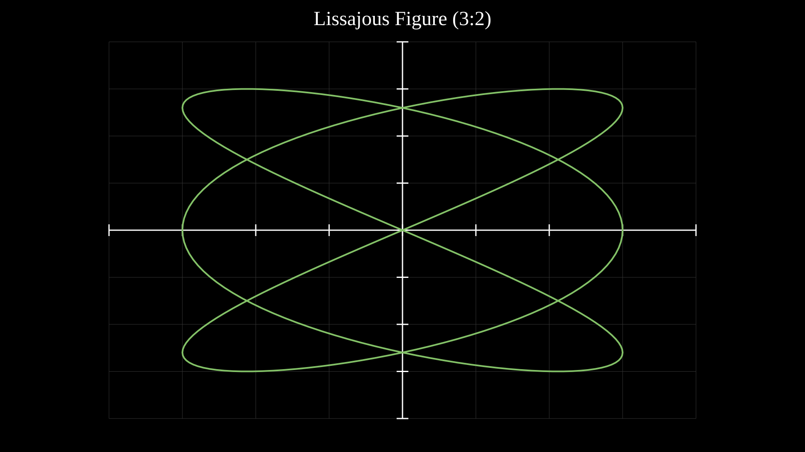
A Lissajous figure plotted as a parametric curve on axes.
# Plot a Lissajous figure as a parametric curve
axes = Axes(x_range=(-4, 4), y_range=(-4, 4), show_grid=True,
plot_height=900)
# Lissajous: x = 3*sin(3t), y = 3*sin(2t)
curve = axes.plot_parametric(
lambda t: (3 * math.sin(3 * t), 3 * math.sin(2 * t)),
t_range=(0, 2 * math.pi),
num_points=300,
stroke='#83C167', stroke_width=4,
)
title = Text(text='Lissajous Figure (3:2)', x=960, y=60,
font_size=48, fill='#fff', stroke_width=0, text_anchor='middle')
canvas.add_objects(axes, title)
if args.for_docs:
canvas.write_frame(filename='docs/source/_static/videos/parametric_curve_example.svg')
Example: PolarPlot
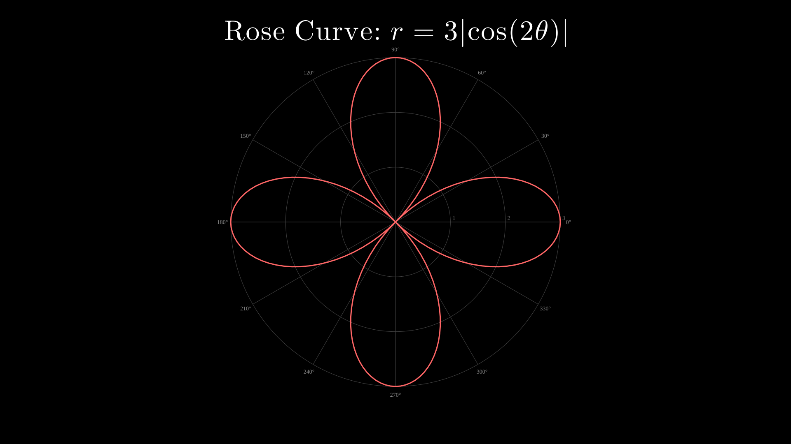
A 4-petal rose curve drawn on polar axes with plot_polar.
# Create polar axes and plot a rose curve
polar = PolarAxes(r_range=(0, 3), n_rings=3, n_sectors=12)
# Plot a 4-petal rose: r = 3*cos(2*theta)
curve = polar.plot_polar(
lambda theta: 3 * abs(math.cos(math.radians(theta) * 2)),
theta_range=(0, 360),
stroke='#FF6666', stroke_width=3,
)
title = TexObject(r'Rose Curve: $r = 3|\cos(2\theta)|$',
font_size=44, fill='#fff')
title.center_to_pos(960, 80)
canvas.add_objects(polar, title)
if args.for_docs:
canvas.write_frame(filename='docs/source/_static/videos/polar_plot_example.svg')
Example: AxesPlotTypes
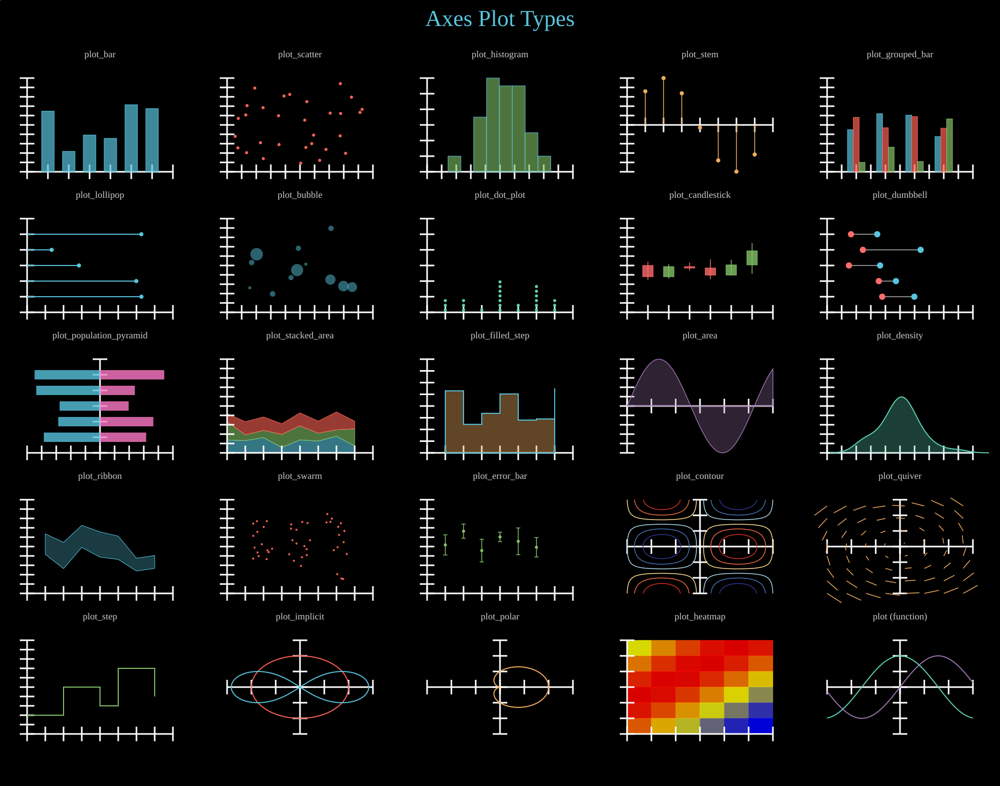
All Axes plot types: plot_bar, plot_scatter, plot_histogram, plot_stem, plot_grouped_bar, plot_lollipop, plot_bubble, plot_dot_plot, plot_candlestick, plot_dumbbell, plot_population_pyramid, plot_stacked_area, plot_filled_step, plot_area, plot_density, plot_ribbon, plot_swarm, plot_error_bar, plot_contour, plot_quiver, plot_step, plot_implicit, plot_polar, plot_heatmap, ParametricFunction.
Show code
def col_x(c): return COL_W // 2 + c * COL_W
def lbl_y(r): return FIRST_ROW + r * ROW_H - 10
def obj_y(r): return FIRST_ROW + r * ROW_H + 30
title = Text(text='Axes Plot Types', x=960, y=TITLE_Y, font_size=44,
fill='#58C4DD', stroke_width=0, text_anchor='middle')
objs = [title]
# Helper to make a label and axes pair
def make_cell(r, c, label_text):
lbl = Text(text=label_text, x=col_x(c), y=lbl_y(r), font_size=18,
fill='#cccccc', stroke_width=0, text_anchor='middle')
objs.append(lbl)
# ── Row 0 ────────────────────────────────────────────────────────────────
# plot_bar
make_cell(0, 0, 'plot_bar')
ax = Axes(x_range=(0, 7), y_range=(0, 10), plot_width=280, plot_height=180,
x=col_x(0) - 140, y=obj_y(0))
xs = [1, 2, 3, 4, 5, 6]
ys = [random.uniform(2, 9) for _ in xs]
ax.plot_bar(xs, ys, bar_width=0.6, fill='#58C4DD', fill_opacity=0.7)
objs.append(ax)
# plot_scatter
make_cell(0, 1, 'plot_scatter')
ax = Axes(x_range=(0, 10), y_range=(0, 10), plot_width=280, plot_height=180,
x=col_x(1) - 140, y=obj_y(0))
sx = [random.uniform(0.5, 9.5) for _ in range(30)]
sy = [random.uniform(0.5, 9.5) for _ in range(30)]
ax.plot_scatter(sx, sy, r=3, fill='#FC6255')
objs.append(ax)
# plot_histogram
make_cell(0, 2, 'plot_histogram')
ax = Axes(x_range=(0, 10), y_range=(0, 12), plot_width=280, plot_height=180,
x=col_x(2) - 140, y=obj_y(0))
hist_data = [random.gauss(5, 1.5) for _ in range(50)]
ax.plot_histogram(hist_data, bins=8, fill='#83C167', fill_opacity=0.6)
objs.append(ax)
# plot_stem
make_cell(0, 3, 'plot_stem')
ax = Axes(x_range=(0, 8), y_range=(-1, 1), plot_width=280, plot_height=180,
x=col_x(3) - 140, y=obj_y(0))
stem_x = [i for i in range(1, 8)]
stem_y = [math.sin(i * 0.8) for i in stem_x]
ax.plot_stem(stem_x, stem_y, stroke='#F0AC5F', dot_fill='#F0AC5F')
objs.append(ax)
# plot_grouped_bar
make_cell(0, 4, 'plot_grouped_bar')
ax = Axes(x_range=(0, 5), y_range=(0, 10), plot_width=280, plot_height=180,
x=col_x(4) - 140, y=obj_y(0))
grouped_data = [[random.uniform(3, 8) for _ in range(4)],
[random.uniform(2, 7) for _ in range(4)],
[random.uniform(1, 6) for _ in range(4)]]
ax.plot_grouped_bar(grouped_data, bar_width=0.2,
colors=['#58C4DD', '#FC6255', '#83C167'])
objs.append(ax)
# ── Row 1 ────────────────────────────────────────────────────────────────
# plot_lollipop
make_cell(1, 0, 'plot_lollipop')
ax = Axes(x_range=(0, 8), y_range=(0, 6), plot_width=280, plot_height=180,
x=col_x(0) - 140, y=obj_y(1))
lollipop_y = [1, 2, 3, 4, 5]
lollipop_v = [random.uniform(1, 7) for _ in lollipop_y]
ax.plot_lollipop(lollipop_y, lollipop_v, r=4, fill='#9A72AC')
objs.append(ax)
# plot_bubble
make_cell(1, 1, 'plot_bubble')
ax = Axes(x_range=(0, 10), y_range=(0, 10), plot_width=280, plot_height=180,
x=col_x(1) - 140, y=obj_y(1))
bx = [random.uniform(1, 9) for _ in range(12)]
by = [random.uniform(1, 9) for _ in range(12)]
bsizes = [random.uniform(5, 40) for _ in range(12)]
ax.plot_bubble(bx, by, bsizes, max_radius=12, fill='#58C4DD', fill_opacity=0.5)
objs.append(ax)
# plot_dot_plot
make_cell(1, 2, 'plot_dot_plot')
ax = Axes(x_range=(0, 8), y_range=(0, 6), plot_width=280, plot_height=180,
x=col_x(2) - 140, y=obj_y(1))
dot_vals = [random.randint(1, 7) for _ in range(25)]
ax.plot_dot_plot(dot_vals, stack_spacing=0.3, r=3, fill='#5CD0B3')
objs.append(ax)
# plot_candlestick
make_cell(1, 3, 'plot_candlestick')
ax = Axes(x_range=(0, 7), y_range=(0, 20), plot_width=280, plot_height=180,
x=col_x(3) - 140, y=obj_y(1))
candle_data = []
price = 10
for i in range(6):
o = price
c = o + random.uniform(-3, 3)
h = max(o, c) + random.uniform(0, 2)
l = min(o, c) - random.uniform(0, 2)
candle_data.append((i + 1, o, h, max(l, 0.5), c))
price = c
ax.plot_candlestick(candle_data, bar_width=0.5)
objs.append(ax)
# plot_dumbbell
make_cell(1, 4, 'plot_dumbbell')
ax = Axes(x_range=(0, 10), y_range=(0, 6), plot_width=280, plot_height=180,
x=col_x(4) - 140, y=obj_y(1))
db_y = [1, 2, 3, 4, 5]
db_start = [random.uniform(1, 4) for _ in db_y]
db_end = [s + random.uniform(1, 4) for s in db_start]
ax.plot_dumbbell(db_y, db_start, db_end)
objs.append(ax)
# ── Row 2 ────────────────────────────────────────────────────────────────
# plot_population_pyramid
make_cell(2, 0, 'plot_population_pyramid')
ax = Axes(x_range=(-10, 10), y_range=(0, 6), plot_width=280, plot_height=180,
x=col_x(0) - 140, y=obj_y(2))
cats = [1, 2, 3, 4, 5]
left_vals = [random.uniform(3, 9) for _ in cats]
right_vals = [random.uniform(3, 9) for _ in cats]
ax.plot_population_pyramid(cats, left_vals, right_vals)
objs.append(ax)
# plot_stacked_area
make_cell(2, 1, 'plot_stacked_area')
ax = Axes(x_range=(0, 8), y_range=(0, 20), plot_width=280, plot_height=180,
x=col_x(1) - 140, y=obj_y(2))
stacked = [[random.uniform(1, 4) for _ in range(8)],
[random.uniform(1, 4) for _ in range(8)],
[random.uniform(1, 4) for _ in range(8)]]
ax.plot_stacked_area(stacked, colors=['#58C4DD', '#83C167', '#FC6255'])
objs.append(ax)
# plot_filled_step
make_cell(2, 2, 'plot_filled_step')
ax = Axes(x_range=(0, 8), y_range=(0, 8), plot_width=280, plot_height=180,
x=col_x(2) - 140, y=obj_y(2))
fsx = list(range(1, 8))
fsy = [random.uniform(1, 7) for _ in fsx]
ax.plot_filled_step(fsx, fsy, fill='#F0AC5F', fill_opacity=0.4)
objs.append(ax)
# plot_area
make_cell(2, 3, 'plot_area')
ax = Axes(x_range=(0, 6), y_range=(-1, 1), plot_width=280, plot_height=180,
x=col_x(3) - 140, y=obj_y(2))
ax.plot_area(lambda x: math.sin(x * 1.2), fill='#9A72AC', fill_opacity=0.3,
stroke='#9A72AC')
objs.append(ax)
# plot_density
make_cell(2, 4, 'plot_density')
ax = Axes(x_range=(0, 10), y_range=(0, 0.5), plot_width=280, plot_height=180,
x=col_x(4) - 140, y=obj_y(2))
density_data = [random.gauss(5, 1.2) for _ in range(40)]
ax.plot_density(density_data, fill='#5CD0B3', fill_opacity=0.3, stroke='#5CD0B3')
objs.append(ax)
# ── Row 3 ────────────────────────────────────────────────────────────────
# plot_ribbon
make_cell(3, 0, 'plot_ribbon')
ax = Axes(x_range=(0, 8), y_range=(0, 10), plot_width=280, plot_height=180,
x=col_x(0) - 140, y=obj_y(3))
rib_x = list(range(1, 8))
rib_mid = [random.uniform(3, 7) for _ in rib_x]
rib_lo = [m - random.uniform(0.5, 1.5) for m in rib_mid]
rib_hi = [m + random.uniform(0.5, 1.5) for m in rib_mid]
ax.plot_ribbon(rib_x, rib_lo, rib_hi, fill='#58C4DD', fill_opacity=0.3)
objs.append(ax)
# plot_swarm
make_cell(3, 1, 'plot_swarm')
ax = Axes(x_range=(0, 4), y_range=(0, 10), plot_width=280, plot_height=180,
x=col_x(1) - 140, y=obj_y(3))
swarm_x = [1, 2, 3]
swarm_groups = [[random.gauss(5, 1.5) for _ in range(15)] for _ in swarm_x]
ax.plot_swarm(swarm_x, swarm_groups, r=2, fill='#FC6255')
objs.append(ax)
# plot_error_bar
make_cell(3, 2, 'plot_error_bar')
ax = Axes(x_range=(0, 8), y_range=(0, 10), plot_width=280, plot_height=180,
x=col_x(2) - 140, y=obj_y(3))
eb_x = list(range(1, 7))
eb_y = [random.uniform(3, 8) for _ in eb_x]
eb_err = [random.uniform(0.5, 1.5) for _ in eb_x]
ax.plot_error_bar(eb_x, eb_y, eb_err, r=3, fill='#83C167', stroke='#83C167')
objs.append(ax)
# plot_contour
make_cell(3, 3, 'plot_contour')
ax = Axes(x_range=(-3, 3), y_range=(-3, 3), plot_width=280, plot_height=180,
x=col_x(3) - 140, y=obj_y(3))
ax.plot_contour(lambda x, y: math.sin(x) * math.cos(y), levels=6)
objs.append(ax)
# plot_quiver
make_cell(3, 4, 'plot_quiver')
ax = Axes(x_range=(-3, 3), y_range=(-3, 3), plot_width=280, plot_height=180,
x=col_x(4) - 140, y=obj_y(3))
ax.plot_quiver(lambda x, y: (-y, x), x_step=0.8, y_step=0.8,
scale=0.2, stroke='#F0AC5F')
objs.append(ax)
# ── Row 4 ────────────────────────────────────────────────────────────────
# plot_step
make_cell(4, 0, 'plot_step')
ax = Axes(x_range=(0, 8), y_range=(0, 10), plot_width=280, plot_height=180,
x=col_x(0) - 140, y=obj_y(4))
ax.plot_step([0, 1, 2, 3, 4, 5, 6, 7], [2, 2, 5, 5, 3, 7, 7, 4],
stroke='#83C167', stroke_width=2)
objs.append(ax)
# plot_implicit
make_cell(4, 1, 'plot_implicit')
ax = Axes(x_range=(-3, 3), y_range=(-3, 3), plot_width=280, plot_height=180,
x=col_x(1) - 140, y=obj_y(4))
ax.plot_implicit(lambda x, y: x**2 + y**2 - 4, num_points=80,
stroke='#FC6255', stroke_width=2)
ax.plot_implicit(lambda x, y: (x**2 + y**2)**2 - 8 * (x**2 - y**2),
num_points=120, stroke='#58C4DD', stroke_width=2)
objs.append(ax)
# plot_polar
make_cell(4, 2, 'plot_polar')
ax = Axes(x_range=(-3, 3), y_range=(-3, 3), plot_width=280, plot_height=180,
x=col_x(2) - 140, y=obj_y(4))
ax.plot_polar(lambda t: 1 + math.cos(t), stroke='#F0AC5F', stroke_width=2)
objs.append(ax)
# plot_heatmap
make_cell(4, 3, 'plot_heatmap')
ax = Axes(x_range=(0, 6), y_range=(0, 6), plot_width=280, plot_height=180,
x=col_x(3) - 140, y=obj_y(4))
hm = [[math.sin(r * 0.5 + c * 0.4) for c in range(6)] for r in range(6)]
ax.plot_heatmap(hm)
objs.append(ax)
# plot (function graph)
make_cell(4, 4, 'plot (function)')
ax = Axes(x_range=(-3, 3), y_range=(-1.5, 1.5), plot_width=280, plot_height=180,
x=col_x(4) - 140, y=obj_y(4))
ax.plot(lambda x: math.sin(x), stroke='#9A72AC', stroke_width=2)
ax.plot(lambda x: math.cos(x), stroke='#5CD0B3', stroke_width=2)
objs.append(ax)
# ── Render ────────────────────────────────────────────────────────────────
canvas.add_objects(*objs)
Example: AxesAnnotations
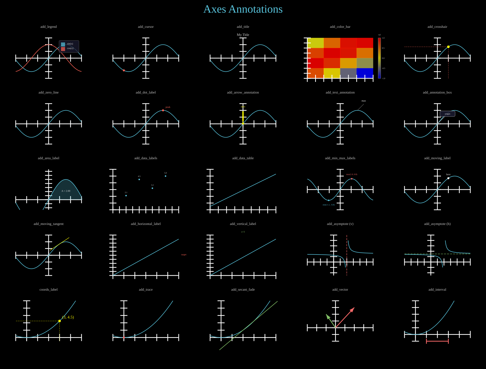
Axes annotation methods: add_legend, add_cursor, add_title, add_color_bar, add_crosshair, add_zero_line, add_dot_label, add_arrow_annotation, add_text_annotation, add_annotation_box, add_area_label, add_data_labels, add_data_table, add_min_max_labels, add_moving_label, add_moving_tangent, add_horizontal_label, add_vertical_label, add_asymptote, coords_label, add_trace, add_secant_fade, add_vector, add_interval.
Show code
def col_x(c): return COL_W // 2 + c * COL_W
def lbl_y(r): return FIRST_ROW + r * ROW_H - 10
def obj_y(r): return FIRST_ROW + r * ROW_H + 30
title = Text(text='Axes Annotations', x=960, y=TITLE_Y, font_size=44,
fill='#58C4DD', stroke_width=0, text_anchor='middle')
objs = [title]
def make_cell(r, c, label_text):
lbl = Text(text=label_text, x=col_x(c), y=lbl_y(r), font_size=14,
fill='#cccccc', stroke_width=0, text_anchor='middle')
objs.append(lbl)
def make_axes(r, c, x_range=(-3, 3), y_range=(-1.5, 1.5)):
ax = Axes(x_range=x_range, y_range=y_range, plot_width=260, plot_height=160,
x=col_x(c) - 130, y=obj_y(r))
return ax
sin_func = lambda x: math.sin(x)
cos_func = lambda x: math.cos(x)
# ── Row 0 ────────────────────────────────────────────────────────────────
make_cell(0, 0, 'add_legend')
ax = make_axes(0, 0)
ax.plot(sin_func, stroke='#58C4DD', stroke_width=2)
ax.plot(cos_func, stroke='#FC6255', stroke_width=2)
ax.add_legend(entries=[('sin(x)', '#58C4DD'), ('cos(x)', '#FC6255')],
position='upper right', font_size=10)
objs.append(ax)
make_cell(0, 1, 'add_cursor')
ax = make_axes(0, 1)
ax.plot(sin_func, stroke='#58C4DD', stroke_width=2)
ax.add_cursor(sin_func, x_start=-2, x_end=2, start=0, end=0,
r=4, fill='#FC6255')
objs.append(ax)
make_cell(0, 2, 'add_title')
ax = make_axes(0, 2)
ax.plot(sin_func, stroke='#58C4DD', stroke_width=2)
ax.add_title('My Title', font_size=14, buff=8)
objs.append(ax)
make_cell(0, 3, 'add_color_bar')
ax = make_axes(0, 3, x_range=(0, 4), y_range=(0, 4))
data = [[math.sin(r * 0.8 + c * 0.6) for c in range(4)] for r in range(4)]
ax.plot_heatmap(data)
ax.add_color_bar(vmin=-1, vmax=1, label='val', width=10, font_size=8)
objs.append(ax)
make_cell(0, 4, 'add_crosshair')
ax = make_axes(0, 4)
ax.plot(sin_func, stroke='#58C4DD', stroke_width=2)
ax.add_crosshair(sin_func, x_start=1, x_end=1, start=0, end=0,
stroke='#FC6255')
objs.append(ax)
# ── Row 1 ────────────────────────────────────────────────────────────────
make_cell(1, 0, 'add_zero_line')
ax = make_axes(1, 0)
ax.plot(sin_func, stroke='#58C4DD', stroke_width=2)
ax.add_zero_line(axis='x', stroke='#FC6255', stroke_width=1.5)
objs.append(ax)
make_cell(1, 1, 'add_dot_label')
ax = make_axes(1, 1)
ax.plot(sin_func, stroke='#58C4DD', stroke_width=2)
ax.add_dot_label(1.57, 1.0, label='peak', dot_color='#FC6255',
dot_radius=4, font_size=10)
objs.append(ax)
make_cell(1, 2, 'add_arrow_annotation')
ax = make_axes(1, 2)
ax.plot(sin_func, stroke='#58C4DD', stroke_width=2)
ax.add_arrow_annotation(0, 0, 'zero', direction='up', length=40,
font_size=10)
objs.append(ax)
make_cell(1, 3, 'add_text_annotation')
ax = make_axes(1, 3)
ax.plot(sin_func, stroke='#58C4DD', stroke_width=2)
ax.add_text_annotation(1.57, 1.0, 'max', font_size=10, dx=25, dy=-25)
objs.append(ax)
make_cell(1, 4, 'add_annotation_box')
ax = make_axes(1, 4)
ax.plot(sin_func, stroke='#58C4DD', stroke_width=2)
ax.add_annotation_box(0, 0, 'origin', box_width=60, box_height=22,
offset=(40, -40), font_size=9)
objs.append(ax)
# ── Row 2 ────────────────────────────────────────────────────────────────
make_cell(2, 0, 'add_area_label')
ax = make_axes(2, 0, y_range=(-0.5, 1.5))
ax.plot(sin_func, stroke='#58C4DD', stroke_width=2)
ax.get_area(sin_func, x_range=(0, 3.14), fill='#58C4DD', fill_opacity=0.25)
ax.add_area_label(sin_func, x_range=(0, 3.14), font_size=10)
objs.append(ax)
make_cell(2, 1, 'add_data_labels')
ax = make_axes(2, 1, x_range=(0, 5), y_range=(0, 6))
x_data, y_data = [1, 2, 3, 4], [2.1, 4.5, 3.2, 5.0]
ax.plot_scatter(x_data, y_data, r=3, fill='#58C4DD')
ax.add_data_labels(x_data, y_data, fmt='{:.1f}', font_size=8, offset_y=-10)
objs.append(ax)
make_cell(2, 2, 'add_data_table')
ax = make_axes(2, 2, x_range=(0, 4), y_range=(0, 6))
ax.plot(lambda x: x * 1.2 + 0.5, stroke='#58C4DD', stroke_width=2)
ax.add_data_table(headers=['x', 'y'], rows=[['1', '1.7'], ['2', '2.9'], ['3', '4.1']],
font_size=8, cell_width=40, cell_height=14)
objs.append(ax)
make_cell(2, 3, 'add_min_max_labels')
ax = make_axes(2, 3)
wave = lambda x: math.sin(x * 1.5) * 0.8
ax.plot(wave, stroke='#58C4DD', stroke_width=2)
ax.add_min_max_labels(wave, font_size=8, dot_radius=3)
objs.append(ax)
make_cell(2, 4, 'add_moving_label')
ax = make_axes(2, 4)
ax.plot(sin_func, stroke='#58C4DD', stroke_width=2)
ax.add_moving_label(sin_func, text='here', x_start=1, x_end=1,
start=0, end=0, font_size=10, offset_y=-12)
objs.append(ax)
# ── Row 3 ────────────────────────────────────────────────────────────────
make_cell(3, 0, 'add_moving_tangent')
ax = make_axes(3, 0)
ax.plot(sin_func, stroke='#58C4DD', stroke_width=2)
ax.add_moving_tangent(sin_func, x_start=1, x_end=1, start=0, end=0,
length=2, stroke='#FFFF00', stroke_width=1.5)
objs.append(ax)
make_cell(3, 1, 'add_horizontal_label')
ax = make_axes(3, 1, x_range=(0, 6), y_range=(0, 10))
ax.plot(lambda x: x * 1.5, stroke='#58C4DD', stroke_width=2)
ax.add_horizontal_label(5, 'target', side='right', font_size=9, fill='#FC6255')
objs.append(ax)
make_cell(3, 2, 'add_vertical_label')
ax = make_axes(3, 2, x_range=(0, 6), y_range=(0, 10))
ax.plot(lambda x: x * 1.5, stroke='#58C4DD', stroke_width=2)
ax.add_vertical_label(3, 'x=3', side='top', font_size=9, fill='#83C167')
objs.append(ax)
make_cell(3, 3, 'add_asymptote (v)')
ax = make_axes(3, 3, x_range=(-4, 6), y_range=(-5, 10))
f_rat = lambda x: 1 / (x - 2) + 3 if abs(x - 2) > 0.05 else float('nan')
ax.plot(f_rat, x_range=(-4, 1.8), stroke='#58C4DD', stroke_width=2)
ax.plot(f_rat, x_range=(2.2, 6), stroke='#58C4DD', stroke_width=2)
ax.add_asymptote(2, direction='vertical', stroke='#FF6B6B')
objs.append(ax)
make_cell(3, 4, 'add_asymptote (h)')
ax = make_axes(3, 4, x_range=(-4, 6), y_range=(-5, 10))
ax.plot(f_rat, x_range=(-4, 1.8), stroke='#58C4DD', stroke_width=2)
ax.plot(f_rat, x_range=(2.2, 6), stroke='#58C4DD', stroke_width=2)
ax.add_asymptote(3, direction='horizontal', stroke='#83C167')
objs.append(ax)
# ── Row 4 ────────────────────────────────────────────────────────────────
make_cell(4, 0, 'coords_label')
ax = make_axes(4, 0, x_range=(-1, 5), y_range=(-1, 10))
f_quad = lambda x: 0.5 * x ** 2
ax.plot(f_quad, stroke='#58C4DD', stroke_width=2)
ax.coords_label(3, f_quad(3), fill='#FFFF00')
objs.append(ax)
make_cell(4, 1, 'add_trace')
ax = make_axes(4, 1, x_range=(-1, 5), y_range=(-1, 10))
ax.plot(f_quad, stroke='#58C4DD', stroke_width=2)
ax.add_trace(f_quad, 0, 4, start=0, end=0, r=4, trail_width=1.5,
fill='#FF6B6B', stroke='#FF6B6B')
objs.append(ax)
make_cell(4, 2, 'add_secant_fade')
ax = make_axes(4, 2, x_range=(-1, 5), y_range=(-1, 10))
ax.plot(f_quad, stroke='#58C4DD', stroke_width=2)
ax.add_secant_fade(f_quad, x=2, dx_start=1, dx_end=1, start=0, end=0,
stroke='#83C167')
objs.append(ax)
make_cell(4, 3, 'add_vector')
ax = make_axes(4, 3, x_range=(-3, 4), y_range=(-2, 4))
ax.add_vector(2, 3, stroke='#FF6B6B', fill='#FF6B6B')
ax.add_vector(-1, 2, stroke='#83C167', fill='#83C167')
objs.append(ax)
make_cell(4, 4, 'add_interval')
ax = make_axes(4, 4, x_range=(-1, 5), y_range=(-1, 5))
ax.plot(lambda x: 0.4 * x ** 2, stroke='#58C4DD', stroke_width=2)
ax.add_interval(1, 3, stroke='#FF6B6B', stroke_width=3)
objs.append(ax)
# ── Output ────────────────────────────────────────────────────────────────
canvas.add_objects(*objs)
Example: AxesOverlays
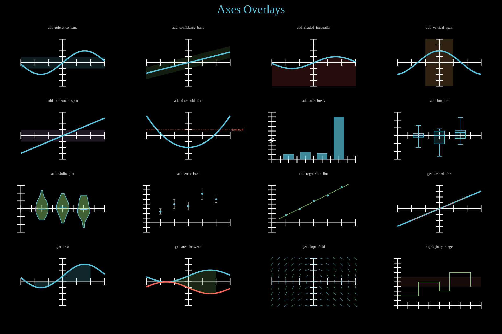
Axes overlay methods: add_reference_band, add_confidence_band, add_shaded_inequality, add_vertical_span, add_horizontal_span, add_threshold_line, add_axis_break, add_boxplot, add_violin_plot, add_error_bars, add_regression_line, get_dashed_line, get_area, get_area_between, get_slope_field, highlight_y_range.
Show code
def col_x(c): return COL_W // 2 + c * COL_W
def lbl_y(r): return FIRST_ROW + r * ROW_H - 10
def obj_y(r): return FIRST_ROW + r * ROW_H + 30
title = Text(text='Axes Overlays', x=960, y=TITLE_Y, font_size=44,
fill='#58C4DD', stroke_width=0, text_anchor='middle')
objs = [title]
def add_label(c, r, text):
lbl = Text(text=text, x=col_x(c), y=lbl_y(r), font_size=14,
fill='#ccc', stroke_width=0, text_anchor='middle')
objs.append(lbl)
def make_axes(c, r, x_range=(-3, 3), y_range=(-2, 2)):
return Axes(x_range=x_range, y_range=y_range,
x=col_x(c) - 160, y=obj_y(r),
plot_width=320, plot_height=180)
# ── Row 0 ────────────────────────────────────────────────────────────────
add_label(0, 0, 'add_reference_band')
ax = make_axes(0, 0)
ax.plot(lambda x: math.sin(x), stroke='#58C4DD')
ax.add_reference_band(-0.5, 0.5, axis='y', fill='#58C4DD', fill_opacity=0.15)
objs.append(ax)
add_label(1, 0, 'add_confidence_band')
ax = make_axes(1, 0)
ax.plot(lambda x: 0.3 * x, stroke='#58C4DD')
ax.add_confidence_band(lambda x: 0.3 * x - 0.5, lambda x: 0.3 * x + 0.5,
fill='#83C167', fill_opacity=0.15)
objs.append(ax)
add_label(2, 0, 'add_shaded_inequality')
ax = make_axes(2, 0)
ax.plot(lambda x: 0.5 * math.sin(x), stroke='#58C4DD')
ax.add_shaded_inequality(lambda x: 0.5 * math.sin(x), direction='below',
fill='#FC6255', fill_opacity=0.15)
objs.append(ax)
add_label(3, 0, 'add_vertical_span')
ax = make_axes(3, 0)
ax.plot(lambda x: math.cos(x), stroke='#58C4DD')
ax.add_vertical_span(-1, 1, fill='#F0AC5F', fill_opacity=0.2)
objs.append(ax)
# ── Row 1 ────────────────────────────────────────────────────────────────
add_label(0, 1, 'add_horizontal_span')
ax = make_axes(0, 1)
ax.plot(lambda x: 0.5 * x, stroke='#58C4DD')
ax.add_horizontal_span(-0.5, 0.5, fill='#9A72AC', fill_opacity=0.2)
objs.append(ax)
add_label(1, 1, 'add_threshold_line')
ax = make_axes(1, 1)
ax.plot(lambda x: 0.3 * x ** 2 - 1, stroke='#58C4DD')
ax.add_threshold_line(0.5, label='threshold', font_size=12, stroke='#FC6255')
objs.append(ax)
add_label(2, 1, 'add_axis_break')
ax = make_axes(2, 1, x_range=(0, 5), y_range=(0, 100))
ax.plot_bar([1, 2, 3, 4], [10, 15, 12, 90], bar_width=0.6,
fill='#58C4DD', fill_opacity=0.7)
ax.add_axis_break(40, axis='y', size=10)
objs.append(ax)
add_label(3, 1, 'add_boxplot')
ax = make_axes(3, 1, x_range=(0, 4), y_range=(-3, 3))
groups = [[random.gauss(0, 1) for _ in range(20)] for _ in range(3)]
ax.add_boxplot(groups, x_positions=[1, 2, 3], width=0.5, stroke='#58C4DD')
objs.append(ax)
# ── Row 2 ────────────────────────────────────────────────────────────────
add_label(0, 2, 'add_violin_plot')
ax = make_axes(0, 2, x_range=(0, 4), y_range=(-3, 3))
v_groups = [[random.gauss(0, 1) for _ in range(20)] for _ in range(3)]
ax.add_violin_plot(v_groups, x_positions=[1, 2, 3], width=0.6,
fill='#83C167', fill_opacity=0.5)
objs.append(ax)
add_label(1, 2, 'add_error_bars')
ax = make_axes(1, 2, x_range=(0, 6), y_range=(-1, 4))
xd, yd = [1, 2, 3, 4, 5], [1.2, 2.0, 1.8, 3.1, 2.5]
yerr = [0.3, 0.5, 0.4, 0.6, 0.35]
ax.plot_scatter(xd, yd, r=4, fill='#58C4DD')
ax.add_error_bars(xd, yd, yerr, stroke='#aaa', cap_width=4)
objs.append(ax)
add_label(2, 2, 'add_regression_line')
ax = make_axes(2, 2, x_range=(0, 6), y_range=(-1, 4))
xr, yr = [1, 2, 3, 4, 5], [0.8, 1.5, 2.3, 2.9, 3.8]
ax.plot_scatter(xr, yr, r=4, fill='#58C4DD')
ax.add_regression_line(xr, yr, stroke='#83C167')
objs.append(ax)
add_label(3, 2, 'get_dashed_line')
ax = make_axes(3, 2)
ax.plot(lambda x: 0.5 * x, stroke='#58C4DD')
ax.get_dashed_line(-2, -1, 2, 1, stroke='#FC6255')
objs.append(ax)
# ── Row 3 ────────────────────────────────────────────────────────────────
add_label(0, 3, 'get_area')
ax = make_axes(0, 3)
ax.plot(lambda x: math.sin(x) + 0.5, stroke='#58C4DD')
ax.get_area(lambda x: math.sin(x) + 0.5, x_range=(-2, 2),
fill='#58C4DD', fill_opacity=0.2)
objs.append(ax)
add_label(1, 3, 'get_area_between')
ax = make_axes(1, 3)
ax.plot(lambda x: 0.5 * math.sin(x) + 0.5, stroke='#58C4DD')
ax.plot(lambda x: -0.5 * math.sin(x) - 0.5, stroke='#FC6255')
ax.get_area_between(lambda x: 0.5 * math.sin(x) + 0.5,
lambda x: -0.5 * math.sin(x) - 0.5,
x_range=(-2, 2), fill='#83C167', fill_opacity=0.2)
objs.append(ax)
add_label(2, 3, 'get_slope_field')
ax = make_axes(2, 3)
ax.get_slope_field(lambda x, y: -x / max(abs(y), 0.1),
x_step=0.5, y_step=0.5, length=0.3, stroke='#58C4DD')
objs.append(ax)
add_label(3, 3, 'highlight_y_range')
ax = make_axes(3, 3, x_range=(0, 8), y_range=(0, 10))
ax.plot_step([0, 1, 2, 3, 4, 5, 6, 7], [2, 2, 5, 5, 3, 7, 7, 4],
stroke='#83C167', stroke_width=2)
ax.highlight_y_range(4, 6, fill='#FF6B6B', fill_opacity=0.1)
objs.append(ax)
# ── Output ────────────────────────────────────────────────────────────────
canvas.add_objects(*objs)
Example: AxesFormatters
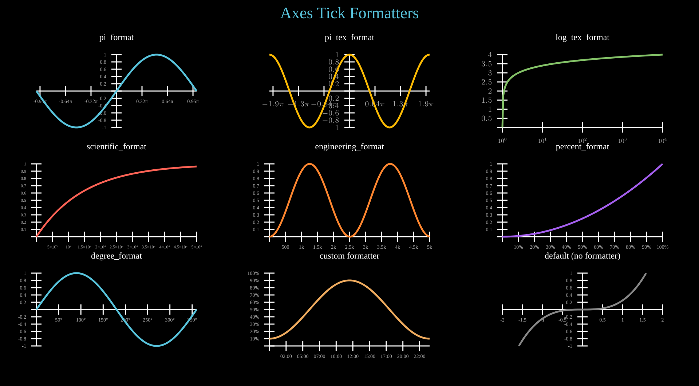
Axes tick formatters: pi_format, pi_tex_format, log_tex_format, scientific_format, engineering_format, percent_format, degree_format.
Show code
def col_x(c): return COL_W // 2 + c * COL_W
def lbl_y(r): return FIRST_ROW + r * ROW_H - 10
def obj_y(r): return FIRST_ROW + r * ROW_H + 30
title = Text(text='Axes Tick Formatters', x=960, y=TITLE_Y, font_size=44,
fill='#58C4DD', stroke_width=0, text_anchor='middle')
objs = [title]
PW, PH = 440, 200
# ---------- Row 0 ----------
# pi_format
r, c = 0, 0
lbl = Text(text='pi_format', x=col_x(c), y=lbl_y(r), font_size=24,
fill='white', stroke_width=0, text_anchor='middle')
ax = Axes(x_range=(-math.pi, math.pi, math.pi / 2), y_range=(-1, 1, 0.5),
plot_width=PW, plot_height=PH, x=col_x(c) - PW // 2, y=obj_y(r),
x_tick_format=pi_format)
ax.add_coordinates(font_size=14)
ax.plot(lambda x: math.sin(x), color='#58C4DD')
objs += [lbl, ax]
# pi_tex_format
r, c = 0, 1
lbl = Text(text='pi_tex_format', x=col_x(c), y=lbl_y(r), font_size=24,
fill='white', stroke_width=0, text_anchor='middle')
ax = Axes(x_range=(-2 * math.pi, 2 * math.pi, math.pi), y_range=(-1, 1, 0.5),
plot_width=PW, plot_height=PH, x=col_x(c) - PW // 2, y=obj_y(r),
x_tick_format=pi_tex_format)
ax.add_coordinates(font_size=14, tex=True)
ax.plot(lambda x: math.cos(x), color='#FCBA03')
objs += [lbl, ax]
# log_tex_format
r, c = 0, 2
lbl = Text(text='log_tex_format', x=col_x(c), y=lbl_y(r), font_size=24,
fill='white', stroke_width=0, text_anchor='middle')
ax = Axes(x_range=(1, 10000), y_range=(0, 4, 1),
plot_width=PW, plot_height=PH, x=col_x(c) - PW // 2, y=obj_y(r),
x_tick_format=log_tex_format, x_scale='log',
x_ticks=[1, 10, 100, 1000, 10000])
ax.add_coordinates(font_size=14, tex=True)
ax.plot(lambda x: math.log10(x) if x > 0 else 0, color='#83C167')
objs += [lbl, ax]
# ---------- Row 1 ----------
# scientific_format
r, c = 1, 0
lbl = Text(text='scientific_format', x=col_x(c), y=lbl_y(r), font_size=24,
fill='white', stroke_width=0, text_anchor='middle')
ax = Axes(x_range=(0, 50000, 10000), y_range=(0, 1, 0.5),
plot_width=PW, plot_height=PH, x=col_x(c) - PW // 2, y=obj_y(r),
x_tick_format=scientific_format)
ax.add_coordinates(font_size=12)
ax.plot(lambda x: 1 - math.exp(-x / 15000), color='#FC6255')
objs += [lbl, ax]
# engineering_format
r, c = 1, 1
lbl = Text(text='engineering_format', x=col_x(c), y=lbl_y(r), font_size=24,
fill='white', stroke_width=0, text_anchor='middle')
ax = Axes(x_range=(0, 5000, 1000), y_range=(0, 1, 0.5),
plot_width=PW, plot_height=PH, x=col_x(c) - PW // 2, y=obj_y(r),
x_tick_format=engineering_format)
ax.add_coordinates(font_size=14)
ax.plot(lambda x: math.sin(x / 800) ** 2, color='#FF862F')
objs += [lbl, ax]
# percent_format
r, c = 1, 2
lbl = Text(text='percent_format', x=col_x(c), y=lbl_y(r), font_size=24,
fill='white', stroke_width=0, text_anchor='middle')
ax = Axes(x_range=(0, 1, 0.25), y_range=(0, 1, 0.5),
plot_width=PW, plot_height=PH, x=col_x(c) - PW // 2, y=obj_y(r),
x_tick_format=percent_format)
ax.add_coordinates(font_size=14)
ax.plot(lambda x: x ** 2, color='#A55FEF')
objs += [lbl, ax]
# ---------- Row 2 ----------
# degree_format
r, c = 2, 0
lbl = Text(text='degree_format', x=col_x(c), y=lbl_y(r), font_size=24,
fill='white', stroke_width=0, text_anchor='middle')
ax = Axes(x_range=(0, 360, 90), y_range=(-1, 1, 0.5),
plot_width=PW, plot_height=PH, x=col_x(c) - PW // 2, y=obj_y(r),
x_tick_format=degree_format)
ax.add_coordinates(font_size=14)
ax.plot(lambda x: math.sin(math.radians(x)), color='#58C4DD')
objs += [lbl, ax]
# custom formatter (lambda)
r, c = 2, 1
lbl = Text(text='custom formatter', x=col_x(c), y=lbl_y(r), font_size=24,
fill='white', stroke_width=0, text_anchor='middle')
ax = Axes(x_range=(0, 24, 6), y_range=(0, 100, 25),
plot_width=PW, plot_height=PH, x=col_x(c) - PW // 2, y=obj_y(r),
x_tick_format=lambda v: f'{int(v):02d}:00',
y_tick_format=lambda v: f'{v:.0f}%')
ax.add_coordinates(font_size=14)
ax.plot(lambda x: 50 + 40 * math.sin((x - 6) * math.pi / 12), color='#F0AC5F')
objs += [lbl, ax]
# default (no formatter)
r, c = 2, 2
lbl = Text(text='default (no formatter)', x=col_x(c), y=lbl_y(r), font_size=24,
fill='white', stroke_width=0, text_anchor='middle')
ax = Axes(x_range=(-2, 2, 1), y_range=(-1, 1, 0.5),
plot_width=PW, plot_height=PH, x=col_x(c) - PW // 2, y=obj_y(r))
ax.add_coordinates(font_size=14)
ax.plot(lambda x: x ** 3 / 4, color='#888888')
objs += [lbl, ax]
# ---------- render ----------
canvas.add_objects(*objs)
Advanced¶
Example: Spiral
A dot traces a spiral path outward from the centre using parametric motion and rotation.
# Draw the objects
point = Dot()
trace = Trace(point.c)
# point.c.move_to(0, 5, (900, 500))
point.c.set(0, 5, lambda t: (t*80 + 960, 540))
point.c.rotate_around(0, 5, (960, 540), 360*4)
# Add the objects to the canvas
canvas.add_objects(trace, point)
if args.for_docs:
canvas.export_video('docs/source/_static/videos/spiral.mp4', fps=30, end=6)
Example: HeartCurve
A parametric heart curve traced by a moving dot, then filled with red.
# Draw the objects
point = Dot()
point.c.set(0, 2*math.pi, lambda t: (
960 + 20*16*sin(t)**3,
540 - 20*(13*cos(t) - 5*cos(2*t) - 2*cos(3*t) - cos(4*t)),
), stay=True)
trace = Trace(point.c, start=0, end=2*math.pi, dt=1/60, stroke_width=4, stroke=(255,0,0))
pol = trace.to_polygon(2*math.pi)
trace.show.set_onward(7, 0)
pol.styling.fill.set_onward(7, (255,0,0))
pol.styling.fill_opacity.set(7, 8, lambda t: 0.35*(t-7), stay=True)
# Add the objects to the canvas
canvas.add_objects(trace, pol)
if args.for_docs:
canvas.export_video('docs/source/_static/videos/heart.mp4', fps=30, end=9)
Example: SectionsAndSpeedControl
Shapes appear one at a time, pausing at section breaks. Press Space to advance, +/- to change speed.
# Section 1: A circle appears
circle = Circle(r=80, cx=760, cy=540, fill='#58C4DD', fill_opacity=0.8, stroke='#58C4DD')
circle.write(start=0, end=2)
canvas.add_section(2)
# Section 2: A square appears
square = Rectangle(140, 140, x=890, y=470, fill='#FC6255', fill_opacity=0.8,
stroke='#FC6255', rx=5, ry=5)
square.write(start=2, end=4)
canvas.add_section(4)
# Section 3: A triangle appears
tri = EquilateralTriangle(160, cx=1160, cy=540, fill='#83C167', fill_opacity=0.8, stroke='#83C167')
tri.center_to_pos(1160, 540)
tri.write(start=4, end=6)
# Instructions text
hint = Text(text='Press Space to advance sections, +/- to change speed',
x=960, y=950, font_size=16, fill='#888', stroke_width=0, text_anchor='middle')
canvas.add_objects(circle, square, tri, hint)
if args.for_docs:
canvas.export_video('docs/source/_static/videos/speed_and_sections.mp4', fps=30, end=7)
Concepts¶
Example: CodeExplanation

An explanatory diagram showing how VectorMation decomposes an animation into frames, objects, and time-varying attributes.
Show code
### Draw the objects
## Making the upper SVG Video part
video_frame = Rectangle(300, 200, stroke_width=4, fill='grey', stroke='white', fill_opacity=1)
video_frame.center_to_pos(500, 500)
play_button_circle = Circle(r=30, fill_opacity=0, stroke='black', stroke_width=4)
play_button_triangle = EquilateralTriangle(30, angle=-90, fill='black', stroke_width=0, fill_opacity=1)
video_text = TexObject('SVG Video', font_size=35, fill='white')
video_text_height = video_text.bbox(0)[-1]
video_text.center_to_pos(posx=500, posy=400-video_text_height/2-10)
video = VCollection(video_frame, play_button_circle, play_button_triangle, video_text)
video.shift(dy=-300)
## Making the Individual Frames part
# the frames
rects = []
for i_px in range(75, 776, 100):
i = i_px / 120
frame = Rectangle(150, 100, x=i*120, y=350+i*12, fill_opacity=1)
rects.append(frame)
frame_line = Line(x1=500, y1=300, x2=i*120+75, y2=350+i*12, stroke_width=4)
rects.append(frame_line)
frame_text = TexObject(f't={i_px/100}', font_size=14, fill='white')
frame_text_height = frame_text.bbox(0)[-1]
frame_text.center_to_pos(posx=i*120+75, posy=350+i*12+100+frame_text_height/2+5)
rects.append(frame_text)
frame_object = Circle(r=10, cx=i*120+75, cy=370+i*12, fill='blue', fill_opacity=1, stroke_width=0)
frame_object.shift(dy=(i_px/100)**2 / 120 * 120)
rects.append(frame_object)
# the text under the frames
frames_text = TexObject('Individual Frames', font_size=35, fill='white')
frames_text.center_to_pos(posx=500, posy=556)
frames_subtext = TexObject('(collection of all objects at time t)', font_size=18, fill='white')
frames_subtext.center_to_pos(posx=500, posy=595)
frames = VCollection(*rects + [frames_text, frames_subtext])
## Making an bottom object+attributes part
circle = Circle(r=70, cx=200, cy=750, fill='blue', fill_opacity=1, stroke_width=0)
object_text = TexObject('Object(t)', font_size=28, fill='white')
object_text.center_to_pos(200, 850)
attr = TexObject('Attributes(t)', font_size=28, fill='white')
attr.center_to_pos(500, 750)
line_to_attr = Line(x1=270+10, y1=750, x2=attr.bbox(0)[0]-10, y2=750, stroke_width=4)
attr_objects = []
attr_names = ['Show(t)', 'Center(t)', 'Radius(t)', 'Styling(t)']
for idx, a in enumerate(attr_names):
text = TexObject(a, font_size=20, fill='white')
text.center_to_pos(posx=800, posy=750+(idx-1.5)*70)
attr_objects.append(text)
line_to_text = Line(x1=attr.bbox(0)[0]+attr.bbox(0)[2]+10, y1=750, x2=text.bbox(0)[0]-10, y2=750+(idx-1.5)*70, stroke_linecap='round', stroke_width=4)
attr_objects.append(line_to_text)
explanation = TexObject(r'\begin{center}Each object is comprised of attributes.\\Each attribute is a function of time.\end{center}', font_size=18)
explanation.center_to_pos(posx=500, posy=930)
object = VCollection(circle, object_text, line_to_attr, attr, *attr_objects, explanation)
# Add the objects to the canvas
canvas.add_objects(video, frames, object)
# Display the window
if args.for_docs:
canvas.write_frame(filename='docs/source/_static/videos/code_explanation.svg')
Example: Logo
The VectorMation crystal V logo, built from triangular polygon facets.
Show code
# --- Crystal V shape made of triangular facets ---
# Scaled to fill the 1000x1000 canvas
TL = (20, 20) # top left
TR = (980, 20) # top right
B = (500, 970) # bottom tip
IL = (270, 20) # inner top left
IR = (730, 20) # inner top right
ML = (245, 496) # mid left outer
MR = (755, 496) # mid right outer
IML = (385, 496) # inner mid left
IMR = (616, 496) # inner mid right
# Left arm facets (blue tones)
canvas.add_objects(
Polygon(TL, IL, ML,
fill='#0077B6', fill_opacity=0.9, stroke_width=0, z=5),
Polygon(IL, IML, ML,
fill='#00B4D8', fill_opacity=0.85, stroke_width=0, z=5),
Polygon(TL, ML, B,
fill='#023E8A', fill_opacity=0.9, stroke_width=0, z=5),
Polygon(ML, IML, B,
fill='#0096C7', fill_opacity=0.8, stroke_width=0, z=5),
)
# Right arm facets (purple tones)
canvas.add_objects(
Polygon(TR, IR, MR,
fill='#6D28D9', fill_opacity=0.9, stroke_width=0, z=5),
Polygon(IR, IMR, MR,
fill='#8B5CF6', fill_opacity=0.85, stroke_width=0, z=5),
Polygon(TR, MR, B,
fill='#4C1D95', fill_opacity=0.9, stroke_width=0, z=5),
Polygon(MR, IMR, B,
fill='#7C3AED', fill_opacity=0.8, stroke_width=0, z=5),
)
# Center highlight where arms meet
canvas.add_objects(Polygon(
IML, IMR, B,
fill='#6B1D5E', fill_opacity=0.55, stroke_width=0, z=6
))
# Export to all logo locations
if args.for_docs:
root = os.path.join(os.path.dirname(__file__), '..')
for path in ['examples/svgs/logo.svg', 'docs/source/_static/logo.svg']:
canvas.write_frame(time=0, filename=os.path.join(root, path))
if not args.for_docs:
canvas.browser_display(fps=args.fps, port=args.port, hot_reload=True)
Data Structures¶
Example: DataStructureMethods
Data structure methods: Stack.push/pop, Queue.enqueue/dequeue, LinkedList.append_node/remove_node, Array.sort/reverse, BinaryTree.traverse, DecimalMatrix/IntegerMatrix.
Show code
def col_x(c): return COL_W // 2 + c * COL_W
def lbl_y(r): return FIRST_ROW + r * ROW_H - 10
def obj_y(r): return FIRST_ROW + r * ROW_H + 80
def row_t(r): return 0.5 + r * ROW_DUR
def make_lbl(name, c, r):
a = row_t(r) + c * STAGGER
lbl = Text(text=name, x=col_x(c), y=lbl_y(r),
font_size=18, fill='#999', stroke_width=0, text_anchor='middle')
lbl.fadein(a - FADE_IN_BEFORE, a)
return lbl
title = Text(text='Data Structure Methods', x=960, y=TITLE_Y, font_size=44,
fill='#58C4DD', stroke_width=0, text_anchor='middle')
title.write(0, 0.5)
objs = [title]
# ---------------------------------------------------------------------------
# Row 0, Col 0: Stack push / pop
# ---------------------------------------------------------------------------
c, r = 0, 0
a = row_t(r) + c * STAGGER
objs.append(make_lbl('Stack.push / pop', c, r))
stack = Stack(['A', 'B', 'C'], x=col_x(c) - 50, y=obj_y(r) + 100,
cell_width=100, cell_height=40, font_size=20)
stack.fadein(a - FADE_IN_BEFORE, a)
stack.push('D', start=a, end=a + 0.6)
stack.push('E', start=a + 0.8, end=a + 1.4)
stack.pop(start=a + 1.8, end=a + 2.2)
objs.append(stack)
# ---------------------------------------------------------------------------
# Row 0, Col 1: Queue enqueue / dequeue
# ---------------------------------------------------------------------------
c, r = 1, 0
a = row_t(r) + c * STAGGER
objs.append(make_lbl('Queue.enqueue / dequeue', c, r))
queue = Queue(['X', 'Y', 'Z'], x=col_x(c) - 110, y=obj_y(r) + 30,
cell_width=65, cell_height=50, font_size=20)
queue.fadein(a - FADE_IN_BEFORE, a)
queue.enqueue('W', start=a, end=a + 0.6)
queue.dequeue(start=a + 1.0, end=a + 1.6)
objs.append(queue)
# ---------------------------------------------------------------------------
# Row 0, Col 2: LinkedList append / remove
# ---------------------------------------------------------------------------
c, r = 2, 0
a = row_t(r) + c * STAGGER
objs.append(make_lbl('LinkedList.append / remove', c, r))
ll = LinkedList([10, 20, 30], x=col_x(c) - 180, y=obj_y(r) + 20,
node_width=50, node_height=36, gap=55, font_size=16)
ll.fadein(a - FADE_IN_BEFORE, a)
ll.append_node(40, start=a, end=a + 0.6)
ll.remove_node(1, start=a + 1.0, end=a + 1.6)
objs.append(ll)
# ---------------------------------------------------------------------------
# Row 0, Col 3: LinkedList.highlight_node
# ---------------------------------------------------------------------------
c, r = 3, 0
a = row_t(r) + c * STAGGER
objs.append(make_lbl('LinkedList.highlight_node', c, r))
ll2 = LinkedList([10, 20, 30, 40], x=col_x(c) - 210, y=obj_y(r) + 20,
node_width=50, node_height=36, gap=55, font_size=16)
ll2.fadein(a - FADE_IN_BEFORE, a)
ll2.highlight_node(0, start=a, end=a + 0.8, color='#E9C46A')
ll2.highlight_node(1, start=a + 0.8, end=a + 1.6, color='#E9C46A')
ll2.highlight_node(2, start=a + 1.6, end=a + 2.4, color='#E9C46A')
ll2.highlight_node(3, start=a + 2.4, end=a + 3.2, color='#FC6255')
objs.append(ll2)
# ---------------------------------------------------------------------------
# Row 1, Col 0: Array sort / reverse
# ---------------------------------------------------------------------------
c, r = 0, 1
a = row_t(r) + c * STAGGER
objs.append(make_lbl('Array.sort / reverse', c, r))
arr = Array([5, 2, 8, 1, 3], x=col_x(c) - 140, y=obj_y(r) + 20,
cell_width=50, cell_height=45, font_size=20, show_indices=True)
arr.fadein(a - FADE_IN_BEFORE, a)
arr.sort(start=a, end=a + 1.5)
arr.reverse(start=a + 1.8, end=a + 2.5)
objs.append(arr)
# ---------------------------------------------------------------------------
# Row 1, Col 1: Array.highlight_cell / swap_cells
# ---------------------------------------------------------------------------
c, r = 1, 1
a = row_t(r) + c * STAGGER
objs.append(make_lbl('Array.highlight / swap', c, r))
arr2 = Array([4, 7, 1, 9, 3], x=col_x(c) - 140, y=obj_y(r) + 20,
cell_width=50, cell_height=45, font_size=20, show_indices=True)
arr2.fadein(a - FADE_IN_BEFORE, a)
arr2.highlight_cell(1, start=a, end=a + 0.8, color='#E9C46A')
arr2.highlight_cell(3, start=a + 0.6, end=a + 1.4, color='#FC6255')
arr2.swap_cells(1, 3, start=a + 1.4, end=a + 2.4)
objs.append(arr2)
# ---------------------------------------------------------------------------
# Row 1, Col 2: Array.set_value / add_pointer
# ---------------------------------------------------------------------------
c, r = 2, 1
a = row_t(r) + c * STAGGER
objs.append(make_lbl('Array.set_value / pointer', c, r))
arr3 = Array([10, 20, 30, 40], x=col_x(c) - 110, y=obj_y(r) + 20,
cell_width=50, cell_height=45, font_size=20)
arr3.fadein(a - FADE_IN_BEFORE, a)
ptr = arr3.add_pointer(2, label='i', color='#FC6255', creation=a)
arr3.set_value(2, 99, start=a + 0.8, end=a + 1.3)
arr3.set_value(0, 55, start=a + 1.6, end=a + 2.1)
objs += [arr3, ptr]
# ---------------------------------------------------------------------------
# Row 1, Col 3: BinaryTree.traverse
# ---------------------------------------------------------------------------
c, r = 3, 1
a = row_t(r) + c * STAGGER
objs.append(make_lbl('BinaryTree.traverse', c, r))
tree_data = ('A',
('B', ('D', None, None), ('E', None, None)),
('C', None, ('F', None, None)))
bt = BinaryTree(tree_data, x=col_x(c), y=obj_y(r),
h_spacing=100, v_spacing=65, node_radius=18, font_size=14)
bt.fadein(a - FADE_IN_BEFORE, a)
bt.traverse(start=a, delay=0.35, color='#E9C46A')
objs.append(bt)
# ---------------------------------------------------------------------------
# Row 2, Col 0: Matrix.swap_rows
# ---------------------------------------------------------------------------
c, r = 0, 2
a = row_t(r) + c * STAGGER
objs.append(make_lbl('Matrix.swap_rows', c, r))
dm = DecimalMatrix([[1.5, 2.7, 0.3], [3.1, 4.9, 1.2], [0.8, 5.6, 3.4]],
decimals=1, x=col_x(c) - 80, y=obj_y(r) + 20,
font_size=20, h_spacing=55, v_spacing=38)
dm.fadein(a - FADE_IN_BEFORE, a)
dm.swap_rows(0, 2, start=a + 0.2, end=a + 1.2)
objs.append(dm)
# ---------------------------------------------------------------------------
# Row 2, Col 1: Matrix.row_operation
# ---------------------------------------------------------------------------
c, r = 1, 2
a = row_t(r) + c * STAGGER
objs.append(make_lbl('Matrix.row_operation', c, r))
ro = IntegerMatrix([[1, 2, 3], [4, 5, 6], [7, 8, 9]],
x=col_x(c) - 80, y=obj_y(r) + 20,
font_size=20, h_spacing=55, v_spacing=38)
ro.fadein(a - FADE_IN_BEFORE, a)
ro.row_operation(1, 0, scalar=-4, start=a + 0.2, end=a + 1.5)
objs.append(ro)
# ---------------------------------------------------------------------------
# Row 2, Col 2: Matrix.augmented
# ---------------------------------------------------------------------------
c, r = 2, 2
a = row_t(r) + c * STAGGER
objs.append(make_lbl('Matrix.augmented', c, r))
aug = Matrix.augmented([[1, 0], [0, 1]], [[3], [7]],
x=col_x(c) - 80, y=obj_y(r) + 20,
font_size=20, h_spacing=55, v_spacing=38)
aug.fadein(a - FADE_IN_BEFORE, a)
aug.set_column_colors('#58C4DD', '#58C4DD', '#FC6255', start=a + 0.5)
objs.append(aug)
# ---------------------------------------------------------------------------
# Row 2, Col 3: Matrix.set_row/column_colors
# ---------------------------------------------------------------------------
c, r = 3, 2
a = row_t(r) + c * STAGGER
objs.append(make_lbl('Matrix.set_row / column_colors', c, r))
im = IntegerMatrix([[7, 3, 1], [2, 9, 4], [5, 6, 8]],
x=col_x(c) - 80, y=obj_y(r) + 20,
font_size=20, h_spacing=55, v_spacing=38)
im.fadein(a - FADE_IN_BEFORE, a)
im.set_row_colors('#FF6B6B', '#83C167', '#58C4DD', start=a + 0.3)
im.set_column_colors('#F0AC5F', '#9A72AC', '#5CD0B3', start=a + 1.8)
objs.append(im)
# ---------------------------------------------------------------------------
# Assemble and render
# ---------------------------------------------------------------------------
canvas.add_objects(*objs)
total_dur = row_t(N_ROWS - 1) + (COLS - 1) * STAGGER + ANIM_DUR + 1.0
Animation Effects¶
Example: NumberlineFeatures
NumberLine features: add_pointer, animate_pointer, point_to_number, snap_to_tick, highlight_range.
Show code
def col_x(c): return COL_W // 2 + c * COL_W
def lbl_y(r): return FIRST_ROW + r * ROW_H - 10
def obj_y(r): return FIRST_ROW + r * ROW_H + 100
title = Text(text='NumberLine Features', x=960, y=TITLE_Y, font_size=44,
fill='#58C4DD', stroke_width=0, text_anchor='middle')
title.write(0, 0.5)
objs = [title]
# --- (0,0): add_pointer + animate_pointer ---
c, r = 0, 0
t0 = (c + r * COLS) * STAGGER
lbl0 = Text(text='add_pointer + animate', x=col_x(c), y=lbl_y(r),
font_size=22, fill='#aaa', stroke_width=0, text_anchor='middle')
lbl0.fadein(t0, t0 + FADE_IN_BEFORE)
objs.append(lbl0)
nl0 = NumberLine(x_range=(-5, 5, 1), length=400, x=col_x(c) - 200, y=obj_y(r),
include_arrows=True, include_numbers=True, tick_size=20, font_size=16)
nl0.fadein(t0, t0 + FADE_IN_BEFORE)
ptr = nl0.add_pointer(-3, label='x', color='#FF6B6B', size=10, creation=t0 + FADE_IN_BEFORE)
nl0.animate_pointer(ptr, 3, start=t0 + FADE_IN_BEFORE, end=t0 + FADE_IN_BEFORE + ANIM_DUR * 0.5)
nl0.animate_pointer(ptr, 0, start=t0 + FADE_IN_BEFORE + ANIM_DUR * 0.55,
end=t0 + FADE_IN_BEFORE + ANIM_DUR)
objs.append(nl0)
# --- (1,0): point_to_number ---
c, r = 1, 0
t1 = (c + r * COLS) * STAGGER
lbl1 = Text(text='point_to_number', x=col_x(c), y=lbl_y(r),
font_size=22, fill='#aaa', stroke_width=0, text_anchor='middle')
lbl1.fadein(t1, t1 + FADE_IN_BEFORE)
objs.append(lbl1)
nl1 = NumberLine(x_range=(-5, 5, 1), length=400, x=col_x(c) - 200, y=obj_y(r),
include_arrows=True, include_numbers=True, tick_size=20, font_size=16)
nl1.fadein(t1, t1 + FADE_IN_BEFORE)
# Place a dot at value 2.7 and show the converted number
test_val = 2.7
px1, py1 = nl1.number_to_point(test_val)
dot1 = Dot(cx=px1, cy=py1, r=8, fill='#83C167', stroke_width=0)
dot1.fadein(t1 + FADE_IN_BEFORE, t1 + FADE_IN_BEFORE + 0.3)
dot1.pulsate(t1 + FADE_IN_BEFORE + 0.3, t1 + FADE_IN_BEFORE + 0.8, scale_factor=1.4)
# Show the returned number value as text
num_result = nl1.point_to_number(px1)
val_text1 = Text(text=f'= {num_result:.1f}', x=px1, y=py1 - 30,
font_size=20, fill='#83C167', stroke_width=0, text_anchor='middle')
val_text1.fadein(t1 + FADE_IN_BEFORE + 0.5, t1 + FADE_IN_BEFORE + 0.8)
# Second dot at value -1.3
test_val2 = -1.3
px2, py2 = nl1.number_to_point(test_val2)
dot2 = Dot(cx=px2, cy=py2, r=8, fill='#FFFF00', stroke_width=0)
dot2.fadein(t1 + FADE_IN_BEFORE + 1.0, t1 + FADE_IN_BEFORE + 1.3)
dot2.pulsate(t1 + FADE_IN_BEFORE + 1.3, t1 + FADE_IN_BEFORE + 1.8, scale_factor=1.4)
num_result2 = nl1.point_to_number(px2)
val_text2 = Text(text=f'= {num_result2:.1f}', x=px2, y=py2 - 30,
font_size=20, fill='#FFFF00', stroke_width=0, text_anchor='middle')
val_text2.fadein(t1 + FADE_IN_BEFORE + 1.5, t1 + FADE_IN_BEFORE + 1.8)
objs.extend([nl1, dot1, val_text1, dot2, val_text2])
# --- (0,1): snap_to_tick ---
c, r = 0, 1
t2 = (c + r * COLS) * STAGGER
lbl2 = Text(text='snap_to_tick', x=col_x(c), y=lbl_y(r),
font_size=22, fill='#aaa', stroke_width=0, text_anchor='middle')
lbl2.fadein(t2, t2 + FADE_IN_BEFORE)
objs.append(lbl2)
nl2 = NumberLine(x_range=(-4, 4, 1), length=400, x=col_x(c) - 200, y=obj_y(r),
include_arrows=True, include_numbers=True, tick_size=20, font_size=16)
nl2.fadein(t2, t2 + FADE_IN_BEFORE)
# Show dots snapping from non-tick positions to tick positions
snap_values = [1.3, -2.7, 0.4]
snap_colors = ['#FF6B6B', '#58C4DD', '#9B59B6']
for i, (val, clr) in enumerate(zip(snap_values, snap_colors)):
snapped = nl2.snap_to_tick(val)
orig_px, orig_py = nl2.number_to_point(val)
snap_px, _ = nl2.number_to_point(snapped)
st = t2 + FADE_IN_BEFORE + i * 0.8
d = Dot(cx=orig_px, cy=orig_py, r=7, fill=clr, stroke_width=0)
d.fadein(st, st + 0.2)
# Animate dot sliding to the snapped position
d.shift(dx=snap_px - orig_px, dy=0, start=st + 0.3, end=st + 0.7)
snap_lbl = Text(text=f'{val} -> {snapped:g}', x=orig_px, y=orig_py - 22,
font_size=14, fill=clr, stroke_width=0, text_anchor='middle')
snap_lbl.fadein(st + 0.2, st + 0.4)
# Move label along with dot
snap_lbl.shift(dx=snap_px - orig_px, dy=0, start=st + 0.3, end=st + 0.7)
objs.extend([d, snap_lbl])
objs.append(nl2)
# --- (1,1): highlight_range ---
c, r = 1, 1
t3 = (c + r * COLS) * STAGGER
lbl3 = Text(text='highlight_range', x=col_x(c), y=lbl_y(r),
font_size=22, fill='#aaa', stroke_width=0, text_anchor='middle')
lbl3.fadein(t3, t3 + FADE_IN_BEFORE)
objs.append(lbl3)
nl3 = NumberLine(x_range=(-5, 5, 1), length=400, x=col_x(c) - 200, y=obj_y(r),
include_arrows=True, include_numbers=True, tick_size=20, font_size=16)
nl3.fadein(t3, t3 + FADE_IN_BEFORE)
# Multiple colored highlights, staggered
ranges = [
(-4, -1, '#FF6B6B', 0.5),
(-1, 2, '#58C4DD', 0.4),
( 2, 4, '#83C167', 0.5),
]
for i, (sv, ev, clr, op) in enumerate(ranges):
st = t3 + FADE_IN_BEFORE + i * 0.7
hr = nl3.highlight_range(sv, ev, color=clr, height=18, opacity=op, creation=st)
hr.fadein(st, st + 0.4)
objs.append(nl3)
canvas.add_objects(*objs)
total_dur = (COLS * ROWS - 1) * STAGGER + ANIM_DUR + 2.0
Text & Code¶
Example: CodeHighlight
Syntax-highlighted Code block with static display and animated highlight_lines walkthrough.
Show code
title = Text(text='Code Highlighting', x=W // 2, y=40, font_size=40,
fill='#58C4DD', stroke_width=0, text_anchor='middle')
title.write(0, 0.5)
CODE_SRC = """def fibonacci(n):
if n <= 1:
return n
a, b = 0, 1
for i in range(2, n + 1):
a, b = b, a + b
return b"""
# ── Static syntax-highlighted Code (left) ─────────────────────────────
lbl_static = Text(text='Code (syntax highlighting)', x=W // 4, y=90,
font_size=16, fill='#999', stroke_width=0, text_anchor='middle')
code_static = Code(CODE_SRC, language='python', font_size=20,
x=W // 4 - 180, y=120)
# ── Animated highlight_lines walkthrough (right) ──────────────────────
lbl_anim = Text(text='highlight_lines walkthrough', x=3 * W // 4, y=90,
font_size=16, fill='#999', stroke_width=0, text_anchor='middle')
code_anim = Code(CODE_SRC, language='python', font_size=20,
x=3 * W // 4 - 180, y=120, line_height=1.6)
# Highlight base case (lines 2-3)
code_anim.highlight_lines([2, 3], start=2, end=3.5, color='#2d5a1e', opacity=0.9)
# Highlight loop (lines 5-6)
code_anim.highlight_lines([5, 6], start=4, end=5.5, color='#1a4a5c', opacity=0.9)
# Highlight return (line 7)
code_anim.highlight_lines(7, start=6, end=7.5, color='#5c5a0a', opacity=0.9)
# ── Output ────────────────────────────────────────────────────────────
canvas.add_objects(title, lbl_static, code_static, lbl_anim, code_anim)
Charts & Data¶
Example: TableHighlight
Data table with animated cell highlighting and value changes.
# Create a multiplication table
data = [[i * j for j in range(1, 6)] for i in range(1, 6)]
table = Table(data,
row_labels=['1', '2', '3', '4', '5'],
col_labels=['1', '2', '3', '4', '5'],
cell_width=120, cell_height=60)
table.center_to_pos(960, 540)
table.fadein(0, 1)
# Highlight diagonal (perfect squares)
for i in range(5):
table.highlight_cell(i, i, 1.5 + i * 0.3, 2.5 + i * 0.3, color='#58C4DD')
# Highlight row 2 (multiples of 3)
table.highlight_row(2, 4, 5, color='#83C167')
# Highlight column 3 (multiples of 4)
table.highlight_column(3, 5.5, 6.5, color='#FC6255')
title = Text(text='Multiplication Table', x=960, y=50,
font_size=48, fill='#fff', stroke_width=0, text_anchor='middle')
title.write(0, 1)
canvas.add_objects(table, title)
if args.for_docs:
canvas.export_video('docs/source/_static/videos/table_highlight_example.mp4', fps=30, end=7)
Example: ChartTypes
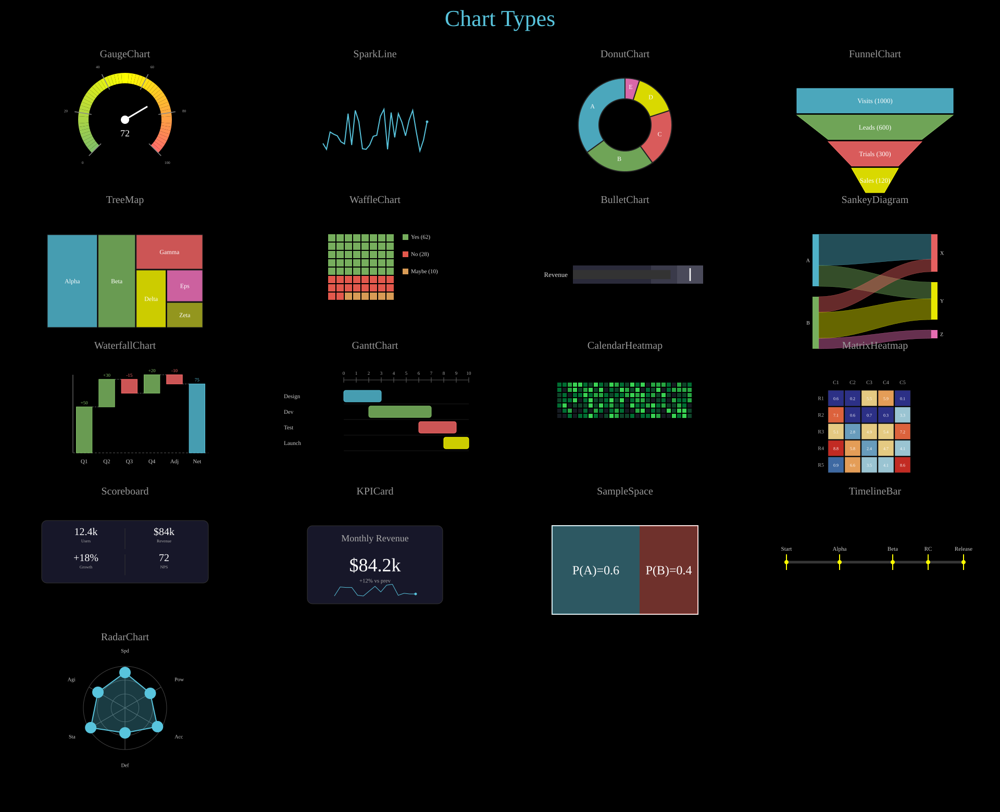
Chart types: GaugeChart, SparkLine, DonutChart, FunnelChart, TreeMap, WaffleChart, BulletChart, SankeyDiagram, WaterfallChart, GanttChart, CalendarHeatmap, MatrixHeatmap, Scoreboard, KPICard, SampleSpace, TimelineBar, RadarChart.
Show code
def col_x(c): return COL_W // 2 + c * COL_W
def lbl_y(r): return FIRST_ROW + r * ROW_H - 10
def obj_y(r): return FIRST_ROW + r * ROW_H + 60
title = Text(text='Chart Types', x=960, y=TITLE_Y, font_size=44,
fill='#58C4DD', stroke_width=0, text_anchor='middle')
objs = [title]
# ── Row 0 ──────────────────────────────────────────────────────────────
# (0,0) GaugeChart
lbl = Text(text='GaugeChart', x=col_x(0), y=lbl_y(0), font_size=20, fill='#999',
stroke_width=0, text_anchor='middle')
obj = GaugeChart(value=72, min_val=0, max_val=100,
x=col_x(0), y=obj_y(0) + 50, radius=80, font_size=18)
objs += [lbl, obj]
# (0,1) SparkLine
lbl = Text(text='SparkLine', x=col_x(1), y=lbl_y(0), font_size=20, fill='#999',
stroke_width=0, text_anchor='middle')
spark_data = [random.randint(10, 90) for _ in range(30)]
obj = SparkLine(data=spark_data, x=col_x(1) - 100, y=obj_y(0) + 30,
width=200, height=80, stroke='#58C4DD', stroke_width=2,
show_endpoint=True)
objs += [lbl, obj]
# (0,2) DonutChart
lbl = Text(text='DonutChart', x=col_x(2), y=lbl_y(0), font_size=20, fill='#999',
stroke_width=0, text_anchor='middle')
obj = DonutChart(values=[35, 25, 20, 15, 5],
labels=['A', 'B', 'C', 'D', 'E'],
cx=col_x(2), cy=obj_y(0) + 60, r=90, inner_radius=50,
font_size=12)
objs += [lbl, obj]
# (0,3) FunnelChart
lbl = Text(text='FunnelChart', x=col_x(3), y=lbl_y(0), font_size=20, fill='#999',
stroke_width=0, text_anchor='middle')
obj = FunnelChart(stages=[('Visits', 1000), ('Leads', 600), ('Trials', 300), ('Sales', 120)],
x=col_x(3) - 150, y=obj_y(0) - 10,
width=300, height=200, font_size=13)
objs += [lbl, obj]
# ── Row 1 ──────────────────────────────────────────────────────────────
# (1,0) TreeMap
lbl = Text(text='TreeMap', x=col_x(0), y=lbl_y(1), font_size=20, fill='#999',
stroke_width=0, text_anchor='middle')
obj = TreeMap(data=[('Alpha', 40), ('Beta', 30), ('Gamma', 20), ('Delta', 15),
('Eps', 10), ('Zeta', 8)],
x=col_x(0) - 150, y=obj_y(1) - 10, width=300, height=180,
font_size=12)
objs += [lbl, obj]
# (1,1) WaffleChart
lbl = Text(text='WaffleChart', x=col_x(1), y=lbl_y(1), font_size=20, fill='#999',
stroke_width=0, text_anchor='middle')
obj = WaffleChart(categories=[('Yes', 62, '#83C167'), ('No', 28, '#FC6255'),
('Maybe', 10, '#F0AC5F')],
x=col_x(1) - 90, y=obj_y(1) - 10, grid_size=8,
cell_size=14, gap=2, font_size=11)
objs += [lbl, obj]
# (1,2) BulletChart
lbl = Text(text='BulletChart', x=col_x(2), y=lbl_y(2 - 1), font_size=20, fill='#999',
stroke_width=0, text_anchor='middle')
obj = BulletChart(actual=75, target=90,
ranges=[(60, '#2a2a3a'), (80, '#3a3a4a'), (100, '#4a4a5a')],
label='Revenue',
x=col_x(2) - 100, y=obj_y(1) + 50, width=250, height=35,
font_size=13)
objs += [lbl, obj]
# (1,3) SankeyDiagram
lbl = Text(text='SankeyDiagram', x=col_x(3), y=lbl_y(1), font_size=20, fill='#999',
stroke_width=0, text_anchor='middle')
obj = SankeyDiagram(flows=[('A', 'X', 30), ('A', 'Y', 20), ('B', 'X', 15),
('B', 'Y', 25), ('B', 'Z', 10)],
x=col_x(3) - 120, y=obj_y(1) - 10, width=240, height=120,
node_width=12, font_size=10)
objs += [lbl, obj]
# ── Row 2 ──────────────────────────────────────────────────────────────
# (2,0) WaterfallChart
lbl = Text(text='WaterfallChart', x=col_x(0), y=lbl_y(2), font_size=20, fill='#999',
stroke_width=0, text_anchor='middle')
obj = WaterfallChart(values=[50, 30, -15, 20, -10],
labels=['Q1', 'Q2', 'Q3', 'Q4', 'Adj', 'Net'],
x=col_x(0) - 160, y=obj_y(2) - 20, width=320, height=200,
font_size=11)
objs += [lbl, obj]
# (2,1) GanttChart
lbl = Text(text='GanttChart', x=col_x(1), y=lbl_y(2), font_size=20, fill='#999',
stroke_width=0, text_anchor='middle')
obj = GanttChart(tasks=[('Design', 0, 3), ('Dev', 2, 7), ('Test', 6, 9), ('Launch', 8, 10)],
x=col_x(1) - 180, y=obj_y(2) - 10, width=360,
bar_height=22, bar_spacing=8, font_size=11)
objs += [lbl, obj]
# (2,2) CalendarHeatmap
lbl = Text(text='CalendarHeatmap', x=col_x(2), y=lbl_y(2), font_size=20, fill='#999',
stroke_width=0, text_anchor='middle')
cal_data = [random.randint(0, 10) for _ in range(7 * 26)]
obj = CalendarHeatmap(data=cal_data, rows=7, cols=26,
x=col_x(2) - 130, y=obj_y(2) - 5,
cell_size=8, gap=2)
objs += [lbl, obj]
# (2,3) MatrixHeatmap
lbl = Text(text='MatrixHeatmap', x=col_x(3), y=lbl_y(2), font_size=20, fill='#999',
stroke_width=0, text_anchor='middle')
matrix_data = [[random.uniform(0, 10) for _ in range(5)] for _ in range(5)]
obj = MatrixHeatmap(data=matrix_data,
row_labels=['R1', 'R2', 'R3', 'R4', 'R5'],
col_labels=['C1', 'C2', 'C3', 'C4', 'C5'],
x=col_x(3) - 110, y=obj_y(2) - 10, cell_size=30, gap=2,
font_size=10)
objs += [lbl, obj]
# ── Row 3 ──────────────────────────────────────────────────────────────
# (3,0) Scoreboard
lbl = Text(text='Scoreboard', x=col_x(0), y=lbl_y(3), font_size=20, fill='#999',
stroke_width=0, text_anchor='middle')
obj = Scoreboard(entries=[('Users', '12.4k'), ('Revenue', '$84k'),
('Growth', '+18%'), ('NPS', '72')],
x=col_x(0) - 150, y=obj_y(3) - 10, col_width=150, row_height=50,
font_size=20, cols=2)
objs += [lbl, obj]
# (3,1) KPICard
lbl = Text(text='KPICard', x=col_x(1), y=lbl_y(3), font_size=20, fill='#999',
stroke_width=0, text_anchor='middle')
kpi_trend = [random.randint(40, 100) for _ in range(15)]
obj = KPICard(title='Monthly Revenue', value='$84.2k', subtitle='+12% vs prev',
trend_data=kpi_trend,
x=col_x(1) - 130, y=obj_y(3) - 10, width=260, height=150,
font_size=36)
objs += [lbl, obj]
# (3,2) SampleSpace
lbl = Text(text='SampleSpace', x=col_x(2), y=lbl_y(3), font_size=20, fill='#999',
stroke_width=0, text_anchor='middle')
obj = SampleSpace(width=280, height=170, x=col_x(2) - 140, y=obj_y(3) - 10)
obj.divide_horizontally(0.6, colors=('#58C4DD', '#FC6255'), labels=['P(A)=0.6', 'P(B)=0.4'])
objs += [lbl, obj]
# (3,3) TimelineBar
lbl = Text(text='TimelineBar', x=col_x(3), y=lbl_y(3), font_size=20, fill='#999',
stroke_width=0, text_anchor='middle')
obj = TimelineBar(markers={0: 'Start', 3: 'Alpha', 6: 'Beta', 8: 'RC', 10: 'Release'},
total_duration=10,
x=col_x(3) - 170, y=obj_y(3) + 60, width=340, height=5,
font_size=11)
objs += [lbl, obj]
# ── Row 4 ──────────────────────────────────────────────────────────────
# (4,0) RadarChart
lbl = Text(text='RadarChart', x=col_x(0), y=lbl_y(4), font_size=20, fill='#999',
stroke_width=0, text_anchor='middle')
obj = RadarChart(
values=[85, 70, 90, 60, 95, 75],
labels=['Spd', 'Pow', 'Acc', 'Def', 'Sta', 'Agi'],
max_val=100, cx=col_x(0), cy=obj_y(4) + 60, radius=80, font_size=10,
)
objs += [lbl, obj]
canvas.add_objects(*objs)
Example: ChartMethods
Chart animation methods: PieChart.sweep_in, PieChart.add_percentage_labels, PieChart.explode, PieChart.highlight_sector, BarChart.grow_from_zero, BarChart.add_bar/remove_bar, BarChart.animate_sort, BarChart.add_value_labels, BarChart.set_bar_color, BarChart.animate_values, BarChart.set_bar_colors.
Show code
def col_x(c): return COL_W // 2 + c * COL_W
def lbl_y(r): return FIRST_ROW + r * ROW_H - 10
def obj_y(r): return FIRST_ROW + r * ROW_H + 100
def row_t(r): return 0.5 + r * ROW_DUR
def make_lbl(name, c, r):
a = row_t(r) + c * STAGGER
lbl = Text(text=name, x=col_x(c), y=lbl_y(r),
font_size=18, fill='#999', stroke_width=0, text_anchor='middle')
lbl.fadein(a - FADE_IN_BEFORE, a)
return lbl
title = Text(text='Chart Methods', x=960, y=TITLE_Y, font_size=44,
fill='#58C4DD', stroke_width=0, text_anchor='middle')
title.write(0, 0.5)
objs = [title]
pie_vals = [35, 25, 20, 20]
pie_colors = ['#E74C3C', '#3498DB', '#2ECC71', '#F39C12']
# ── Row 0: PieChart methods ──────────────────────────────────────────────
# Col 0: sweep_in
r, c = 0, 0
a = row_t(r) + c * STAGGER
objs.append(make_lbl('.sweep_in', c, r))
pie0 = PieChart(pie_vals, colors=pie_colors, cx=col_x(c), cy=obj_y(r), r=90)
pie0.sweep_in(start=a, end=a + ANIM_DUR)
objs.append(pie0)
# Col 1: add_percentage_labels
r, c = 0, 1
a = row_t(r) + c * STAGGER
objs.append(make_lbl('.add_percentage_labels', c, r))
pie1 = PieChart(pie_vals, colors=pie_colors, cx=col_x(c), cy=obj_y(r), r=90)
pie1.sweep_in(start=a, end=a + 0.8)
pie1.add_percentage_labels(font_size=14, color='#fff', creation=a + 0.8)
objs.append(pie1)
# Col 2: explode
r, c = 0, 2
a = row_t(r) + c * STAGGER
objs.append(make_lbl('.explode', c, r))
pie2 = PieChart(pie_vals, colors=pie_colors, cx=col_x(c), cy=obj_y(r), r=90)
pie2.sweep_in(start=a, end=a + 0.8)
pie2.explode([0, 2], distance=15, start=a + 1.0, end=a + ANIM_DUR)
objs.append(pie2)
# Col 3: highlight_sector
r, c = 0, 3
a = row_t(r) + c * STAGGER
objs.append(make_lbl('.highlight_sector', c, r))
pie3 = PieChart(pie_vals, colors=pie_colors, cx=col_x(c), cy=obj_y(r), r=90)
pie3.sweep_in(start=a, end=a + 0.8)
pie3.highlight_sector(1, start=a + 1.0, end=a + ANIM_DUR, pull_distance=25)
objs.append(pie3)
# ── Row 1: BarChart methods ──────────────────────────────────────────────
bar_vals = [60, 40, 80, 50]
bar_labels = ['A', 'B', 'C', 'D']
bar_colors = ['#9B59B6', '#1ABC9C', '#E67E22', '#3498DB']
def bar_x(c): return col_x(c) - 175
def bar_y(r): return obj_y(r) - 60
# Col 0: grow_from_zero
r, c = 1, 0
a = row_t(r) + c * STAGGER
objs.append(make_lbl('.grow_from_zero', c, r))
bc0 = BarChart(bar_vals, labels=bar_labels, colors=bar_colors,
x=bar_x(c), y=bar_y(r), width=350, height=200)
bc0.grow_from_zero(start=a, end=a + ANIM_DUR, stagger=True, delay=0.15)
objs.append(bc0)
# Col 1: add_bar / remove_bar
r, c = 1, 1
a = row_t(r) + c * STAGGER
objs.append(make_lbl('.add_bar / .remove_bar', c, r))
bc1 = BarChart([50, 70, 40], labels=['X', 'Y', 'Z'], colors=bar_colors,
x=bar_x(c), y=bar_y(r), width=350, height=200)
bc1.grow_from_zero(start=a, end=a + 0.6, stagger=False)
bc1.add_bar(90, label='W', start=a + 0.8, end=a + 1.4)
bc1.remove_bar(1, start=a + 1.6, end=a + ANIM_DUR)
objs.append(bc1)
# Col 2: animate_sort
r, c = 1, 2
a = row_t(r) + c * STAGGER
objs.append(make_lbl('.animate_sort', c, r))
bc2 = BarChart([30, 80, 10, 60], labels=['P', 'Q', 'R', 'S'], colors=bar_colors,
x=bar_x(c), y=bar_y(r), width=350, height=200)
bc2.grow_from_zero(start=a, end=a + 0.8, stagger=True, delay=0.1)
bc2.animate_sort(reverse=True, start=a + 1.0, end=a + ANIM_DUR)
objs.append(bc2)
# Col 3: add_value_labels
r, c = 1, 3
a = row_t(r) + c * STAGGER
objs.append(make_lbl('.add_value_labels', c, r))
bc3 = BarChart(bar_vals, labels=bar_labels, colors=bar_colors,
x=bar_x(c), y=bar_y(r), width=350, height=200)
bc3.grow_from_zero(start=a, end=a + 1.0, stagger=True, delay=0.1)
bc3.add_value_labels(fmt='{:.0f}', offset=8, font_size=16, creation=a + 1.0)
objs.append(bc3)
# ── Row 2: BarChart color & value animation ────────────────────────────
# Col 0: set_bar_color
r, c = 2, 0
a = row_t(r) + c * STAGGER
objs.append(make_lbl('.set_bar_color', c, r))
bc4 = BarChart([70, 45, 90, 60], labels=bar_labels, colors=bar_colors,
x=bar_x(c), y=bar_y(r), width=350, height=200)
bc4.grow_from_zero(start=a, end=a + 0.6, stagger=False)
bc4.set_bar_color(2, '#FF6B6B', start=a + 0.8, end=a + ANIM_DUR)
objs.append(bc4)
# Col 1: animate_values
r, c = 2, 1
a = row_t(r) + c * STAGGER
objs.append(make_lbl('.animate_values', c, r))
bc5 = BarChart([70, 45, 90, 60], labels=bar_labels, colors=bar_colors,
x=bar_x(c), y=bar_y(r), width=350, height=200)
bc5.grow_from_zero(start=a, end=a + 0.6, stagger=False)
bc5.animate_values([50, 80, 40, 95], start=a + 0.8, end=a + ANIM_DUR)
objs.append(bc5)
# Col 2: set_bar_colors
r, c = 2, 2
a = row_t(r) + c * STAGGER
objs.append(make_lbl('.set_bar_colors', c, r))
bc6 = BarChart([70, 45, 90, 60], labels=bar_labels, colors=bar_colors,
x=bar_x(c), y=bar_y(r), width=350, height=200)
bc6.grow_from_zero(start=a, end=a + 0.6, stagger=False)
bc6.set_bar_colors(['#FF6B6B', '#FFFF00', '#83C167', '#58C4DD'], start=a + 0.8)
objs.append(bc6)
# ── Finalize ─────────────────────────────────────────────────────────────
canvas.add_objects(*objs)
total_dur = row_t(N_ROWS - 1) + (COLS - 1) * STAGGER + ANIM_DUR + 1.0
Graphs & Diagrams¶
Example: GraphStructures
Graph structures: NetworkGraph with spring layout, FlowChart, Tree (BST search), NetworkTree with Legend.
Show code
def col_x(c): return COL_W // 2 + c * COL_W
def lbl_y(r): return FIRST_ROW + r * ROW_H - 10
def obj_y(r): return FIRST_ROW + r * ROW_H + 30
def row_t(r): return 0.5 + r * ROW_DUR
title = Text(text='Graph Structures', x=960, y=TITLE_Y, font_size=44,
fill='#58C4DD', stroke_width=0, text_anchor='middle')
title.write(0, 0.5)
objs = [title]
# ── (0,0) NetworkGraph ────────────────────────────────────────────────────
lbl = Text(text='NetworkGraph (spring)', x=col_x(0), y=lbl_y(0), font_size=18,
fill='#999', stroke_width=0, text_anchor='middle')
lbl.fadein(0, 0.5)
graph = NetworkGraph(
nodes={'s': 'S', 'a': 'A', 'b': 'B', 'c': 'C', 'd': 'D', 't': 'T'},
edges=[('s', 'a', '10'), ('s', 'b', '8'), ('a', 'c', '5'), ('a', 'd', '7'),
('b', 'c', '3'), ('b', 'd', '6'), ('c', 't', '4'), ('d', 't', '9')],
layout='spring', directed=True, node_r=25,
cx=col_x(0), cy=obj_y(0) + 160,
)
a = row_t(0)
graph.fadein(a, a + 1)
graph.highlight_node('s', a + 1.5, a + 2.5, color='#83C167')
graph.highlight_node('a', a + 2.0, a + 3.0, color='#83C167')
graph.highlight_node('d', a + 2.5, a + 3.5, color='#83C167')
objs.extend([lbl, graph])
# ── (1,0) FlowChart ──────────────────────────────────────────────────────
lbl = Text(text='FlowChart', x=col_x(1), y=lbl_y(0), font_size=18,
fill='#999', stroke_width=0, text_anchor='middle')
lbl.fadein(0, 0.5)
flow = FlowChart(
['Input', 'Process', 'Validate', 'Output'],
direction='right', x=col_x(1) - 370, y=obj_y(0) + 120,
box_width=160, box_height=50, spacing=60,
box_color='#58C4DD', font_size=18,
)
a = row_t(0) + 0.5
flow.stagger('fadein', start=a, end=a + 1.5)
objs.extend([lbl, flow])
# ── (0,1) Tree ───────────────────────────────────────────────────────────
lbl = Text(text='Tree (BST search)', x=col_x(0), y=lbl_y(1), font_size=18,
fill='#999', stroke_width=0, text_anchor='middle')
lbl.fadein(row_t(1) - 0.5, row_t(1))
tree = Tree(
('8', [
('3', [('1', []), ('6', [('4', []), ('7', [])])]),
('10', [('', []), ('14', [('13', []), ('', [])])]),
]),
cx=col_x(0), cy=obj_y(1), h_spacing=80, v_spacing=90, node_r=20, font_size=16,
)
a = row_t(1)
tree.fadein(a, a + 0.8)
tree.highlight_node('8', a + 1.0, a + 2.0, color='#83C167')
tree.highlight_node('3', a + 1.5, a + 2.5, color='#83C167')
tree.highlight_node('6', a + 2.0, a + 3.0, color='#83C167')
tree.highlight_node('4', a + 2.5, a + 3.5, color='#FFFF00')
objs.extend([lbl, tree])
# ── (1,1) NetworkTree + Legend ────────────────────────────────────────────
lbl = Text(text='NetworkTree + Legend', x=col_x(1), y=lbl_y(1), font_size=18,
fill='#999', stroke_width=0, text_anchor='middle')
lbl.fadein(row_t(1) - 0.5, row_t(1))
ntree = Tree(
{'CEO': {'CTO': {'Dev': {}, 'QA': {}}, 'CFO': {'Acct': {}}}},
cx=col_x(1), cy=obj_y(1) + 30, h_spacing=120, v_spacing=90,
)
a = row_t(1) + 0.5
ntree.write(a, a + 1.5)
ntree.highlight_node('CTO', start=a + 2, end=a + 3)
legend = Legend([('#58C4DD', 'Network'), ('#83C167', 'Tree'), ('#FF6B6B', 'Flow')],
x=col_x(1) - 80, y=obj_y(1) + 320, font_size=14)
legend.fadein(a + 1.5, a + 2)
objs.extend([lbl, ntree, legend])
# ── Output ────────────────────────────────────────────────────────────────
canvas.add_objects(*objs)
total_dur = row_t(1) + ROW_DUR + 0.5
Example: Automaton
Deterministic finite automaton (DFA) accepting strings ending in “ab”, with state highlighting.
# Build a simple DFA that accepts strings ending in "ab"
fsm = Automaton(
states=['q0', 'q1', 'q2'],
transitions=[
('q0', 'q1', 'a'),
('q1', 'q2', 'b'),
('q1', 'q1', 'a'),
('q0', 'q0', 'b'),
('q2', 'q1', 'a'),
('q2', 'q0', 'b'),
],
initial_state='q0',
accept_states={'q2'},
radius=200,
)
fsm.fadein(0, 1)
# Simulate processing the string "aab" (auto-stepping through states)
fsm.simulate_input('aab', start=1.5, delay=1.0, color='#FFFF00')
title = Text(text='DFA: Accepts strings ending with "ab"', x=960, y=80,
font_size=36, fill='#fff', stroke_width=0, text_anchor='middle')
title.fadein(0, 0.5)
canvas.add_objects(fsm, title)
if args.for_docs:
canvas.export_video('docs/source/_static/videos/automaton_example.mp4', fps=30, end=6)
Example: DiagramTypes
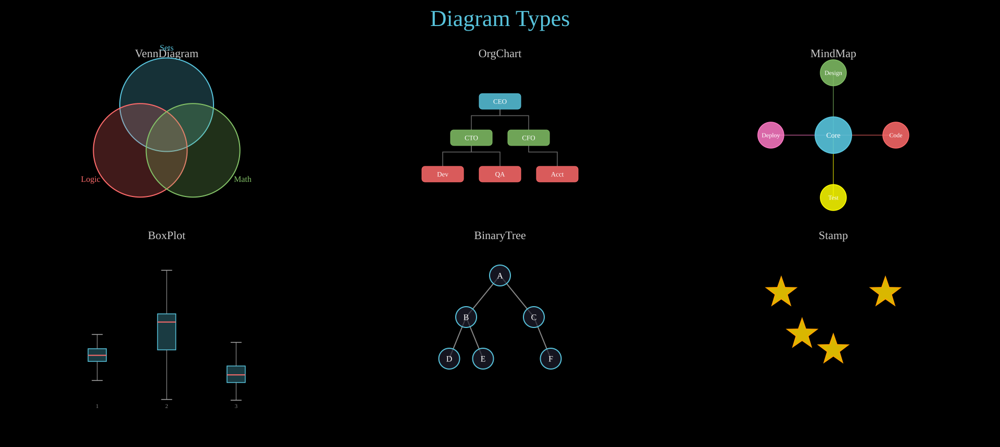
Diagram types: VennDiagram, OrgChart, MindMap, BoxPlot, BinaryTree, Stamp.
Show code
def col_x(c): return COL_W // 2 + c * COL_W
def lbl_y(r): return FIRST_ROW + r * ROW_H - 10
def obj_y(r): return FIRST_ROW + r * ROW_H + 80
title = Text(text='Diagram Types', x=960, y=TITLE_Y, font_size=44,
fill='#58C4DD', stroke_width=0, text_anchor='middle')
objs = [title]
# ── Row 0, Col 0: VennDiagram ──────────────────────────────────────────────
objs.append(Text(text='VennDiagram', x=col_x(0), y=lbl_y(0), font_size=22,
fill='#ccc', stroke_width=0, text_anchor='middle'))
objs.append(VennDiagram(labels=['Sets', 'Logic', 'Math'],
x=col_x(0), y=obj_y(0) + 60, radius=90, font_size=16))
# ── Row 0, Col 1: OrgChart ─────────────────────────────────────────────────
objs.append(Text(text='OrgChart', x=col_x(1), y=lbl_y(0), font_size=22,
fill='#ccc', stroke_width=0, text_anchor='middle'))
org_root = ('CEO', [
('CTO', [('Dev', []), ('QA', [])]),
('CFO', [('Acct', [])]),
])
objs.append(OrgChart(root=org_root, x=col_x(1), y=obj_y(0) - 20,
h_spacing=110, v_spacing=70, box_width=80, box_height=30,
font_size=13))
# ── Row 0, Col 2: MindMap ──────────────────────────────────────────────────
objs.append(Text(text='MindMap', x=col_x(2), y=lbl_y(0), font_size=22,
fill='#ccc', stroke_width=0, text_anchor='middle'))
mind_root = ('Core', [
('Design', []),
('Code', []),
('Test', []),
('Deploy', []),
])
objs.append(MindMap(root=mind_root, cx=col_x(2), cy=obj_y(0) + 60,
radius=120, font_size=14))
# ── Row 1, Col 0: BoxPlot ──────────────────────────────────────────────────
objs.append(Text(text='BoxPlot', x=col_x(0), y=lbl_y(1), font_size=22,
fill='#ccc', stroke_width=0, text_anchor='middle'))
import random
random.seed(42)
data = [
[random.gauss(50, 10) for _ in range(30)],
[random.gauss(65, 15) for _ in range(30)],
[random.gauss(40, 8) for _ in range(30)],
]
objs.append(BoxPlot(data_groups=data, x=col_x(0) - 200, y=obj_y(1) - 30,
plot_width=400, plot_height=250, box_width=35, font_size=11))
# ── Row 1, Col 1: BinaryTree ───────────────────────────────────────────────
objs.append(Text(text='BinaryTree', x=col_x(1), y=lbl_y(1), font_size=22,
fill='#ccc', stroke_width=0, text_anchor='middle'))
tree = ('A',
('B', ('D', None, None), ('E', None, None)),
('C', None, ('F', None, None)))
objs.append(BinaryTree(tree=tree, x=col_x(1), y=obj_y(1) - 20,
h_spacing=130, v_spacing=80, node_radius=20,
font_size=16))
# ── Row 1, Col 2: Stamp ────────────────────────────────────────────────────
objs.append(Text(text='Stamp', x=col_x(2), y=lbl_y(1), font_size=22,
fill='#ccc', stroke_width=0, text_anchor='middle'))
star_template = Star(n=5, outer_radius=30, inner_radius=12,
cx=0, cy=0, fill='#FFD700', fill_opacity=0.85,
stroke='#FFA500', stroke_width=2)
cx2 = col_x(2)
cy2 = obj_y(1) + 60
stamp_points = [
(cx2 - 100, cy2 - 50),
(cx2 + 100, cy2 - 50),
(cx2, cy2 + 60),
(cx2 - 60, cy2 + 30),
]
objs.append(Stamp(template=star_template, points=stamp_points))
canvas.add_objects(*objs)
Math & Science¶
Example: VectorFields
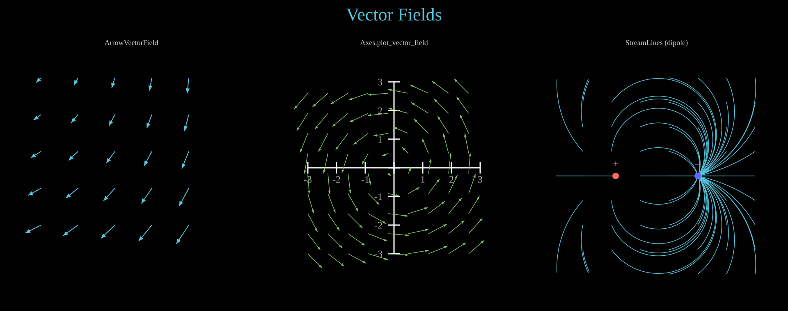
Vector field visualizations: ArrowVectorField, Axes.plot_vector_field, StreamLines (dipole).
Show code
def col_x(c): return COL_W // 2 + c * COL_W
def lbl_y(): return FIRST_ROW - 10
def obj_y(): return FIRST_ROW + 30
title = Text(text='Vector Fields', x=960, y=TITLE_Y, font_size=44,
fill='#58C4DD', stroke_width=0, text_anchor='middle')
objs = [title]
# ── (0) ArrowVectorField ─────────────────────────────────────────────────
lbl = Text(text='ArrowVectorField', x=col_x(0), y=lbl_y(), font_size=18,
fill='#ccc', stroke_width=0, text_anchor='middle')
vf = ArrowVectorField(
lambda x, y: (-y + x * 0.3, x + y * 0.3),
x_range=(col_x(0) - 220, col_x(0) + 220, 90),
y_range=(obj_y() + 40, obj_y() + 480, 90),
max_length=55, stroke='#58C4DD', stroke_width=2,
)
objs.extend([lbl, vf])
# ── (1) Axes plot_vector_field ───────────────────────────────────────────
lbl = Text(text='Axes.plot_vector_field', x=col_x(1), y=lbl_y(), font_size=18,
fill='#ccc', stroke_width=0, text_anchor='middle')
ax = Axes(x_range=(-3, 3), y_range=(-3, 3), plot_width=420, plot_height=420,
x=col_x(1) - 210, y=obj_y() + 50)
ax.add_coordinates()
ax.plot_vector_field(lambda x, y: (-y, x), x_step=0.7, y_step=0.7,
max_length=50, stroke='#83C167', fill='#83C167')
objs.extend([lbl, ax])
# ── (2) StreamLines (dipole) ─────────────────────────────────────────────
lbl = Text(text='StreamLines (dipole)', x=col_x(2), y=lbl_y(), font_size=18,
fill='#ccc', stroke_width=0, text_anchor='middle')
cx_left = col_x(2) - 100
cx_right = col_x(2) + 100
cy_mid = obj_y() + 280
def dipole_field(x, y):
dx1, dy1 = x - cx_left, y - cy_mid
r1_sq = dx1**2 + dy1**2 + 100
dx2, dy2 = x - cx_right, y - cy_mid
r2_sq = dx2**2 + dy2**2 + 100
return (dx1 / r1_sq - dx2 / r2_sq) * 5000, (dy1 / r1_sq - dy2 / r2_sq) * 5000
sl = StreamLines(
dipole_field,
x_range=(col_x(2) - 250, col_x(2) + 250, 70),
y_range=(obj_y() + 40, obj_y() + 520, 60),
n_steps=60, step_size=8,
stroke='#58C4DD', stroke_width=1.5,
)
source = Dot(cx=cx_left, cy=cy_mid, r=8, fill='#FF6666', stroke_width=0)
sink = Dot(cx=cx_right, cy=cy_mid, r=8, fill='#6666FF', stroke_width=0)
src_label = Text(text='+', x=cx_left, y=cy_mid - 22, font_size=24,
fill='#FF6666', stroke_width=0, text_anchor='middle')
snk_label = Text(text='\u2013', x=cx_right, y=cy_mid - 22, font_size=24,
fill='#6666FF', stroke_width=0, text_anchor='middle')
objs.extend([lbl, sl, source, sink, src_label, snk_label])
# ── Output ────────────────────────────────────────────────────────────────
canvas.add_objects(*objs)
Example: ComplexPlane
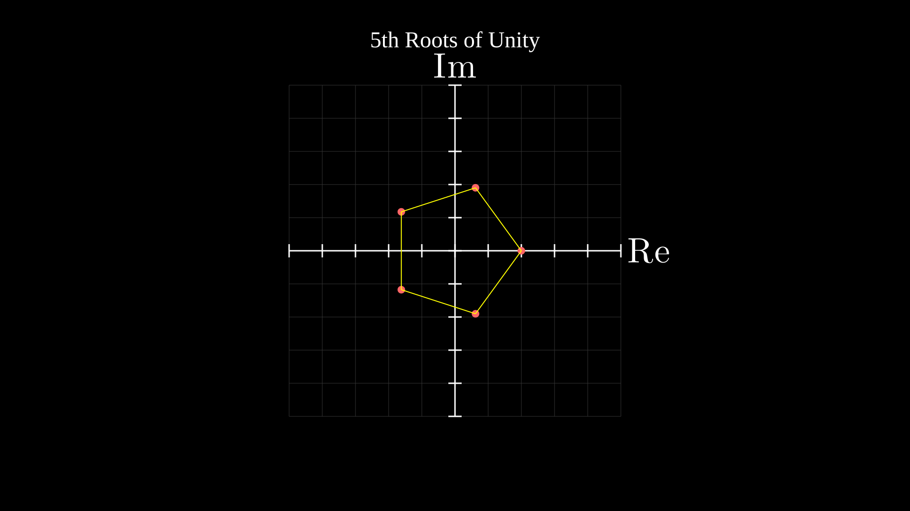
Complex plane with 5th roots of unity plotted as a pentagon.
# Create a complex plane with equal aspect (square plot area)
plane = ComplexPlane(x_range=(-2.5, 2.5), y_range=(-2.5, 2.5),
plot_width=700, plot_height=700,
x=610, y=180, show_grid=True)
# Plot 5th roots of unity as dots connected by lines
n = 5
roots = []
for k in range(n):
angle = 2 * math.pi * k / n
z = complex(math.cos(angle), math.sin(angle))
px, py = plane.number_to_point(z)
dot = Dot(cx=px, cy=py, r=8, fill='#FF6666', stroke_width=0)
roots.append((px, py, dot))
# Connect them with lines to form a pentagon
lines = []
for i in range(n):
x1, y1, _ = roots[i]
x2, y2, _ = roots[(i + 1) % n]
line = Line(x1=x1, y1=y1, x2=x2, y2=y2,
stroke='#FFFF00', stroke_width=2)
lines.append(line)
title = Text(text='5th Roots of Unity', x=960, y=100,
font_size=48, fill='#fff', stroke_width=0, text_anchor='middle')
canvas.add_objects(plane, *[d for _, _, d in roots], *lines, title)
if args.for_docs:
canvas.write_frame(filename='docs/source/_static/videos/complex_plane_example.svg')
Example: NeuralNetwork
Feed-forward neural network diagram with forward propagation animation.
nn = NeuralNetwork([4, 6, 6, 3], cx=960, cy=540, width=900, height=500,
neuron_radius=18, neuron_fill='#58C4DD',
edge_color='#555', edge_width=1)
nn.label_input(['x₁', 'x₂', 'x₃', 'x₄'], font_size=24, buff=35)
nn.label_output(['y₁', 'y₂', 'y₃'], font_size=24, buff=35)
title = Text('Feed-Forward Neural Network', x=960, y=80, font_size=36,
text_anchor='middle', fill='#fff')
nn.fadein(start=0, end=1)
title.fadein(start=0.5, end=1.5)
nn.propagate(start=2, end=4, delay=0.5, color='#FFFF00')
canvas.add_objects(nn, title)
args = parse_args()
if args.for_docs:
canvas.export_video('docs/source/_static/videos/neural_network_example.mp4', fps=30, end=5)
Example: Pendulum
Damped pendulum with path trace — rod swings from a pivot point.
p = Pendulum(pivot_x=960, pivot_y=200, length=350, angle=40,
bob_radius=22, period=2.5, damping=0.05,
start=0, end=10)
p.fadein(start=0, end=0.5)
trace = Trace(p.bob.c, start=0, end=10, stroke='#58C4DD',
stroke_width=2, stroke_opacity=0.4)
title = Text('Damped Pendulum', x=960, y=80, font_size=36,
text_anchor='middle', fill='#fff')
title.fadein(start=0, end=1)
canvas.add_objects(trace, p, title)
args = parse_args()
if args.for_docs:
canvas.export_video('docs/source/_static/videos/pendulum_example.mp4', fps=30, end=10)
Example: NumberPlaneTransform
NumberPlane grid transformed by a 2x2 matrix with animated basis vectors (i-hat, j-hat) using apply_matrix.
# Create number plane with coordinate labels
plane = NumberPlane(x_range=(-5, 5, 1), y_range=(-4, 4, 1))
plane.add_coordinate_labels(font_size=14)
plane.fadein(0, 1)
# Add basis vectors
o = plane.coords_to_point(0, 0)
i_end = plane.coords_to_point(1, 0)
j_end = plane.coords_to_point(0, 1)
i_hat = Arrow(x1=o[0], y1=o[1], x2=i_end[0], y2=i_end[1],
stroke='#83C167', fill='#83C167', stroke_width=5)
j_hat = Arrow(x1=o[0], y1=o[1], x2=j_end[0], y2=j_end[1],
stroke='#FC6255', fill='#FC6255', stroke_width=5)
i_hat.fadein(0.5, 1.5)
j_hat.fadein(0.5, 1.5)
# Apply a rotation matrix (90 degrees CCW)
import math
angle = math.pi / 4 # 45 degrees
matrix = [[math.cos(angle), -math.sin(angle)],
[math.sin(angle), math.cos(angle)]]
plane.apply_matrix(matrix, start=2, end=4)
# Title
title = Text(text='Number Plane Transformations', x=960, y=50,
font_size=36, fill='#fff', stroke_width=0, text_anchor='middle')
title.fadein(0, 0.5)
canvas.add(plane, i_hat, j_hat, title)
if args.for_docs:
canvas.export_video('docs/source/_static/videos/number_plane_transform_example.mp4', fps=30, end=5)
Example: ScienceComponents
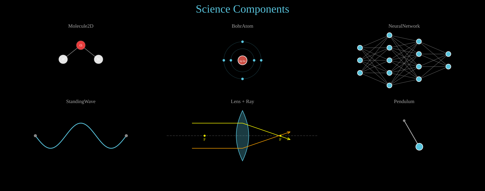
Science components: Molecule2D, BohrAtom, NeuralNetwork, StandingWave, Lens, Ray, Pendulum.
Show code
def col_x(c): return COL_W // 2 + c * COL_W
def lbl_y(r): return FIRST_ROW + r * ROW_H - 10
def obj_y(r): return FIRST_ROW + r * ROW_H + 60
title = Text(text='Science Components', x=960, y=TITLE_Y, font_size=44,
fill='#58C4DD', stroke_width=0, text_anchor='middle')
objs = [title]
# ── Row 0: Chemistry ────────────────────────────────────────────────────
objs.append(Text(text='Molecule2D', x=col_x(0), y=lbl_y(0), font_size=20,
fill='#AAAAAA', stroke_width=0, text_anchor='middle'))
objs.append(Molecule2D(
atoms=[('O', 0, 0), ('H', -1, 0.8), ('H', 1, 0.8)],
bonds=[(0, 1), (0, 2)],
scale=70, cx=col_x(0), cy=obj_y(0), atom_radius=18, font_size=14
))
objs.append(Text(text='BohrAtom', x=col_x(1), y=lbl_y(0), font_size=20,
fill='#AAAAAA', stroke_width=0, text_anchor='middle'))
atom = BohrAtom(protons=6, neutrons=6, electrons=[2, 4],
cx=col_x(1), cy=obj_y(0) + 60,
nucleus_r=18, shell_spacing=28)
objs.append(atom)
objs.append(Text(text='NeuralNetwork', x=col_x(2), y=lbl_y(0), font_size=20,
fill='#AAAAAA', stroke_width=0, text_anchor='middle'))
nn = NeuralNetwork([3, 5, 4, 2], cx=col_x(2), cy=obj_y(0) + 60,
width=350, height=200, neuron_radius=10)
objs.append(nn)
# ── Row 1: Waves & Optics ──────────────────────────────────────────────
objs.append(Text(text='StandingWave', x=col_x(0), y=lbl_y(1), font_size=20,
fill='#AAAAAA', stroke_width=0, text_anchor='middle'))
sw = StandingWave(x1=col_x(0) - 180, y1=obj_y(1) + 60, x2=col_x(0) + 180,
y2=obj_y(1) + 60, amplitude=50, harmonics=3, frequency=0,
start=0, end=0, stroke='#58C4DD', stroke_width=3)
objs.append(sw)
objs.append(Text(text='Lens + Ray', x=col_x(1), y=lbl_y(1), font_size=20,
fill='#AAAAAA', stroke_width=0, text_anchor='middle'))
lens = Lens(cx=col_x(1), cy=obj_y(1) + 60, height=200, focal_length=150,
color='#58C4DD', show_focal_points=True, show_axis=True)
ray1 = Ray(x1=col_x(1) - 200, y1=obj_y(1) + 10, angle=0, length=400,
lenses=[lens], color='#FFFF00', stroke_width=2, show_arrow=True)
ray2 = Ray(x1=col_x(1) - 200, y1=obj_y(1) + 110, angle=0, length=400,
lenses=[lens], color='#FFA500', stroke_width=2, show_arrow=True)
objs.extend([lens, ray1, ray2])
objs.append(Text(text='Pendulum', x=col_x(2), y=lbl_y(1), font_size=20,
fill='#AAAAAA', stroke_width=0, text_anchor='middle'))
pend = Pendulum(pivot_x=col_x(2), pivot_y=obj_y(1), length=120, angle=30,
bob_radius=14, period=2.0, damping=0, start=0, end=0)
objs.append(pend)
canvas.add_objects(*objs)
Example: ThreeDObjects
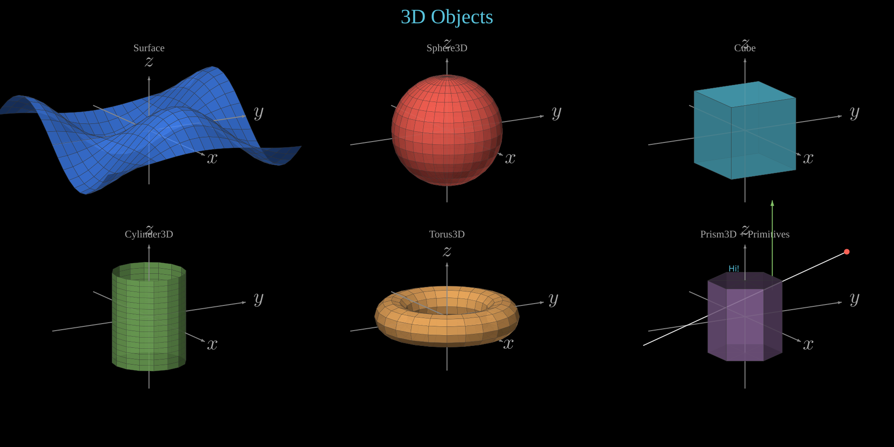
3D objects: Surface, Sphere3D, Cube, Cylinder3D, Torus3D, Prism3D, Line3D, Dot3D, Arrow3D, Text3D.
Show code
def col_x(c): return COL_W // 2 + c * COL_W
def lbl_y(r): return FIRST_ROW + r * ROW_H - 10
def obj_y(r): return FIRST_ROW + r * ROW_H + 160
title = Text(text='3D Objects', x=960, y=TITLE_Y, font_size=44,
fill='#58C4DD', stroke_width=0, text_anchor='middle')
objs = [title]
# Helper to create a label for each cell
def cell_label(text, col, row):
return Text(text=text, x=col_x(col), y=lbl_y(row), font_size=22,
fill='#aaa', stroke_width=0, text_anchor='middle')
# --- Row 0, Col 0: Surface (height-map) ---
objs.append(cell_label('Surface', 0, 0))
ax_surf = ThreeDAxes(x_range=(-3, 3), y_range=(-3, 3), z_range=(-1.5, 1.5),
cx=col_x(0), cy=obj_y(0), scale=80,
phi=math.radians(75), theta=math.radians(-30),
show_ticks=False, show_labels=False)
ax_surf.plot_surface(lambda x, y: math.sin(x) * math.cos(y),
resolution=(20, 20), fill_color='#4488ff',
stroke_width=0.5, fill_opacity=0.8)
objs.append(ax_surf)
# --- Row 0, Col 1: Sphere3D ---
objs.append(cell_label('Sphere3D', 1, 0))
ax_sphere = ThreeDAxes(x_range=(-3, 3), y_range=(-3, 3), z_range=(-2, 2),
cx=col_x(1), cy=obj_y(0), scale=80,
phi=math.radians(75), theta=math.radians(-30),
show_ticks=False, show_labels=False)
sphere = Sphere3D(radius=1.5, center=(0, 0, 0), fill_color='#FC6255', fill_opacity=0.9)
ax_sphere.add_surface(sphere)
objs.append(ax_sphere)
# --- Row 0, Col 2: Cube ---
objs.append(cell_label('Cube', 2, 0))
ax_cube = ThreeDAxes(x_range=(-3, 3), y_range=(-3, 3), z_range=(-2, 2),
cx=col_x(2), cy=obj_y(0), scale=80,
phi=math.radians(75), theta=math.radians(-30),
show_ticks=False, show_labels=False)
cube_faces = Cube(side_length=2, center=(0, 0, 0), fill_color='#58C4DD')
for face in cube_faces:
ax_cube.add_surface(face)
objs.append(ax_cube)
# --- Row 1, Col 0: Cylinder3D ---
objs.append(cell_label('Cylinder3D', 0, 1))
ax_cyl = ThreeDAxes(x_range=(-3, 3), y_range=(-3, 3), z_range=(-2, 2),
cx=col_x(0), cy=obj_y(1), scale=80,
phi=math.radians(75), theta=math.radians(-30),
show_ticks=False, show_labels=False)
cyl = Cylinder3D(radius=1, height=2.5, center=(0, 0, 0), fill_color='#83C167')
ax_cyl.add_surface(cyl)
objs.append(ax_cyl)
# --- Row 1, Col 1: Torus3D ---
objs.append(cell_label('Torus3D', 1, 1))
ax_torus = ThreeDAxes(x_range=(-4, 4), y_range=(-4, 4), z_range=(-2, 2),
cx=col_x(1), cy=obj_y(1), scale=60,
phi=math.radians(75), theta=math.radians(-30),
show_ticks=False, show_labels=False)
torus = Torus3D(major_radius=2, minor_radius=0.6, center=(0, 0, 0), fill_color='#F0AC5F')
ax_torus.add_surface(torus)
objs.append(ax_torus)
# --- Row 1, Col 2: Prism3D + primitives ---
objs.append(cell_label('Prism3D + Primitives', 2, 1))
ax_prism = ThreeDAxes(x_range=(-3, 3), y_range=(-3, 3), z_range=(-2, 2),
cx=col_x(2), cy=obj_y(1), scale=80,
phi=math.radians(75), theta=math.radians(-30),
show_ticks=False, show_labels=False)
prism_faces = Prism3D(n_sides=6, radius=1, height=2, center=(0, 0, 0), fill_color='#9A72AC')
for face in prism_faces:
ax_prism.add_surface(face)
# Add primitives around the prism
ax_prism.add_3d(Line3D(start=(-2, -2, -1), end=(2, 2, 2), stroke='#E8E8E8', stroke_width=2))
ax_prism.add_3d(Dot3D(point=(2, 2, 2), radius=6, fill='#FC6255'))
ax_prism.add_3d(Arrow3D(start=(-2, 2, 0), end=(-2, 2, 2.5), stroke='#83C167', stroke_width=2))
ax_prism.add_3d(Text3D('Hi!', point=(2, -1.5, 2), font_size=18, fill='#58C4DD'))
objs.append(ax_prism)
canvas.add_objects(*objs)
Styling & Effects¶
Example: Gradients
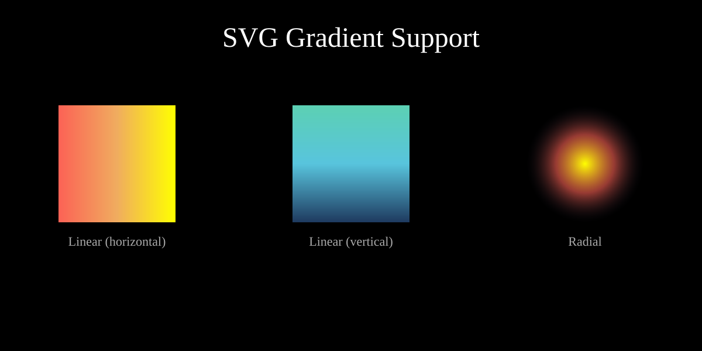
Linear and radial SVG gradients applied to shapes.
# Create gradients
sunset = LinearGradient([
(0, '#FC6255'),
(0.5, '#F0AC5F'),
(1, '#FFFF00'),
])
canvas.add_def(sunset)
ocean = LinearGradient([
(0, '#1e3a5f'),
(0.5, '#58C4DD'),
(1, '#5CD0B3'),
], x1='0%', y1='100%', x2='0%', y2='0%') # vertical
canvas.add_def(ocean)
glow = RadialGradient([
(0, '#FFFF00', 1),
(0.5, '#FC6255', 0.6),
(1, '#1e1e2e', 0),
])
canvas.add_def(glow)
# Apply gradients to shapes — evenly spaced across the canvas
col_w = 1200 // 3
shape_size = 200
r1 = Rectangle(shape_size, shape_size, x=col_w * 0 + (col_w - shape_size) // 2, y=180,
fill=sunset.fill_ref(), fill_opacity=1, stroke_width=0)
r2 = Rectangle(shape_size, shape_size, x=col_w * 1 + (col_w - shape_size) // 2, y=180,
fill=ocean.fill_ref(), fill_opacity=1, stroke_width=0)
c1 = Circle(r=shape_size // 2, cx=col_w * 2 + col_w // 2, cy=180 + shape_size // 2,
fill=glow.fill_ref(), fill_opacity=1, stroke_width=0)
# Labels
l1 = Text(text='Linear (horizontal)', x=col_w * 0 + col_w // 2, y=420, font_size=22,
fill='#aaa', stroke_width=0, text_anchor='middle')
l2 = Text(text='Linear (vertical)', x=col_w * 1 + col_w // 2, y=420, font_size=22,
fill='#aaa', stroke_width=0, text_anchor='middle')
l3 = Text(text='Radial', x=col_w * 2 + col_w // 2, y=420, font_size=22,
fill='#aaa', stroke_width=0, text_anchor='middle')
title = Text(text='SVG Gradient Support', x=600, y=80,
font_size=48, fill='#fff', stroke_width=0, text_anchor='middle')
canvas.add_objects(r1, r2, c1, l1, l2, l3, title)
if args.for_docs:
canvas.write_frame(filename='docs/source/_static/videos/gradient_example.svg')
Example: ShapeTypes
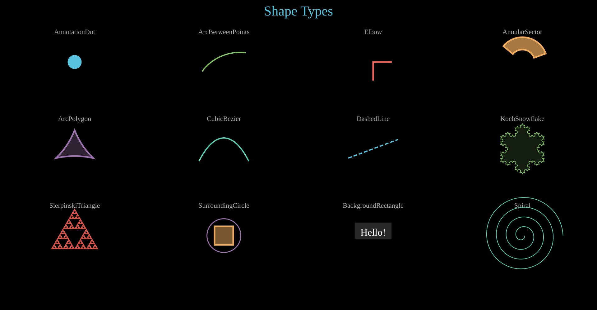
Shape types: AnnotationDot, ArcBetweenPoints, Elbow, AnnularSector, ArcPolygon, CubicBezier, DashedLine, KochSnowflake, SierpinskiTriangle, SurroundingCircle, BackgroundRectangle.
Show code
COLORS = ['#58C4DD', '#83C167', '#FC6255', '#F0AC5F', '#9A72AC', '#5CD0B3']
def col_x(c): return COL_W // 2 + c * COL_W
def lbl_y(r): return FIRST_ROW + r * ROW_H - 10
def obj_y(r): return FIRST_ROW + r * ROW_H + 80
title = Text(text='Shape Types', x=960, y=TITLE_Y, font_size=44,
fill='#58C4DD', stroke_width=0, text_anchor='middle')
objs = [title]
def label(name, col, row):
return Text(text=name, x=col_x(col), y=lbl_y(row), font_size=22,
fill='#aaa', stroke_width=0, text_anchor='middle')
# ── Row 0 ──────────────────────────────────────────────────────────
objs.append(label('AnnotationDot', 0, 0))
objs.append(AnnotationDot(r=20, cx=col_x(0), cy=obj_y(0),
stroke=COLORS[0], fill=COLORS[0]))
objs.append(label('ArcBetweenPoints', 1, 0))
cx1, cy1 = col_x(1), obj_y(0)
objs.append(ArcBetweenPoints(start=(cx1 - 70, cy1 + 30),
end=(cx1 + 70, cy1 - 30),
angle=60, stroke=COLORS[1], stroke_width=4))
objs.append(label('Elbow', 2, 0))
objs.append(Elbow(cx=col_x(2), cy=obj_y(0), width=60, height=60,
stroke=COLORS[2], stroke_width=5))
objs.append(label('AnnularSector', 3, 0))
objs.append(AnnularSector(inner_radius=40, outer_radius=80,
cx=col_x(3), cy=obj_y(0),
start_angle=20, end_angle=140,
fill=COLORS[3], stroke=COLORS[3]))
# ── Row 1 ──────────────────────────────────────────────────────────
objs.append(label('ArcPolygon', 0, 1))
cx0, cy0 = col_x(0), obj_y(1)
sz = 60
objs.append(ArcPolygon(
(cx0, cy0 - sz), (cx0 + sz, cy0 + sz // 2), (cx0 - sz, cy0 + sz // 2),
arc_angles=25, stroke=COLORS[4], fill=COLORS[4], fill_opacity=0.3))
objs.append(label('CubicBezier', 1, 1))
cx1, cy1 = col_x(1), obj_y(1)
objs.append(CubicBezier(
p0=(cx1 - 80, cy1 + 40), p1=(cx1 - 30, cy1 - 60),
p2=(cx1 + 30, cy1 - 60), p3=(cx1 + 80, cy1 + 40),
stroke=COLORS[5], stroke_width=4))
objs.append(label('DashedLine', 2, 1))
cx2, cy2 = col_x(2), obj_y(1)
objs.append(DashedLine(x1=cx2 - 80, y1=cy2 + 30,
x2=cx2 + 80, y2=cy2 - 30,
dash='12,6', stroke=COLORS[0], stroke_width=4))
objs.append(label('KochSnowflake', 3, 1))
objs.append(KochSnowflake(cx=col_x(3), cy=obj_y(1), size=140, depth=3,
stroke=COLORS[1], fill=COLORS[1], fill_opacity=0.15))
# ── Row 2 ──────────────────────────────────────────────────────────
objs.append(label('SierpinskiTriangle', 0, 2))
objs.append(SierpinskiTriangle(cx=col_x(0), cy=obj_y(2), size=150, depth=4,
fill=COLORS[2], stroke=COLORS[2]))
objs.append(label('SurroundingCircle', 1, 2))
sq = Square(side=60, x=col_x(1), y=obj_y(2),
fill=COLORS[3], fill_opacity=0.5, stroke=COLORS[3])
sc = SurroundingCircle(sq, buff=12, stroke=COLORS[4], stroke_width=3)
objs += [sq, sc]
objs.append(label('BackgroundRectangle', 2, 2))
txt = Text(text='Hello!', x=col_x(2), y=obj_y(2), font_size=32,
fill='#fff', stroke_width=0, text_anchor='middle')
bg = BackgroundRectangle(txt, buff=10, fill='#333', fill_opacity=0.8)
objs += [bg, txt]
objs.append(label('Spiral', 3, 2))
objs.append(Spiral(cx=col_x(3), cy=obj_y(2), a=5, b=5, turns=4,
stroke=COLORS[5], stroke_width=2))
canvas.add_objects(*objs)
Camera¶
Example: FocusCamera
Camera focus/zoom on individual objects, then reset to full view.
# Objects scattered across the canvas
c1 = Circle(r=60, cx=300, cy=300, fill='#58C4DD', fill_opacity=0.8)
c1.fadein(0, 0.5)
c2 = Circle(r=40, cx=1600, cy=700, fill='#83C167', fill_opacity=0.8)
c2.fadein(0, 0.5)
label1 = Text(text='Object A', x=300, y=220, font_size=24, fill='#fff', stroke_width=0,
text_anchor='middle')
label1.fadein(0, 0.5)
label2 = Text(text='Object B', x=1560, y=650, font_size=24, fill='#fff', stroke_width=0)
label2.fadein(0, 0.5)
# Focus on first object
canvas.focus_on(c1, label1, start=1, end=2, padding=80)
# Reset view
canvas.camera_reset(3, 4)
# Focus on second object
canvas.focus_on(c2, label2, start=5, end=6, padding=80)
# Reset view
canvas.camera_reset(7, 8)
title = Text(text='Camera Focus Demo', x=960, y=80,
font_size=48, fill='#FFFF00', stroke_width=0, text_anchor='middle')
title.write(0, 1)
canvas.add_objects(c1, c2, label1, label2, title)
if args.for_docs:
canvas.export_video('docs/source/_static/videos/focus_camera_example.mp4', fps=30, end=6)
Games¶
Example: ChessBoard
Chess board with the starting position and piece movement.
# Create a chess board with the starting position
board = ChessBoard(size=640)
board.fadein(0, 1)
# Play the Italian Game opening
board.move_piece('e2', 'e4', 1, 2) # 1. e4
board.move_piece('e7', 'e5', 2, 3) # 1. ...e5
board.move_piece('g1', 'f3', 3, 4) # 2. Nf3
board.move_piece('b8', 'c6', 4, 5) # 2. ...Nc6
board.move_piece('f1', 'c4', 5, 6) # 3. Bc4 (Italian Game)
canvas.add_objects(board)
if args.for_docs:
canvas.export_video('docs/source/_static/videos/chess_example.mp4', fps=30, end=6)
Physics¶
Example: PhysicsBouncingObjects
Various shapes bouncing with gravity, walls, and collisions using PhysicsSpace.
Show code
duration = 8 rng = random.Random(42) title = Text(text='Bouncing Objects', x=960, y=60, font_size=48, fill='#58C4DD', stroke_width=0, text_anchor='middle') title.write(0, 1) space = PhysicsSpace(gravity=(0, 800), dt=1/120) space.add_walls(left=60, right=1860, top=60, bottom=1020) walls = [ Line(x1=60, y1=1020, x2=1860, y2=1020, stroke='#555', stroke_width=2), Line(x1=60, y1=60, x2=1860, y2=60, stroke='#555', stroke_width=2), Line(x1=60, y1=60, x2=60, y2=1020, stroke='#555', stroke_width=2), Line(x1=1860, y1=60, x2=1860, y2=1020, stroke='#555', stroke_width=2), ] colors = [ '#FF6B6B', '#58C4DD', '#83C167', '#FFFF00', '#9B59B6', '#FF9F43', '#E74C3C', '#1ABC9C', '#E84393', '#6C5CE7', '#00CEC9', '#FD79A8', '#A29BFE', '#FFEAA7', '#55E6C1', ] def make_random(i): """Create a random shape with random size, position, and velocity.""" size = rng.randint(15, 40) cx = rng.randint(80 + size, 1840 - size) cy = rng.randint(80 + size, 500) vx, vy = rng.randint(-300, 300), rng.randint(-400, 100) color = colors[i % len(colors)] style = dict(fill=color, fill_opacity=0.85, stroke=lighten(color, 0.3), stroke_width=2) kind = rng.choice([ 'circle', 'ellipse', 'star', 'triangle', 'pentagon', 'hexagon', 'octagon', 'diamond', 'wedge', 'annular_sector', ]) if kind == 'circle': obj = Circle(r=size, cx=cx, cy=cy, **style) elif kind == 'ellipse': rx, ry = size, rng.randint(int(size * 0.5), int(size * 0.8)) obj = Ellipse(rx=rx, ry=ry, cx=cx, cy=cy, **style) elif kind == 'star': obj = Star(outer_radius=size, inner_radius=size * 0.45, cx=cx, cy=cy, **style) elif kind == 'diamond': s = size * 0.9 obj = Polygon((cx, cy - s), (cx + s * 0.6, cy), (cx, cy + s), (cx - s * 0.6, cy), **style) elif kind == 'wedge': sweep = rng.randint(60, 150) start_a = rng.randint(0, 360) obj = Wedge(cx=cx, cy=cy, r=size, start_angle=start_a, end_angle=start_a + sweep, **style) elif kind == 'annular_sector': sweep = rng.randint(60, 150) start_a = rng.randint(0, 360) inner = size * 0.4 obj = AnnularSector(inner_radius=inner, outer_radius=size, cx=cx, cy=cy, start_angle=start_a, end_angle=start_a + sweep, **style) else: n = {'triangle': 3, 'pentagon': 5, 'hexagon': 6, 'octagon': 8}[kind] obj = RegularPolygon(n=n, radius=size, cx=cx, cy=cy, **style) space.add_body(obj, mass=(size / 20) ** 2, restitution=0.8, friction=0.02, vx=vx, vy=vy) return obj objects = [make_random(i) for i in range(45)] space.add_drag(coefficient=0.002) space.simulate(duration=duration) for obj in objects: obj.fadein(0, 0.3) canvas.add_objects(*walls, title, *objects) if args.for_docs: canvas.export_video('docs/source/_static/videos/physics_bouncing_objects.mp4', fps=30)
Example: PhysicsSpring
A spring pendulum: a bob attached to a fixed anchor oscillates under gravity, leaving a trace path.
Show code
duration = 10 # Title title = Text(text='Spring Pendulum', x=960, y=60, font_size=48, fill='#58C4DD', stroke_width=0, text_anchor='middle') title.write(0, 1) # Anchor point (fixed in space, top center) anchor_x, anchor_y = 960, 150 anchor_dot = Dot(r=8, cx=anchor_x, cy=anchor_y, fill='#aaa', stroke='#fff', stroke_width=2) # The bob: a colored circle attached by a spring # Start offset to the right so it swings as a pendulum bob_start_x, bob_start_y = 1300, 250 bob = Circle(r=28, cx=bob_start_x, cy=bob_start_y, fill='#FF6B6B', fill_opacity=0.9, stroke=lighten('#FF6B6B', 0.3), stroke_width=3) # Connecting line (spring visual) between anchor and bob spring_line = Line(x1=anchor_x, y1=anchor_y, x2=bob_start_x, y2=bob_start_y, stroke='#FFFF00', stroke_width=2, stroke_dasharray='8 4') # Trace of the bob's path trace = Trace(bob.c, start=0, end=duration, stroke='#FF6B6B', stroke_width=1.5, stroke_opacity=0.3) # Physics space # Stiffness must be high enough to support the bob: # equilibrium stretch = m*g / k = 1.5*500 / 8 = 94px # → bob hangs ~344px below anchor at rest (y ≈ 494) space = PhysicsSpace(gravity=(0, 500), dt=1/120) # Add the bob as a physics body body = space.add_body(bob, mass=1.5, restitution=0.5, vx=-150, vy=0) # Spring connecting the bob to the fixed anchor point space.add_spring( (anchor_x, anchor_y), # fixed anchor (tuple = static point) body, # the bob stiffness=8, rest_length=250, damping=0.3, ) # Add light drag for realistic energy loss space.add_drag(coefficient=0.001) # Add a floor wall so the bob doesn't fly off screen space.add_wall(y=1000) # Run simulation space.simulate(duration=duration) # Bake the spring line endpoints to track anchor (static) and bob (dynamic) # The anchor end stays fixed; the bob end follows the body trajectory traj = body._trajectory n = len(traj) dt = space.dt start_t = space.start def bob_pos(t, _traj=traj, _start=start_t, _dt=dt, _n=n): elapsed = t - _start if elapsed <= 0: return _traj[0] idx = elapsed / _dt i = int(idx) if i >= _n - 1: return _traj[-1] frac = idx - i x1, y1 = _traj[i] x2, y2 = _traj[i + 1] return (x1 + (x2 - x1) * frac, y1 + (y2 - y1) * frac) spring_line.p2.set_onward(0, bob_pos) # Small decorative label label = Text(text='k = 8, m = 1.5', x=960, y=1040, font_size=28, fill='#888', stroke_width=0, text_anchor='middle') label.fadein(0.5, 1.5) # Add everything to canvas canvas.add_objects(trace, spring_line, anchor_dot, bob, title, label) if args.for_docs: canvas.export_video('docs/source/_static/videos/physics_spring.mp4', fps=30, end=10)
Example: PhysicsCloth
Cloth simulation with the top row pinned, fluttering under gravity using spring constraints.
duration = 8
# Title
title = Text(text='Cloth Simulation', x=960, y=60,
font_size=48, fill='#58C4DD', stroke_width=0, text_anchor='middle')
title.write(0, 1)
# Create a cloth: top row pinned, draping under gravity
# Centered horizontally, starting near the top of the canvas
cloth = Cloth(
x=510, y=120,
width=900, height=300,
cols=18, rows=10,
pin_top=True,
stiffness=18,
color='#58C4DD',
)
# Add a gentle sideways wind force that varies over time
import math
def wind_force(body, t):
# Oscillating horizontal wind with some vertical turbulence
wind_x = 30 * math.sin(t * 1.2) + 10 * math.sin(t * 3.7)
wind_y = 8 * math.cos(t * 2.5)
return (wind_x, wind_y)
cloth.space.add_force(wind_force)
cloth.space.add_drag(coefficient=0.02)
# Run the simulation
cloth.simulate(duration=duration)
# Get all the visual objects (lines + dots)
cloth_objects = cloth.objects()
# Add everything to canvas
canvas.add_objects(title, *cloth_objects)
if args.for_docs:
canvas.export_video('docs/source/_static/videos/physics_cloth.mp4', fps=30, end=8)
UI Components¶
Example: UIWidgets
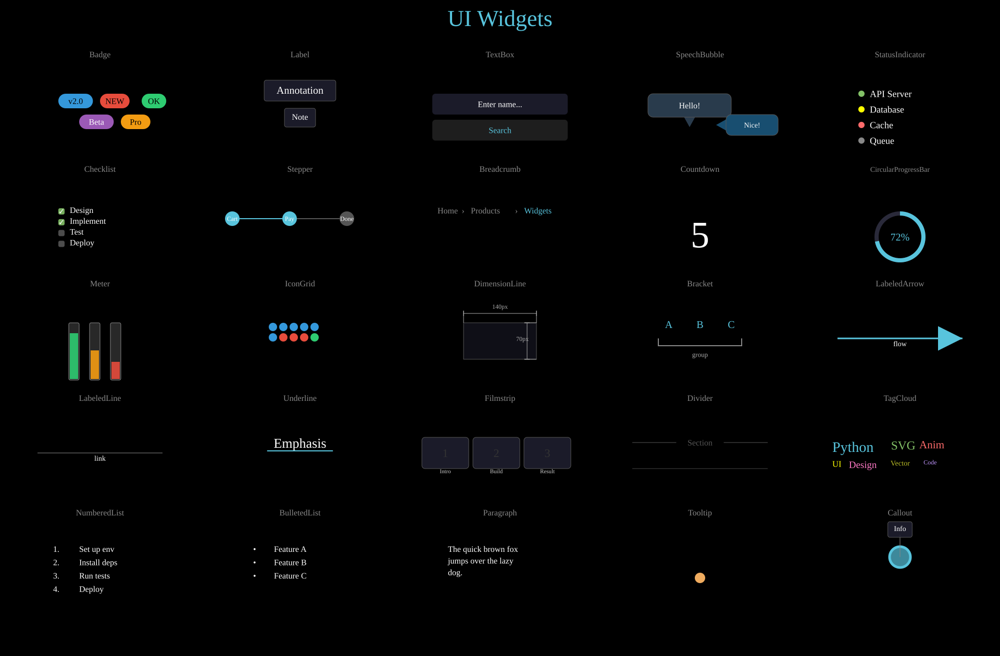
UI widgets: Badge, Label, TextBox, SpeechBubble, StatusIndicator, Checklist, Stepper, Breadcrumb, Countdown, CircularProgressBar, Meter, IconGrid, DimensionLine, Bracket, LabeledArrow, LabeledLine, Underline, Filmstrip, Divider, TagCloud, NumberedList, BulletedList, Paragraph, RoundedCornerPolygon, Callout.
Show code
def col_x(c): return COL_W // 2 + c * COL_W
def lbl_y(r): return FIRST_ROW + r * ROW_H - 10
def obj_y(r): return FIRST_ROW + r * ROW_H + 60
title = Text(text='UI Widgets', x=960, y=TITLE_Y, font_size=44,
fill='#58C4DD', stroke_width=0, text_anchor='middle')
objs = [title]
# ── Row 0 ────────────────────────────────────────────────────────────────
# (0,0) Badge
lbl = Text(text='Badge', x=col_x(0), y=lbl_y(0), font_size=16,
fill='#888', stroke_width=0, text_anchor='middle')
b1 = Badge('v2.0', x=col_x(0) - 80, y=obj_y(0), bg_color='#3498DB')
b2 = Badge('NEW', x=col_x(0), y=obj_y(0), bg_color='#E74C3C')
b3 = Badge('OK', x=col_x(0) + 80, y=obj_y(0), bg_color='#2ECC71')
b4 = Badge('Beta', x=col_x(0) - 40, y=obj_y(0) + 40, bg_color='#9B59B6', text_color='#fff')
b5 = Badge('Pro', x=col_x(0) + 40, y=obj_y(0) + 40, bg_color='#F39C12')
objs.extend([lbl, b1, b2, b3, b4, b5])
# (1,0) Label
lbl = Text(text='Label', x=col_x(1), y=lbl_y(0), font_size=16,
fill='#888', stroke_width=0, text_anchor='middle')
l1 = Label('Annotation', x=col_x(1), y=obj_y(0), font_size=20)
l2 = Label('Note', x=col_x(1), y=obj_y(0) + 50, font_size=16)
objs.extend([lbl, l1, l2])
# (2,0) TextBox
lbl = Text(text='TextBox', x=col_x(2), y=lbl_y(0), font_size=16,
fill='#888', stroke_width=0, text_anchor='middle')
tb1 = TextBox('Enter name...', x=col_x(2) - 130, y=obj_y(0), width=260,
font_size=16, box_fill='#1e1e2e')
tb2 = TextBox('Search', x=col_x(2) - 130, y=obj_y(0) + 50, width=260,
font_size=16, box_fill='#222', text_color='#58C4DD')
objs.extend([lbl, tb1, tb2])
# (3,0) SpeechBubble
lbl = Text(text='SpeechBubble', x=col_x(3), y=lbl_y(0), font_size=16,
fill='#888', stroke_width=0, text_anchor='middle')
sb1 = SpeechBubble('Hello!', x=col_x(3) - 100, y=obj_y(0), font_size=16,
width=160, height=45, box_fill='#2C3E50')
sb2 = SpeechBubble('Nice!', x=col_x(3) + 50, y=obj_y(0) + 40, font_size=14,
width=100, height=40, box_fill='#1a5276', tail_direction='left')
objs.extend([lbl, sb1, sb2])
# (4,0) StatusIndicator
lbl = Text(text='StatusIndicator', x=col_x(4), y=lbl_y(0), font_size=16,
fill='#888', stroke_width=0, text_anchor='middle')
si1 = StatusIndicator('API Server', status='online', x=col_x(4) - 80, y=obj_y(0))
si2 = StatusIndicator('Database', status='warning', x=col_x(4) - 80, y=obj_y(0) + 30)
si3 = StatusIndicator('Cache', status='offline', x=col_x(4) - 80, y=obj_y(0) + 60)
si4 = StatusIndicator('Queue', status='pending', x=col_x(4) - 80, y=obj_y(0) + 90)
objs.extend([lbl, si1, si2, si3, si4])
# ── Row 1 ────────────────────────────────────────────────────────────────
# (0,1) Checklist
lbl = Text(text='Checklist', x=col_x(0), y=lbl_y(1), font_size=16,
fill='#888', stroke_width=0, text_anchor='middle')
cl = Checklist(('Design', True), ('Implement', True), 'Test', 'Deploy',
x=col_x(0) - 80, y=obj_y(1), font_size=16, spacing=1.3)
objs.extend([lbl, cl])
# (1,1) Stepper
lbl = Text(text='Stepper', x=col_x(1), y=lbl_y(1), font_size=16,
fill='#888', stroke_width=0, text_anchor='middle')
st = Stepper(['Cart', 'Pay', 'Done'], x=col_x(1) - 130, y=obj_y(1) + 20,
spacing=110, radius=14, active=1, font_size=12)
objs.extend([lbl, st])
# (2,1) Breadcrumb
lbl = Text(text='Breadcrumb', x=col_x(2), y=lbl_y(1), font_size=16,
fill='#888', stroke_width=0, text_anchor='middle')
bc = Breadcrumb('Home', 'Products', 'Widgets',
x=col_x(2) - 120, y=obj_y(1) + 10, font_size=16)
objs.extend([lbl, bc])
# (3,1) Countdown
lbl = Text(text='Countdown', x=col_x(3), y=lbl_y(1), font_size=16,
fill='#888', stroke_width=0, text_anchor='middle')
cd = Countdown(start_value=5, end_value=0, x=col_x(3), y=obj_y(1) + 50,
font_size=72, start=0, end=0.01)
objs.extend([lbl, cd])
# (4,1) CircularProgressBar
lbl = Text(text='CircularProgressBar', x=col_x(4), y=lbl_y(1), font_size=14,
fill='#888', stroke_width=0, text_anchor='middle')
cpb = CircularProgressBar(72, x=col_x(4), y=obj_y(1) + 55, radius=45,
stroke_width=8, font_size=20)
objs.extend([lbl, cpb])
# ── Row 2 ────────────────────────────────────────────────────────────────
# (0,2) Meter
lbl = Text(text='Meter', x=col_x(0), y=lbl_y(2), font_size=16,
fill='#888', stroke_width=0, text_anchor='middle')
m1 = Meter(value=0.8, x=col_x(0) - 60, y=obj_y(2), width=20, height=110,
fill_color='#2ECC71')
m2 = Meter(value=0.5, x=col_x(0) - 20, y=obj_y(2), width=20, height=110,
fill_color='#F39C12')
m3 = Meter(value=0.3, x=col_x(0) + 20, y=obj_y(2), width=20, height=110,
fill_color='#E74C3C')
objs.extend([lbl, m1, m2, m3])
# (1,2) IconGrid
lbl = Text(text='IconGrid', x=col_x(1), y=lbl_y(2), font_size=16,
fill='#888', stroke_width=0, text_anchor='middle')
ig = IconGrid([(6, '#3498DB'), (3, '#E74C3C'), (1, '#2ECC71')],
x=col_x(1) - 60, y=obj_y(2), cols=5, size=16, gap=4)
objs.extend([lbl, ig])
# (2,2) DimensionLine
lbl = Text(text='DimensionLine', x=col_x(2), y=lbl_y(2), font_size=16,
fill='#888', stroke_width=0, text_anchor='middle')
dim_rect = Rectangle(width=140, height=70, x=col_x(2) - 70, y=obj_y(2),
fill='#1e1e2e', fill_opacity=0.5, stroke='#555', stroke_width=1)
dl1 = DimensionLine((col_x(2) - 70, obj_y(2)), (col_x(2) + 70, obj_y(2)),
label='140px', offset=-18, font_size=12)
dl2 = DimensionLine((col_x(2) + 70, obj_y(2)), (col_x(2) + 70, obj_y(2) + 70),
label='70px', offset=18, font_size=12)
objs.extend([lbl, dim_rect, dl1, dl2])
# (3,2) Bracket
lbl = Text(text='Bracket', x=col_x(3), y=lbl_y(2), font_size=16,
fill='#888', stroke_width=0, text_anchor='middle')
items = VCollection(
Text(text='A', x=col_x(3) - 60, y=obj_y(2) + 10, font_size=20,
fill='#58C4DD', stroke_width=0, text_anchor='middle'),
Text(text='B', x=col_x(3), y=obj_y(2) + 10, font_size=20,
fill='#58C4DD', stroke_width=0, text_anchor='middle'),
Text(text='C', x=col_x(3) + 60, y=obj_y(2) + 10, font_size=20,
fill='#58C4DD', stroke_width=0, text_anchor='middle'),
)
br = Bracket(x=col_x(3) - 80, y=obj_y(2) + 30, width=160, height=14,
direction='down', text='group', font_size=13, stroke='#888')
objs.extend([lbl, items, br])
# (4,2) LabeledArrow
lbl = Text(text='LabeledArrow', x=col_x(4), y=lbl_y(2), font_size=16,
fill='#888', stroke_width=0, text_anchor='middle')
la = LabeledArrow(x1=col_x(4) - 120, y1=obj_y(2) + 30,
x2=col_x(4) + 120, y2=obj_y(2) + 30,
label='flow', font_size=14, stroke='#58C4DD')
objs.extend([lbl, la])
# ── Row 3 ────────────────────────────────────────────────────────────────
# (0,3) LabeledLine
lbl = Text(text='LabeledLine', x=col_x(0), y=lbl_y(3), font_size=16,
fill='#888', stroke_width=0, text_anchor='middle')
ll = LabeledLine(x1=col_x(0) - 120, y1=obj_y(3) + 30,
x2=col_x(0) + 120, y2=obj_y(3) + 30,
label='link', font_size=14, stroke='#888', stroke_width=1)
objs.extend([lbl, ll])
# (1,3) Underline
lbl = Text(text='Underline', x=col_x(1), y=lbl_y(3), font_size=16,
fill='#888', stroke_width=0, text_anchor='middle')
ul_text = Text(text='Emphasis', x=col_x(1), y=obj_y(3) + 20, font_size=26,
fill='#fff', stroke_width=0, text_anchor='middle')
ul = Underline(ul_text, buff=6, stroke='#58C4DD', stroke_width=2)
objs.extend([lbl, ul_text, ul])
# (2,3) Filmstrip
lbl = Text(text='Filmstrip', x=col_x(2), y=lbl_y(3), font_size=16,
fill='#888', stroke_width=0, text_anchor='middle')
fs = Filmstrip(['Intro', 'Build', 'Result'], x=col_x(2) - 150, y=obj_y(3),
frame_width=90, frame_height=60, spacing=8, font_size=11)
objs.extend([lbl, fs])
# (3,3) Divider
lbl = Text(text='Divider', x=col_x(3), y=lbl_y(3), font_size=16,
fill='#888', stroke_width=0, text_anchor='middle')
div1 = Divider(x=col_x(3) - 130, y=obj_y(3) + 10, length=260, label='Section')
div2 = Divider(x=col_x(3) - 130, y=obj_y(3) + 60, length=260, stroke='#444')
objs.extend([lbl, div1, div2])
# (4,3) TagCloud
lbl = Text(text='TagCloud', x=col_x(4), y=lbl_y(3), font_size=16,
fill='#888', stroke_width=0, text_anchor='middle')
tc = TagCloud([('Python', 10), ('SVG', 8), ('Anim', 7), ('UI', 5),
('Design', 6), ('Vector', 4), ('Code', 3)],
x=col_x(4) - 130, y=obj_y(3), width=260, min_font=12, max_font=28)
objs.extend([lbl, tc])
# ── Row 4 ────────────────────────────────────────────────────────────────
# (0,4) NumberedList
lbl = Text(text='NumberedList', x=col_x(0), y=lbl_y(4), font_size=16,
fill='#888', stroke_width=0, text_anchor='middle')
nl = NumberedList('Set up env', 'Install deps', 'Run tests', 'Deploy',
x=col_x(0) - 90, y=obj_y(4), font_size=16)
objs.extend([lbl, nl])
# (1,4) BulletedList
lbl = Text(text='BulletedList', x=col_x(1), y=lbl_y(4), font_size=16,
fill='#888', stroke_width=0, text_anchor='middle')
bl = BulletedList('Feature A', 'Feature B', 'Feature C',
x=col_x(1) - 90, y=obj_y(4), font_size=16, bullet='\u2022')
objs.extend([lbl, bl])
# (2,4) Paragraph
lbl = Text(text='Paragraph', x=col_x(2), y=lbl_y(4), font_size=16,
fill='#888', stroke_width=0, text_anchor='middle')
pg = Paragraph('The quick brown fox', 'jumps over the lazy', 'dog.',
x=col_x(2) - 100, y=obj_y(4), font_size=16, alignment='left')
objs.extend([lbl, pg])
# (3,4) Tooltip
lbl = Text(text='Tooltip', x=col_x(3), y=lbl_y(4), font_size=16,
fill='#888', stroke_width=0, text_anchor='middle')
tt_target = Dot(cx=col_x(3), cy=obj_y(4) + 50, r=10,
fill='#F0AC5F', stroke_width=0)
tt = Tooltip('Hover info', tt_target, start=0, duration=999, font_size=14)
objs.extend([lbl, tt_target, tt])
# (4,4) Callout
lbl = Text(text='Callout', x=col_x(4), y=lbl_y(4), font_size=16,
fill='#888', stroke_width=0, text_anchor='middle')
target_circ = Circle(r=20, cx=col_x(4), cy=obj_y(4) + 10,
fill='#58C4DD', fill_opacity=0.7, stroke='#58C4DD')
co = Callout('Info', target_circ, direction='up', distance=50, font_size=14)
objs.extend([lbl, target_circ, co])
canvas.add_objects(*objs)